IRISS 00 - Welcome to IRISS
Preamble
The Rust programming language has a bit of a reputation: it's hard to learn.
Certainly, when I learned Rust in 2017, I struggled with it.
But its 2024 now, I think things have changed.
I'm putting my time where my mouth is and making a series teaching Rust as quickly and, I hope, painlessly as possible.
This series has a free accompanying book, check the description below.
I'm Daniel, welcome to IRISS.
Why / Why Not
We're not going to jump into coding today though.
Sorry, in TTRPG terms, this is session zero.
I want to talk about why you should or should not learn Rust
what other learning resources are out there
and how this series is going to compare
Why Rust
So why should you learn Rust?
I could tell you that:
- It's blazingly fast
- It holds your hand and makes it hard to make mistakes
- Its first party tooling is second to none
- It has a mature ecosystem of tools and libraries
- And it has an amazingly kind and supportive community
All of these statements are true.
And all of these are great reasons to pick Rust up for your next personal or professional project.
But in my mind, there's one reason everyone should consider trying out Rust:
Because its fun!
Seriously, Rust is my happy place.
Sure, like any language, it has its frustrations.
But when I work with Rust I feel smart
I have less horrible surprises than other languages I use professionally.
Amd I have a lot of confidence that my code will "just work", that I won't need to come back to fix bugs and if I do, I'll be able to quickly understand old code, write new tests and fix any problems.
And, I'm not alone, since its 1.0 release Rust has been Stack Overflows "most loved" language eight years in a row.
This isn't just fanatics like me saying "its great" but is the percentage of people who used the language this year, that still want to use it next year.
Why Not Rust
Ok, but why shouldn't you learn Rust.
As much as I love Rust, there is a reason it may not be the language for you... and it's a big one.
If you are looking to learn a language to get a job (and you're not specifically interested in Blockchain) Rust is not going to be a good language... for now.
That said, things have been slowly changing.
More businesses are picking it up due to its low cost to write, run and maintain.
The biggest cost for businesses looking to adopt Rust is training people, but there are more and more of us out there and perhaps 2024 will finally be the tipping point.
Nonetheless, right now, if you're looking for a job, better languages to learn would be TypeScript or Python.
As well as being more marketable, these are genuinely great languages, and Rust will still be here when the time is right for you.
Other Learning Resources
My goal here is to get you into Rust, and if this series isn't for you, or if you want to supplement IRISS with other resources, these are, in my mind, the (other) best ways to learn Rust
The Official Book
The Rust Programming Language book, also known as "the living book" is where I started seven years ago, but, it's had seven years of growth, and its amazing.
The main difference between the book and IRISS is that the book focuses on how the language works, while IRISS focuses on how its written.
We will talk about how the language works but only in the context of why we write it the way that we do.
IRISS does, however, follow a similar path to both the official book and Rustlings (our next resource), so it should be easy to jump between all three.
Rustlings
Rustlings is a "learn by doing" guide to Rust. It works by giving you specific exercises to help you understand the language a bit at a time.
The gamification of the course makes it really fun, and I still use Rustlings to help keep myself sharp.
There is also an IntelliJ Edu adaptation of Rustlings so if you install the free Community version of IntelliJ IDEA, you can have an in editor tutorial.
Rust by Example
Rust by Example does exactly what it says on the tin.
It focuses on the implementation of the Rust language.
This is great to quickly look things up if you know what you want to know, however, there's some minor pseudo-anti-patterns here that if you don't already know are anti-patterns, you might accidentally copy.
Don't worry though, we'll cover these here but also tools like Clippy (which we'll also cover) will be quick to point them out.
Idiomatic Rust in Simple Steps
So, why use IRISS if there are these other great resources?
Idiomatic Rust in Simple Steps lines up nicely with these other resources and can supplement them or vice versa.
While the other resources focus on simply learning the language, IRISS focuses on how and why we write the language the way we do.
This might seem like the same thing, but here we'll ramp up on idioms quickly so that you can understand other peoples code as well as write code that other people can understand.
This matters!
My biggest hot take of the software industry is that: Software engineers are not paid to write code, we're paid to solve problems.
The best engineers I've worked with have solved problems without writing a single line of code, and the cheapest code to maintain is the code you didn't write.
Beyond this though, solving problems, even with code, takes understanding and collaboration. If when you join a team you already understand why they write code the way they do, you're going to become productive much faster.
Whats Next
In the next video we're going to cover, installing Rust, setting up your development environment and your first hello world program.
I'm also going to teach you one neat trick that will super charge your learning and development skills!
If that's good bait, then I look forward to seeing you next time.
Setting Up
Preamble
So, you want to learn the Rust programming language but where do you even start?
- How do you install it
- How do you work with it
- How do you write our first program
- And whats going on inside
Today we're gonna answer these questions.
This series has a free accompanying book, in which you can find all the details for this tutorial, check the description below.
My name is Daniel, welcome to IRISS
Installing Rust
How you install Rust depends on the operating system you're using.
I'm going to go over Mac and Linux first as they're both the same and quite simple.
Then I'll cover Windows which is a little bit different.
After that we'll go over setting up our development which is roughly the same for all systems, so use the video chapters to skip to the parts of the video that are appropriate for you.
Mac and Linux
Setting up Rust on Mac and Linux is exactly the same process... exactly the same, except for this one thing.
Before we begin, on Mac, you'll need to make sure you have xcode build tools.
Do that by opening up a terminal window and typing xcode dash select dash dash install
My Mac already has xcode's tools installed, if you don't have it, but this takes a good 20 minutes, so be patient and come back when its done.
On Linux, you'll need to make sure you have gcc. Different flavours of Linux use different package managers, but if you're using Linux as your daily driver, I'm hoping you already know how to use yours.
To demonstrate on Raspberry Pi, I'm going to type sudo apt install gcc, though you can see this Pi already has it installed.
Everything else on these two systems is the same, so, next, head over to rustup dot rs and pop this in your console.
You'll be asked if you want to customize the install, I'm not going to so I'll choose 1 and press enter.
After a minute or two, the installation completes and it'll suggests sourcing the cargo env file.
You only need to do this if you want to use Rusts tools in the current terminal session, which we do, so lets do that
Now we can check that everything has installed correctly by running cargo version
And you should see something like this
Thats it, we're ready to go. Head on to the Development Environment chapter unless you're particularly curious about the Windows install
Windows
Build Tools
Installing Rust on Windows is little bit more challenging but you've got this, I believe in you
First we're going to need Microsoft build tools. To get them we'll head to visualstudio dot microsoft dot com slash downloads and download the community edition
This installer is your gateway to a lot of stuff... almost none of which we actually need.
Click the tab for Individual components and search for the following
C++ x64 slash x86 build tools
Select the latest version
Next search for Windows SDK and choose the appropriate version for you.
I'm running Windows 11, so I'll choose the latest version of that SDK.
Then we'll click install and wait for it to do its thing. This can take a while so feel free to pause the video and grab a cup of tea.
Rust up
Now that we've got the build tools we can get the rust installer which we get from rustup dot rs
Download rustup-init.exe
When we run this we're given the option to customize the installation.
I'm not going to do that so I'll choose 1.
Once this is complete we can check that everything is working ok by opening a terminal (either cmd or powershell) and running cargo version
And you should see something like this
GCC
Ok, there's one more step that is... arguably optional and we (probably) won't need it for this series but as soon as you step outside the series, you'll run into problems without it
You see Rust is a compiled language that can talk to and use other bits of compiled code
There are different ways to compile code and although at this point, you can compile anything we're going to build in this series, you won't be able to compile everything that you could compile on Windows
For that we need GCC
The easiest way I've found to install GCC is via MSYS2
However, this... isn't great. If anyone knows of an easier way to get it, please please comment below.
=== New way ===
Hi, Daniel from the future here!
I found an easier way! While I'd previously tried package managers for this install step but wasn't happy with how you install, and more importantly, uninstall the package managers themselves.
While researching a Database called SurrealDB I found another Windows package manager called Scoop, which is easier to use. To get it, head over to their website and copy the installation steps into Powershell.
Once installed, we just type scoop install main/gcc
We can see that its installed properly straight after by typing gcc --version
Thats it, and we can skip a solid 5 minutes of unnecessary work!
Lets move on to Development Environments!
=== End new way ===
=== Old way ===
In the mean time, lets do this
First, we're going to grab the installer from msys2 dot org
and then run that
MSYS2 is a little bit fussy about where you install it so if in doubt just pop it where it wants to be
I'm going to install mine to the D drive in programs slash msys2
Wherever you put it, keep its location in mind, we'll have to find it again shortly
Once its installed, we need to make sure we have the ability to access any tools we install with it
We can do this by adding its binaries directory to the system path
This allows Windows to use anything installed there from anywhere else
First lets open the location where we installed it
Then open the ucrt64 directory, then bin
Copy the full address to the bin directory, you can do this by right clicking the address bar and clicking "Copy Address"
Next we need to update the system path.
Go to your start menu and search for "environment", then click "Edit the system environment variables"
This, weirdly, doesn't take you straight to environment variables, but there is a button to do that at the bottom of this screen.
Select Path, then hit edit
Click New on the right and paste in the address from earlier
Ok, last step
We're going to run the application MSYS2 UCRT64
And we'll run pacman dash capital S mingw dash w64 dash ucrt dash x86 underscore 64 dash gcc
You'll be asked for confirmation, just hit enter
This will install gcc and all of its dependencies
Once finished we can check this worked with gcc dash dash version
Phew, thats it, if you're still here, you are incredible!
The first time I tried this I honestly nearly cried
If you haven't done so already, its a good idea to restart your computer before moving on
Once you're back we'll set up a development environment
=== End Old Way ===
The Development Environment
A software developers environment is something very specific to them. Some people love vim and neovim, others like Nova, I'm personally a big fan of the IntelliJ ecosystem.
If you've already found the tools for you and they have good Rust support, there's no wrong answer here, use whatever makes you happy.
If you're new to software engineering though, and not looking to fork out potentially hundreds on tooling, I recommend Visual Studio Code.
It's free, it's perhaps the most widely used and supported editor today, and can be greatly extended through plugins.
It's the editor I'll be using throughout this series as I believe it will be the most familiar to people.
Lets go to code dot visualstudio dot com to download it
After installing it, we will need some plugins to work with Rust.
To get them, we'll start the app
Then click the extension button in the side bar
So... what do we need?
rust-analyzer
First and perhaps most obviously, we need language support. Rust Analyzer will give us syntax highlighting, auto complete, type hints, show documentation, allow symbol editing and will just generally make out lives a lot easier.
Lets grab that by clicking install
CodeLLDB
This is the tool that's going to give us software engineering super powers
Sometimes you can be working on code and its not doing what you expect
"Happens to everyone all of the time, no need to worry"
Wouldn't it be cool to just step over each line of code as it runs and see exactly whats happening
LLDB will let us do that
We'll cover how it works in a bit, for now lets just grab it
Even Better TOML
The Rust ecosystem makes heavy use of the TOML file format
We'll talk about this more later in the series but now is a good time to pick up this extension
crates
Finally, Rust developers share code through a mechanism called Crates
The crates extension will help us keep any crates we're using up to date
Again, we're not going to dive into this just yet but we should get it now while we're here
Hello World
With all of that out of the way, we are finally ready to create our first program
After all you've achieved already, you're not going to believe how easy the next bit is
The first program most developers write in a new language is called Hello World
All it does is that when you run it, it will, in some way, output Hello World, so lets do that
Lets open up a terminal and navigate somewhere we want to work
So, for example, on Mac or Linux, I might make a directory in my home folder
On Windows I might navigate to My Documents and make a directory there
Now we'll use cargo, remember cargo, from what seems like forever ago, to make our new project
cargo new hello hyphen world
Now we can open the project in visual studio code by typing code hello hyphen world
As you can see, cargo has created a few files for us
A .gitignore file which is useful for version control
Version Control Systems are out of scope of this series but I highly recommend looking into a system called Git
This will let you save your work in incremental steps as well as being an industry standard method of sharing and collaboration
Cargo.toml describes the project as a whole, what dependencies it uses and any special preparations or settings it needs
We'll come back to this file in the future but for now we won't be using it
Finally we have our source directory in which all of our Rust code will live
The name of the file main.rs is used to tell Rust that we're going to make an executable program
Inside we'll see we can already see some code
Before I go through it all, lets run the program
For now we can do this from the terminal which we can access inside Code
Pro Tip for new Visual Studio Code users, if you want to do something and aren't sure how, you can hold Control (or Command on Macs) Shift and hit P
This brings up a little search bar you can use to find what you want in this case a terminal
Sometimes you might have to scroll a little to find the exact right thing but recently used things will filter to the top so we don't have to do this too often
The terminal should open in our projects directory so all we have to do now is type cargo run
We get some output that its compiled and then we get our Hello World written to the screen!
Well that was easy. Our first rust program which we've arguably built ourselves without writing a single line of code manually
You'll find that the Rust community has put a lot of effort into making Rust as easy as possible to learn an use
Anatomy of Hello World
Looking at our main.rs lets break it down line by line
First we have this fn main() {
In Rust, fn is how we describe a function and a function is basically just a little chunk of code
We'll talk more about functions in a future video
The next bit "main" is the name of the funciton
We can usually call functions anything we like but when we create an executable program, one that can be run on its own, we need a function called "main" to be the start point
The parentheses after the name of the function is where we normally put parameters
Parameters are how we pass data into a function, but we don't pass data into the main function so this is empty
The curly bracket that opens on this line has a matching closing curly bracket that denotes where the function ends, everything inside is part of the function
Inside the function we have one line but lets break it into parts
First, the println (or print line) with an exclamation mark might look a bit like another function however, when you see a label like print line followed by an exclamation mark its actually something called a macro.
Creating macros is a very advanced topic and we won't cover that until near the end of this series, however, they are incredibly powerful and we will be using them a lot.
For now, don't worry about it, all you need to know is that they can do a lot more than functions and often don't behave anything like functions
We still have parentheses delimiting the start and end of what we're passing to the macro, but in this case you could also use square brackets or curly brackets, but for print line parentheses are the convention
Inside the print line we have a sequence of characters, surrounded by double quotes. This is, generally called a string. Rust actually has lots of different kinds of strings, and we'll go into them more in the next video.
Feel free to change this to change the message being printed out.
Running and Debugging
Before we end this video, I believe I promised you all some super powers
First lets make a quick change
Lets add our name into a variable.
I'll be talking more about variables in a couple of videos time, but quickly, we declare a variable with let, give it a name put an equals sign after and then the value
String values like this need to be delimited with double quotes in Rust
Quite nicely this reads as let name equal Daniel
Another quick note: if your name does not use American English characters, this type of string in Rust is UTF-8 by default and your name should be fine, however, your operating system might not be so when it writes it our, your milage may vary.
For example, my Mac is fine with my cats name, Yuki, but Windows, not so much
Anyway, we're going to modify our print line now to include the variable
There are a number of ways we can achieve this but the idiomatic way to do this is to use curly brackets and put the variable name inside
Before we run our program again, if you mouse over the line number on line 3, you should see a little red dot appear, click it
This is whats called a break point
Next we're going to run our program inside Code by pressing F5 and... uh oh... error message
Don't panic, this is just because we didn't tell Code how to run the program, luckily it can work it out for us
This varies a little bit on Mac and Windows but we're just going to tell it to run the program with LLDB
Now when we press F5 again, the program compiles and starts running but look! It stopped at the break point
We can now hover over the variable and see not only whats inside but how its stored
Having the ability to do this is incredible when trying to debug things or understand how something works
Next Time
And that's it for today! It was a longer one today but honestly, just getting started might be the hardest part of the whole series, but you did it and that's awesome, I'm legitimately proud of you
Next time we're going to make a slightly more advanced program by taking a bit of input and doing some comparisons
This way we can get a better feel for how Rust looks and feels.
If thats interesting to you, don't forget to like and subscribe
In the meantime, seriously, well done, take some time to reflect on your achievement,
You're now an official Rustacean
And I'll see you next time!
Setting Up
Preamble
When you create a program, how does it remember things? Last time, we created a variable and put our name inside it. Where was our name stored?
Jumping into memory already might seem unusual.
A lot of programming tutorials in any language would like to get you writing code before you have to worry about such things.
However, I think right off the bat we have a wonderful opportunity to talk about how memory works in Rust and, because memory is so important to how Rust works, learning this will simplify everything else going forward.
Today, we're going to make an extremely simple program and use that as the basis to explain how Rust remembers.
This series has a free accompanying book, in which you can find all the details for this tutorial, check the description below.
My name is Daniel, welcome to IRISS
The Guessing Game
To learn about memory, we'll make a simplified version of the guessing game from the official Rust book. Start by opening your terminal and navigating to where-ever your creating you projects, just like last time, then we'll create a new project with:
cargo new guessing-game
Then we'll open the project go to the file src/main.rs. As before we'll see the same "hello, world" program:
fn main() { println!("Hello, world!"); }
Let's quickly change our hello world message to something that welcomes us to the game.
#fn main() { println!("Welcome to the guessing game!"); #}
And add another print line that tells the user what to expect
#fn main() { println!("Welcome to the guessing game!"); println!("I have chosen a color red, green or blue, can you guess which?"); #}
Let's pick a color that the user has to guess, I'm going to pick "blue" but feel free to pick your favourite
Before we move on, I want to talk about the "type" of the data we've just created.
We're going to cover types properly in the next video, but I want to quickly point some things out.
The type of data describes a number of things but mainly, how that data is represented in memory and how it can be used.
For example, is the data a string (like "blue"), or a number, or a boolean that represent true or false.
As you can see, my editor has written colon ampersand str after actual. This isn't part of the text, it's just there to show me the "type" of the variable.
This means that the variable actual contains a "reference" (represented by the &) to a "string slice" (represented
by str). We'll talk about why the variable only contains a reference and not the data itself later. You could, if you
like, manually write this yourself, however, it's generally better to let Rust infer the
type, and only write it yourself if either Rust is unable to decide (because it could be multiple things) or in the case
that Rust has a default type, you want to use something different.
Anyway, back to the program: let's output the color so that we can see the program is working ok
Great... but not much of a game is it, you don't even have time to guess before you're told what it is.
Before we tell the user what the actual color was lets ask them to guess.
In order to get some user input, we need to read from the terminal.
When the program runs in the terminal, we can ask the user to type things.
Regardless of whether you are on Windows, Mac or Linux, this input is passed into the program through a stream of data called standard in.
Rust comes with a "standard library", the name is unrelated to the stream, they both just happen to be "standard"
We can access the standard library as a module called std. I pronounce this S T D, but I think most people say "stud"
and I should really start doing that.
Modules in Rust are a way of grouping up other bits of code such as functions, data types and even other modules.
We'll talk about them more in a future video.
Inside of this is another module called io that deals with input and output.
If we weren't using the println! macro, this is where we'd have to come to write things out to the terminal too, via
a stream called stdout (standard out). println! is a nice little wrapper that makes writing to stdout pretty
trivial.
For completion's sake I should mention that, in addition to standard in and standard out, there is one more stream called standard error. This is also an output stream that we can use to separate informational output that is not part of the normal use of the program, whether that be errors or just information not directly relevant to the main output.
stderr is really useful for things like logging, which we'll talk about in the future, but if you want to quickly
write something to this stream you can use eprintln! and eprint! the same way we use println! and print!
So, we get stdin using std::io::stdin(), this is a function call (we'll talk about functions in a couple of videos),
that returns something called a "handle" that we can use for temporary access to the input stream.
The double colons just tell Rust that we're looking for something inside a module. We'll cover modules in detail later, including how, why and when to make our own, as well as better ways to access them, but since we only need to write this line once, this is the easiest way to do it.
We could store the result of stdin() in a variable, however, we only use this handle once, and then we're done with
it.
So, off the back of the function call, we can call immediately call .lines().
This is a method (a special type of function that belongs specifically to some other thing, in this case it belongs to the handle for stdin).
.lines() returns an iterator, allowing us to iterate (or step through) each line one at a time. We get the next line
by calling .next() on the iterator.
Wait wait wait, what are those expects about?!
expect() is, I would say, the second-worst way you could handle something going wrong in your program.
This is not "idiomatic" and you absolutely should not use this in anything except the most throw away software as it will immediately cause the program to stop and spew a lot of information at the user.
In the future we'll talk about things going wrong and how to better handle them, however, as this program is just for you, I think you'll cope for now. üòä
That doesn't explain what these lines are doing, or why there are two of them though. The reason for this is that there
are two possible ways .lines() might not work.
The first expect then:
.expect("No input was read")When we call .next() on any iterator, there either is something next or there isn't. In some languages this concept of
something or nothing might be represented as either the data you wanted or null.
For example, in another language we might ask for a string and get "red" or null.
"red" is a string but null is not... what happens if you try to use the returned value as if it was a string?
In languages with this behaviour might produce and error at the point where the data is used, not where it was generated, so you have to make sure to always check that your data is what it's supposed to be, which, the language isn't making an effort to remind you to do.
Obviously many people think this ambiguity is bad, including Tony Hoare, arguably the "inventor" of this behavior, who has called it his "billion-dollar mistake".
Rust does not allow you to use types like this interchangeably, so data can not be a string or null as these types are not compatible.
In Rust, we use a kind of container type to get around this called Option.
Option is an enum meaning its value is one of a set number of variants, in this case the variant is either Some or None
If the variant of the Option is Some then it contains our value, otherwise it does not.
Importantly, when a function returns an Option type you, the programmer, must check to see if it contains
Some data and then extract the data if it's there.
There are a number of ways to do this and .expect is one of the worst ways to do this. It will attempt to extract the
data if its there, or stop the program abruptly with the provided error message if it's not.
We'll talk about better ways to handle this in the future.
For the time being we're going to just say we can't deal with it not being there, we don't want to continue running the program, and we want the program to stop.
We use .expect("message") to say, if this is nothing, we are giving up, stop the program and print our message
(plus a few other useful bits) to the stderr.
You can see why this behaviour is typically undesirable but, we can allow it for this example, at least until we
learn how to deal with Option properly.
The second expect is a bit different:
If the Option we got from .next() contains something instead of nothing, it still doesn't necessarily mean we read
the users input correctly, reading data from standard in is itself fallible.
Fallibility, the nature that something may go wrong, in programming is another thing we've traditionally handled very badly.
A common way to deal with this in other languages is to stop executing and "throw" an error.
The problem with throwing errors is that it breaks the flow of execution.
Normally code is executed one line after another but once an error is thrown, the next thing to get executed after the throw is not obvious, it's going to be wherever the error is "caught"... if it's "caught".
Sometimes you may not even realise that some code you've written could throw an error because you've called someone else's code, and they didn't make it obvious that their code could fail.
Rust does away with this with another enum type called Result.
If your function can fail, it must return a Result type.
Like with Option, Result is its own type that contains either the data we wanted, or an error.
The idiomatic way to handle Result types depends on what you're trying to do; could you recover from an error and keep the program running, how do we want to report the error back to the user, etc.
Using expect will, again, cause the program to immediately stop with the error message sent to standard error, and
again, you can see why this is typically extremely undesirable.
For now, we'll make do with the two expects, and we have a working program.
There is an actual color, the user guesses a color, and we print both to the screen.
Memory
To the meat of our today's video then.
You might have spotted that actual and input have different types
Don't worry if you didn't, when we added all the code associated with getting the input, it added a lot of types, so you could easily miss it.
Importantly though, actual is a reference to a string slice, however, input is a capital S String.
What's the difference?
To understand this, we have to talk a little bit about how our program runs.
The Stack
In Rust (and many languages in fact), programs are made up of functions; small, independent bits of code. In our
program we only have one function for now, which is main, but this next bit still applies.
When we run our program, the operating system assigns some memory for the program to run in, called "the stack".
Functions can call other functions and each time we go into a new function we create a new block of memory on the stack that's the exact size of everything that function needs to remember.
For example, imagine the following program with the functions main, f1 and f2.
When the program is initialized the operating system assigns some memory for the stack, then, all the memory required to
store all the variables in main (which in this example is 4 addresses) is blocked off.
Then, as main runs, it calls the f1 function which requires two more addresses. A new block with space for those
variables is put on top of the stack
f1 then calls another function, f2, which requires 3 addresses worth of memory which create another block on the
top of the stack.
Once f2 has finished, it is removed from the stack, then f1 finishes, and it too is removed from the stack. Finally
main comes to an end and our program closes and all memory is freed.
You can see that the amount of memory a function needs is very important, but... how long is a piece of string? shake How much space does a string take in memory?
Our three colors, "red", "blue" and "green" are 3 characters, 4 characters and 5 characters respectively.
How much memory should we assign on the stack? What about the users input?
Is that 3 characters, 4 characters or the complete works of Shakespeare?
How much memory each function will require is decided at build time, and we don't know what the user is going to write until later.
Anything that lives inside a variable goes on the stack, and anything on the stack must be of known size when the program is compiled.
In Rust, we have a specific name for this "Sized". Things like numbers, characters, and booleans are Sized, but a string of characters is not, it is "Unsized".
So where does our data live if not inside the variables?
Returning to the top, you'll remember that our actual variable has the type &str. The ampersand tells us the value
is a reference, and the "str" tells us that it's a reference to a string slice.
A reference is something that points to where some actual data is,
this is very handy when you want to tell something about some data without having to give it the actual data.
When you manually write a string between double quotes "like this", it's called a "string literal".
This applies to our variable as well as every time we've used in a println!.
String literals are hard coded into the binary file that we create when we compile the program (in our case, that's the executable file that gets run)
A "string slice" can be any part of a string stored somewhere else, so it can be characters 0 to 3 (b, l, u, e) of our string literal wherever it is in the executable file.
The Heap
Our input, however, is very different, we don't know what's going to be in here at all at compile time.
In order to store the data that the user gives us, we still need to put it in memory somewhere, but it can't live on the stack on in the binary.
Instead, we use another kind of memory called "the Heap".
At any point while the program is running, we can ask the operating system to allow us to access some amount of memory.
We still need to know how much memory we need, but now we only need to know how much memory at runtime.
This memory comes from the Heap.
In the heap, we can store "Unsized" data (as well as Sized which can be useful under certain circumstances) and, then because everything about the location of that data is Sized, we can store it in a variable on the stack.
String does not contain the data, but does know where the data is.
Some other important differences between the Stack and the Heap.
The Stack is more limited in size, you should try to avoid storing large amounts of data here
Creating memory on the Heap takes longer than creating it on the Stack, this is because you have to communicate your requirements to the operating system and wait for it to get back to you with that allocation.
This doesn't take so long that you're going to notice... unless you do it a lot.
This is all great, but why is one of them &str and one of them String if both of them are just references to data
stored elsewhere?
This actually comes down to "ownership". We'll go into ownership in more detail later in a later chapter but at a very high level a reference to a string slice does not own the string data.
Whereas a capital S string owns, and therefore has full control over the data.
Most importantly, ownership tells the program when to clean up the data.
When an &str is no longer needed, the reference is cleaned up, but the data still exists.
When a String is no longer needed, not only is the reference cleaned up, but memory where the string data was sored is
also returned to the operating systems control, freeing it up for something else to use.
It's important to note though that &str and String are different types.
The data they reference is formatted the same way in memory, but they are not interchangeable.
Later, when we discuss functions, you'll see that if a function requires a String you can not pass it a &str and
vice versa.
However, you can trivially convert between them
For example, we could turn our actual variable into a String by creating a new String from that data.
And we can get a reference to a string slice from inside the string.
#fn main() { let name = "Daniel"; // This is a &str pointing at a sequence of bytes in the executable let name_on_heap = String::from(name); // This requests memory from the operating system then copies "Daniel" into it let name_ref = name_on_heap.as_str(); // This is a &str pointing to a sequence of bytes on the heap #}
Despite the type difference between actual and input, they can be compared to each other.
In fact, Rust lets you compare any two types so long as someone has told Rust how to do the comparison, which, for Strings and sting slices, someone has.
Let's return to our program one last time, and we'll add a branch to our code.
if/else is a form of flow control that allows us to do one thing if the expression we put in the "if" evaluates to
true, and something else if it doesn't.
So "if" input is equal to actual, we'll print "you win", else, we'll print "you lose"
To Review:
Today we learned specifically about the Stack and Heap:
-
The Stack is where variables live, data must be of known size at compile time (Sized), but access is very fast.
-
The Heap is where we can store things regardless of whether we know their size at compile time (Sized and Unsized). We can store large amounts of data here but getting access to this memory initially is a tiny be slower.
-
You can reference data if you don't want ownership of the data, but you do want to access it.
We also learned a bit about Option and Result which we will go into more in the next video, and future videos
too.
Finally, we touched on controlling the flow of execution with if, however, this isn't the only way we can effect
the flow, and we'll talk more about this in a couple of videos.
Bonus
This has nothing to do with today's topic, and I'm not going to go deep on anything but... I couldn't leave you with a guessing game that isn't really a game.
If we want to randomise the "actual" value we can create an array of all possible values.
An Array is a list of things of the same type, seperated by commas and surrounded with square brackets.
Arrays are Sized, but they can not have their size changed at runtime (there are other types for that).
We can then fake randomness by getting a big number that will change every time we run the program... like the time.
The unix epoch was midnight on the first of January 1970, we can find out how much time has passed since then and then get that time in milliseconds.
We need to do a quick type conversion, which we'll talk about next time, this just lets us use the number of milliseconds to access the array. This conversion is could truncate the data, but it doesn't matter in this case.
Finally, we can find the remainder after dividing by the length of the array by using the remainder operator
This gives us a random(ish) index into the array.
Now when you run the program, you won't know what the actual color is!
Next time
Next time we're going to look more at data types.
We'll look at the primitive or scalar types
How we can create complex types with enums and structs
How we can make more flexible types with generics
And I'll introduce some of the built in collection types
If that interests you, don't forget to like and subscribe
In the meantime, have a play with your program
And I'll see you next time
Data Types
Preamble
We lightly covered types in the last video, but only really to show the importance of where things live in memory.
Rust's types system is perhaps one of its most rigorous and powerful features, understanding it is key to understanding why the language is the way it is.
Today we'll cover the basic Types (also known as Primitive Types) that exist within Rust, and what structures we can use to create our own, more complex types (also known as Compound types).
This series has a free accompanying book, in which you can find all the details for this tutorial, check the description below.
My name is Daniel, welcome to IRISS.
What is a Type
In programming a Type describes what kind of data or values can be used in a particular circumstance
In Rust, we use Types to describe variables, parameters, properties or anywhere else you can have a value, so that the compiler knows what the data at that point will look like inside the running program, and how it will behave.
This can include where in memory the data lives, how it's represented in memory, and what functionality can be assigned to the data (though we'll cover that last part in a few videos time).
Primitive Types
Primitive types are effectively the building blocks of all other types.
I think this is an early point in learning Rust that scares off a lot of potential new Rust engineers. You see, Rust has a lot of primitive types.
I'm going to show this to you now, but I don't want you to worry about it.
You, whoever you are my dear rustacean, have already achieved things more complicated than learning this, don't panic
So, are you ready to see something terrifying that long before the end of the video you're going to have a complete handle on?
Here we go (((Show chart)))
This is how many primitive types there are in Rust! And yes, as scary as it is, you will completely understand this in just a few minutes!
First and most importantly, forget this chart for now, there's really only five categories that we actually care about (((Show chart)))
integers, floating points, characters, booleans and string slices
We'll go over each of these individually, explain how they work, their variations and what you might use them for.
Before we do, in order to understand those variations, lets very quickly cover binary.
Binary Primer
Don't panic! No one is expecting you to learn to count in binary. Counting in binary is fun, but pretty useless.
All I want to do is show you how things are represented in memory because it's going to make all those Rust types make a lot of sense!
Humans (mostly) count in base 10. That's numbers going from 0 to 9. You can imagine numbers as a series of columns, where each column represents how many 1s, 10s, 100s, etc. there are in the number.
For example, the number one hundred and twenty-three contains one lot of 100, two lots of 10, and three lots of 1
When we add numbers to the columns, if the column goes over 9, then we add to the next column along.
So, if we add 1 to 9, it goes to 10, 19 goes to 20, and 99 goes to 100 (because the roll-over from the right most 9 adds to the next 9 also causing it to roll over).
This counting system is called base 10 as each of those columns is 10 raised to the power of which column it is, starting at 0:
- ten to the power of zero is one
- ten to the power of one is ten
- ten to the power of two is a hundred
- ten to the power of three is a thousand
- etcetera
Electronics, and by extension computers, can only really cope reliably with things that are on or off though.
How do you count with only on or off? Well, what if instead of having ten possible values in each column (0-9 or base 10), we only have two (0-1 or base 2). This is binary.
In binary our columns are a bit different:
- two to the power of zero is still one but
- two to the power of one is two
- two to the power of two is four
- two to the power of three is eight
- etcetera
So if we want to represent the number 13 in base 2, we can see it contains one 8, one 4, and one 1 (8 + 4 + 1 = 13).
If we mark those columns as one's and the others as zeros we get one one zero one
Sometimes when we want to write something in binary and be explicit that that is the system we're using we might write: oh B one one oh one.
The oh B at the start makes it clear that a number like ob B one one oh one represents "thirteen" and not "one thousand one hundred and one".
Each 1 or 0 is a binary digit, which is where we get the term "bit".
Eight bits is a byte, and can represent the numbers from zero to two hundred and fifty-five, again, I'm not expecting anyone to be able to read this.
The reason why a byte is eight bits has a lot of history, but it basically comes down to character encoding: with 7 bits, you can represent 127 characters which covers english lowercase, uppercase, numbers 0-9, various whitespace and punctuation, and still have 1 bit left over for simple error checking.
As a quick aside, as a software engineer, you're very likely to also see numbers written in hexadecimal (base 16).
This is because hexadecimal, is really nice when working with bytes. One byte (8 bits) perfectly maps to two hexadecimal digits.
Hexadecimal digits go from 0 to 15, but are represented as zero to F (ie: zero, one, two, three, four, five, six, seven, eight, nine, A, B, C, D, E, F).
oh X F is 15, and so is oh B one one one one. The number two hundred and fifty-five is much easier to write as oh X F F than oh B one one one one - one one one one.
Both the oh B and oh X notation work in Rust if you want to write numbers as binary or hexadecimal respectively. You can also use underscores to space numbers for legibility.
Integers
Now that you've had that primer on binary, I bet those twelve different integer types are starting to make a lot more sense!
The most basic number type in Rust is the u8.
This is an unsigned integer (represented by the u) that is 8 bits in length.
Unsigned means that the number can only be positive (it does not have a negative sign).
You might have already guessed, but this is one byte, and can hold the numbers 0 to two hundred and fifty-five.
A byte like this can be used for all sorts of things, though one common example is as part of a color.
We often represent colors as 8 bits of red, 8 bits of green, 8 bits of blue and sometimes 8 bits of transparency.
i8 is an integer that can represent both positive and negative numbers (i.e. it's signed).
It also only uses 8 bits of data but instead of going from 0 to two hundred and fifty-five, it goes from negative one hundred and twenty-eight to positive one hundred and twenty-seven.
You never need to know this, but, if you're interested in the mathematics of how it does this, it uses a method called two's complement.
Two's complement, however, is complicated, and we don't think like computers.
The easiest way to visualise it is the left most column is the negative version of itself, and all other numbers are the same.
So, the number negative one hundred and twenty-five can be represented as one zero zero zero - zero zero one one. ((Show table))
ie, the number contains one lot of negative one hundred and twenty-eight, one positive two and one positive one.
Negative one hundred and twenty-eight, plus two, plus one gives us negative one hundred and twenty-five.
So that's u8 and i8, and now you've probably guessed that for all the other integer types;
umeans it can only be positiveimeans it can be positive or negative- the number after is how many bits are available to the number
Now we can build up a little table to show the minimum and maximum of these types: ((Show table))
Wow, those numbers get big fast!
There's still two types missing though; usize and isize.
In this case, the size is also acting as the number of bits, however, unlike the other integer types, the size of
size is variable.
Rust is a compiled language, meaning that the code you write in Rust is transformed into instructions that a CPU can understand.
CPUs are all different, but they typically follow some given "architecture".
For example, if you're watching this on a Windows or Linux desktop, the architecture of your CPU is probably x86_64.
If you're watching this on a Mac or a mobile phone, then the architecture is probably arm64.
When you compile Rust it will compile into an instruction set for the architecture your machine uses, though you can also tell it what instruction set to compile for, if you want to build it on one architecture but run it on another.
x86_64 and arm64 are both 64bit architectures, so when you build for these machines, the size in usize and
isize becomes 64.
However, if you were to compile for, say, a Cortex M zero microprocessor, then the instruction set would likely be Thumb-1
which is 16bit so the size in usize and isize becomes 16.
Which integer is right for you?
You might think the obvious thing to do would be to use the largest possible integer types.
For example, you can fit pretty much every whole number you could possibly need into i128, so why use anything else?
There's two things to think about, first, what is the intended use of the number and, second, what is the architecture of the machine you're running on?
In software engineering, a number is never just a number, it represents something.
As we mentioned earlier, colors are often (but not always), represented as 0 to 255 for each of red, green and blue.
This means that a u8 is the best way to store these.
If you combine those three colors with another 8 bits for transparency, then you have four lots of u8 which
can be represented as a u32.
u8 is also a good size for representing a stream of unicode characters, which is where we get UTF-8, the default
encoding for Rust strings.
For larger, more arbitrary, numbers though, you still may not want to use the largest integer types.
While you can use integers that are wider than the architecture that you're running your program on, like using a
i128 on a 64 bit machine, mathematics with those numbers will be slower.
The CPU can only process so many bits at once, so when it has numbers larger than that, it has to do multiple rounds of processing to achieve the same results as it might have done if those numbers were stored in smaller integers.
You might then think that the best thing to do is use a usize or isize if you don't really care about how big a
number can get, and that's fine, and I often do this, but now you have to bear in mind that the behaviour of your
program may no longer be consistent on different machines!
A usize on a Mac is going to be cap out at over eighteen quintillion, but on a Cortex M zero it's a mere thirty-two
thousand!
By default, when you write an integer and store it in a variable, Rust will play it safe and use an i32 as it doesn't
know what you might want to do with the number.
An i32 will fit inside most CPU architectures without needing extra work and allows negative numbers.
However, it is more idiomatic to be intentional about the types you use.
My methodology here is roughly:
- does this number represent something of a specific size like a color or ascii character, in which case, use that size
- is this number going to be used to access an array, in which case it really ought to be a
usize - do I need something huge, computational cost be damned, then
u128ori128is the way to go - am I more concerned with speed than consistency, in which case
usizeorisize - otherwise 32 or 64bit integers are probably fine, especially if I know what my code will run on
You can specify what type a number is either by annotating the variable you are putting it inside
Or, if that's not possible because you are, for example, passing the number straight to a function that could take many number types, you can write the type at the end of a number
A brief note on Type Conversion: You can convert between integer types in several ways, which we'll talk about more later, but I wanted to quickly go over some code from the last video.
In the bonus section of the last video, we got the number of milliseconds that had passed since midnight on the 1st
of January 1970, and then immediately used as usize:
((Show code))
The reason for this is the number of milliseconds since that date is approximately one trillion, seven hundred billion
and is returned as a u128.
We wanted to use this as part of a calculation to work out an index into an array and indexes in arrays are always
usize.
If you were to compile this program on a 32bit architecture, then the number of milliseconds
is greater than what would fit into a usize which would be just over four billion.
When we use as it simply takes the number, whatever it is and tries to cram it into the size of the type in
as <type>.
When going from a larger size to a smaller size (in this case, from u128 to the equivalent of u32) it simply cuts
off the front of the data, leaving the least significant bits.
((Show program))
Floating Points
We've covered twelve different ways of storing whole numbers in Rust, but there are only two ways of storing numbers
with decimal points: f32 and f64.
Floating point numbers are things like:
- zero point one two three
- one point two three
- one hundred and twenty-three point nothing
They're called floating point because the decimal point can move around.
Your immediate thought here might be that you should use f32 on 32bit systems, and f64 on 64bit systems, but
actually this isn't the way to think about these numbers, and I literally only discovered this while writing this
chapter of the book!
To explain, floating points are not perfectly accurate. The bits of a floating point number are broken into parts:
- a sign, positive or negative
- an exponent
- and a fraction
Without going into too much detail on floating points this gives us a way of expressing very large numbers and very small numbers but not every number in between
(after all, there are an infinite number of numbers between zero and one).
Imagine using a floating point number to represent money.
Someone comes into a store to buy an item that costs five hundred and twenty dollars and four cents.
Somehow they have a coupon for five hundred and twenty dollars and two cents.
The remainder that they need to pay is 2 cents, right? ((Show code))
If we expressed this in code using floating point numbers we don't get a perfect two cents!
Instead, if the currency you're representing uses "hundredths" for its minor currency like USD or GBP, then you can (and maybe should) represent the total number of that, eg of cents for dollars or pennies for pounds, using integers instead.
So when should you use floats?
Floating point numbers are great for more abstract mathematics where perfect precisions isn't strictly necessary, for example, vectors, matrices and quaternions which are often used in applications like video games and scientific models.
As to which you should use, you might think that it comes down to architecture again, for example, a program targeting
a 32bit architecture should use an f32 and a 64bit architecture should prefer an f64... but if that's the case,
where is the fsize?
Actually, 32bit architectures are usually designed to support 64bit floating point numbers just fine, the difference
between f32 and f64 is that regardless of architecture, f32 is about 30% faster, and f64 is more "fine grain".
To decide which to use you just need to decide between speed and accuracy
Characters
In Rust, we have a special type that represents a single character called char
I say char, some people say car, unlike stud though I'm not changing my ways on this one, I'm on old man dying on a weird hill, deal with it
Char is always 4 bytes (32bits) in size and can be any valid "unicode scalar value" (which is to say, any character in unicode that's not a control character).
In Rust a character is always written between single quotes, whereas string literals are always written between double quotes. ((Show Code))
You can use any valid unicode character whether that's the upper or lowercase english letters A-Z, numbers 0-9, white space characters, word characters from languages like Chinese and Japanese, emoji, or anything else that's a "unicode scalar value".
We usually use characters in relation to finding things inside strings.
You can also turn strings into a collection of characters and vice versa, however it's important to note that a character inside a string may not take up 4 bytes (for example, english letters and numbers only take 1 byte) because of how strings are encoded, however, once turned into a character, they will take up four bytes.
Boolean
There is only one boolean type in Rust: bool. It represents true or false.
We often get boolean values through the use of comparisons between values. For example is a equal to b, or is c greater than d, etcetera.
Boolean values are usually reserved for if statements, and this is a good thing to look out for as finding it else
where might be a sign that the code isn't written in the best way.
For example, functions almost never need a boolean parameter, this is usually a sign that you should have written two functions.
String slices
Our old friend the string slice!
The type for a string slice is str, but you'll never see anything with the str type, you will usually see this
as a reference to a string slice ampersand str, which makes it unique amongst the primitive types.
str should always be a UTF-8 string, which means that the length of a string in bytes may not necessarily be the
same as its length in characters.
For example and don't worry about the code yet ((Show Code))
The character that represents my cat's name has a length of 3 bytes when encoded as a str, but the str is only one character long.
Its also worth remembering that when you turn a string into characters, each of those characters will take up 4 bytes of memory, even though inside the string they might have only taken up one byte ((Show code))
(again, don't worry about the code here its just to show the size):
The size of a string slice depends on what's in it, which is why you won't see it on the stack (string slices live in either the compiled output as string literals, or on the Heap inside a String).
A string slice reference is made up of two pieces of data, a pointer to where the string slice starts, and a length, both of which are of known size but depend on the system architecture.
Fun fact about that reference though: you might wonder if it's just a pointer and a length, does that mean you can have a reference to a string slice that exists inside a string slice, and the answer is: yes! ((Show code))
Just be careful when taking a slice inside a slice to make sure that the sub slice is a valid UTF-8 string.
Compound Types
Arrays
Arrays are a collection of a single type. You might see arrays in two forms, either as a sized array on the stack, or as a reference to another collection (also called an array slice).
When sized, arrays are annotated with the type open square bracket T semicolon N close square bracket where T is the
type of every item in the array and N is its size. ((Show code))
For example here's an array of exactly 5 chars. It will exist on the stack
((Show code))
When referenced as an array slice, you do not need to specify the size because, just like with references to string
slices, the reference not only contains a pointer to the underlying data, but also contains the size. We write this in
the form ampersand square brackets T where T is the type of every item in the array.
((Show code)) You can access elements inside the array directly by using an index value between square brackets.
In Rust, indexing starts at 0 and the type of the index is always a usize.
Tuples
Tuples are similar to arrays in that they are a collection of items, however, each item in the collection can be a different type.
This adds some flexibility but also some restrictions.
For example, you can iterate over each item in an array, but not a tuple.
((Show code)) Tuples are written between brackets, and are only considered the same type if the types inside the tuple match.
((Show code)) Another difference from arrays is how you access a single item in the tuple, which you do with a dot, followed by the number element you want. Again, this starts from 0.
There is a zero length tuple that is Rust's way to represent nothing, we call it the Unit Type.
It's zero bytes, does not exist on the stack at runtime, and unlike other languages with types like null or void,
can not be used interchangeably with other types.
You might use this type in conjunction with generics which we'll come to in a bit.
Structs
Structs are similar to tuples in that they are a type made up of other types.
Unlike tuples they are named though, and they must be defined outside of functions.
There are three types of structs:
- structs with named fields
- tuple structs
- and unit structs.
As we just covered tuples, lets quickly talk about tuple structs.
((Show code)) They look a bit like they're simply "named" tuples, and indeed they can be accessed the same way:
Similar to tuples, this kind of struct can be accessed with a . and a numbered value, however unlike tuples,
structs have a concept of "visibility".
Unless explicitly marked as public the fields of a struct are only accessible in the module in which it is defined, or its descendents.
((Show code))
We'll talk more about modules later, however, to make the fields of a struct public, you can simply mark them as pub.
You don't have to make every field public though, if you'd like some parts of the struct to be public and others to be private.
((Show code)) Named fields work pretty much the same as tuple structs except instead of having a numbered field, its named.
You can access the named field with a dot and the name.
Similar to tuple structs, fields must be explicitly marked as public to be accessible outside the module they were defined in.
((Show code)) Unit structs are an interesting case that you probably won't find much use for until we get into more advanced Rust and some of the cooler patterns and idioms that we use.
Like the Unit Type, a Unit Struct has no value and no size. They're most commonly used as a marker, but you can also add functionality to them via traits.
Enums
((Show code)) Enums are for when you want to represent one of a finite number of possible values.
For example say we want to represent the colors of a traffic light which can only be red, amber or green.
Many programing languages have this concept of enums, but what makes Rust enums especially awesome is that the variants can additionally contain values.
We've already talked about two such enums Option and Result which are two of the most important and widely used
types in the entire ecosystem, and we'll talk more about them when we talk about Generic Types shortly.
((Show code)) As an example though, enums variants can be structured in either a tuple stype or a struct style:
In terms of memory usage, on the stack an enum will take up as much space as its largest variant, regardless of which variant it actually is.
Generic Types
Generics in Rust allow the creation of entirely new types at compile time by combining types together.
We've talked a bit about Option and how Rust uses it to represent Some value or None.
((Show code)) Option is an enum with two variants, it is literally just this:
Note that after the name of the enum we have T in triangle brackets.
The triangle brackets express that this enum has a type (or types) that can be decided later, the T is a marker for
that type.
((Show code)) For example, say we want to create a type that represents either a single character, or nothing.
We can use the generic Option type to build Option char.
When we specify the value as some character, Rust can infer that type.
If it's None though, we'd have to specifically tell the compiler what the type is either through a type annotation or other means.
Normally when accessing the variants of an enum, you must use the name followed by the variant eg Option colon colon Some R, however Option and Result are so ubiquitous that their variants are globally accessible in any Rust code.
Result is another generic we've covered before. which usually represents either the success or failure of a function.
((Show code))
It has two types that can be decided later T, which should represent what type of data you expected to get back, and
E, which will be the type of the Error.
((Show code)) We'll talk more about functions in a later video, but in order to explain Result in context, the following example shows the fully described Result type as the return type of the function, which is how we'd typically use this enum...
Though, you wouldn't typically use a String as an Error type, and we'll talk more about that when we get to Error handling later.
When we start talking about adding functionality to types, we'll also talk about how you can restrict what types are allowed to be used in generics through the use of trait bounds.
Conclusion
That is (almost) everything you need to know about types!
The main thing we're still missing is ownership and traits, but we'll come to those when we talk about functions.
The main things to remember are:
- We have our primitive types that represent binary data. There's a lot of choice here, but that's a good thing!
- We can represent more complex types with compound types
- We can do the type equivalent "fill in the blank" using generics
- We talked a bit about two of the most common generics
- Option (representing something or nothing)
- and Result (representing a successful value or an error)
In the next video we're going to talk about controlling the flow of our program with branches and loops as well as pattern matching and expressions, two of my favourite features of this language!
If that interests you, don't forget to like and subscribe
Between now and then, why not try experimenting with your own types!
And I'll see you next time
Control Flow
Ok, I know I said learning Rust wasn't hard, then threw two videos of how memory works and how data is represented, but you've got that down now.
Today, we're on to actually writing some code, there's even some homework to look forward to!
Programs are typically executed one line at a time, this is called flow, but we can alter what the next line is with control flow.
This series has a free accompanying book, in which you can find all the details for this tutorial, check the description below.
My name is Daniel, welcome to IRISS.
Intro
There are two main ways of controlling flow: branching and looping
Before we get into that though, lets talk about two of Rusts coolest features, which will come up a lot later, patterns, and how blocks are also expressions.
Patterns
Last time we talked about compound types.
Tuples, Structs, and Enums allow the construction of more complex data from less complex data.
However, if we want to break the data back into its component parts we can do that!
Patterns can be used to "destructure" compound data types like tuples fairly trivially: [[]]
Destructuring with patterns also works for Tuple Structs, however, you need to specify the name of the struct like you're doing a weird backwards struct instantiation. [[]]
The same thing also works for Structs with Named Fields: [[]]
Here we extract the structs named fields straight into variables of the same name as its easy and the names were appropriate.
However, it might be better in the context of your program to name them something else.
We can rename the variables using colons, like naming x to width and y to height: [[]]
Unfortunately, you can't extract data from Enums this way as the value of an Enum is one of a set of, not only values, but potentially subtypes or shapes or however you'd like to describe them.
Take for example the humble Option: [[]]
How can we extract a char from Option char if 5we don't know whether the variable is Some or None...
well, actually, we'll come to that soon.
Blocks are Expressions
One of my favourite features in Rust is that code blocks (that's any code between curly brackets) can be used as expressions
An expression in Rust is anything that could have a value.
So, for example, a + b is an expression where we're adding a to b which results in a value.
You will also use expressions like a equals equals b to compare whether the values of a and b are the same, this results in a value of true or false.
Usually you might use an expression as part of an assignment or an evaluation, for example "let c = a + b" or "if a equals equals b", however, Rust also allows you to use a block (code between curly brackets) as an expression and the final value of that block can itself be an expression.
In this admittedly contrived example, we create the variables a and b and add them together.
Some cool things to note:
- a and b only exist within the code block, they're not accessible after
- the lines with let have semicolons
- the line with the expression a + b does not
- c will be equal to the evaluation of the code block, which itself is equal to the result of a + b
- the code block which c is equal to is also terminated with an exclamation because let can not be part of an expression
Why is this so cool? Because branches, loops and even functions all use code blocks!
If
The most basic form of branching is the if statement.
In its most simple form it's an IF followed by an expression followed by a code block.
Two differences to most other languages, the expression being evaluated by the if is not in brackets and code to be executed must always be in a code block, even if its only one line.
The expression must evaluate to a boolean, either true or false.
If the expression evaluates to true, then the code in the block will be run, otherwise it won't be:
For example, we could create an expression that evaluates to a boolean by comparing if two numbers are the same, using double equals: [[]]
If you want to run some code if the expression is true, but some different code if its false, then you can extend
if with else.
Here we compare if the first number is greater than the second number. [[]]
You can chain if/else statements to create more complex branches. [[]]
Remember though, code blocks, including those in if and else are themselves expressions. This means they can
effectively return their own values [[]]
Some important things to note:
- To make the code block an expression, the last line must have no semicolon
- When we use let to set a value to the result of an expression, the expression must be terminated by a semicolon
- All branches must evaluate to the same Type, even if they don't evaluate to the same value
- Doing big blocks of
if/else if/elseis a mess, there's a better way which we'll talk about in a moment!
Pattern Matching inside if and else
There is another way you can branch with if that doesn't require a boolean expression, pattern matching.
Pattern matching is similar to our destructuring earlier, but now we can use it as a conditional!
There are two ways to do this if let ... and let ... else.
Let's go back to that Option from earlier: [[]]
In the line if let Some(c) = maybe_yuki we are pattern matching on the Option, if it matches the pattern of
Some(<variable>), then we extract the contents of the Some into the <variable>.
Within the block (and only within the block), the variable C has the value from inside the Some variant of the Option.
This may be easier to observe with our own enum type: [[]]
Again, this example is contrived, there are better ways to do this.
You can also do the opposite, branch if the pattern does not match, using let ... else.
The important thing to note here is that execution can not continue after the code block, you must exit the current flow, whether that's returning from a function or breaking from a loop [[]]
Match
This pattern matching stuff is really handy, right?!
Well the creators of Rust thought so too, so much in fact, they added a whole control flow mechanism around it!
match is a bit like if in that it can branch, and act as an expression.
However, match can do a lot more than if, it will match against multiple possibilities, allows match guards for fine
grain control of pattern matching, and its exhaustive, meaning that a match must deal with every possibility.
Let's look at our Vector example again: [[]]
First of all, you can see that this pattern is much cleaner than having a lot of if lets.
We could also use match as an expression: [[]]
What happens if we add another variant to the enum though? Well, that match statement will see that not every case is
handled, and cause an error. [[]]
We can deal with this by either adding the missing case, or using underscore, which is a special variable that immediately discards whatever is put into it and will match anything. [[]]
Patterns on match arms are tested from top to bottom, and you can also match on more specific patterns, like values: [[]]
There's one more trick up match's sleeve which is match guards. Say we want to do something similar to the above, but instead of matching on exactly zero, we want to match on values less than 10.
We could make an arm for every variant, or we could use a match guard which is like a mini if statement: [[]]
Loop
The most basic loop is, well, loop.
When you enter a loop, the code inside it will run until it's explicitly told to stop. [[]]
This might seem a little bit unhelpful, surely you never want to get trapped inside a loop forever, but actually, we often want to keep a program or process running inside a loop.
You can manually exit the loop using the break keyword.
Like other languages, you can simply break from a loop, but remember that blocks can be expressions, and this applies to loops too!
That means we can have a loop that does some work, and once the work is done, break with the value we want to take from the loop.
In this example, we run a loop until we find some cool number (note the use of if let), then break with that value.
The Type of found is a u64 and by breaking with that value, the Type of the whole loop becomes u64 too! [[]]
Another useful keyword when looping is continue.
Imagine you have a series of things that need to be processed, but you can skip over some of those things.
Here, we'll continuously get images, and run a time-consuming process_image function, unless the image is an SVG,
in which can it will skip it. [[]]
There's one more neat trick up Rust's sleeve.
As with most languages, Rust of course supports nested loops, but to aid with things like break and continue it
also supports labels.
Labels start with a single quote and mark the loop they are for with a colon.
This very contrived example steps through a set of instructions.
Check the book for the code and see if you can work out what will be output
While
loop is great for programs that actually do want to try to keep running forever (or perhaps have many exit conditions)
We often only want to loop over something while something is true though.
The while loop takes an expression that evaluates to true or false.
The expression is checked at the start of each iteration through the loop, if it's true, the loop will execute. [[]]
This is actually not a great way to loop over numbers, imagine if we forgot to add to counter!
Here's a different example where we call a function until we're happy with the result. [[]]
What's really cool though is that you can do all the tricks we've learned above, including pattern matching with
while let. [[]]
while let is extremely useful, and we'll see it more in the future, particularly when we get to async await.
For In
A very common reason for looping in software is because we want to loop over every item in a collection and perform the same set of instructions for each.
This is where we'd use for ... in ....
For In allows you to step through an Iterator, or anything that implements IntoIterator, both of which we'll talk
more about in a later video.
Simply put though, this lets us step over each item in a collection, stream or series of data
Here's an example where we step over every item in an array [[]]
Range
Another neat Rust type that works really well here is the Range.
We haven't specifically covered Range yet but if you've been paying attention to the code samples throughout the last few videos, you might have spotted a few!
Range's allow you to specify a "closed" or "half open" range of numbers... well...
Actually, Range's allow you to specify a range of anything so long as it implements the traits PartialEq and
PartialOrd.
I've personally never seen this done for anything except numbers and characters, but its worth pointing out. We'll talk more about PartialEq and PartialOrd in a later video.
We write Ranges in the form start dot dot end, where start is inclusive and end is exclusive.
This means that 2 dot dot 5 includes 2 but not 5.
If you want to create a range that includes the final number, prefix that number with =, eg 2 dot dot equals 5: [[]]
As mentioned, Range's can be "half open" which means you can get away with specifying only the start or the end.
This is where the Type of the start and end really start to matter though. [[]]
A big warning here though: half open Ranges are dangerous when it comes to for ... in ... loops.
Ranges with no start can't be used at all, and Ranges with no end will continue to try to produce numbers beyond the upper limits of the type being used at which point your program will crash.
They're great though, if we just want to do something 10 times. [[]]
Homework
The best way to learn anything is to practice it. For this section, I'd like you create a program call Fizz Buzz.
In Fizz Buzz we want to run through a series of numbers (say 1 to 100 inclusive). For each number:
- if the number is divisible by 3, print the word Fizz
- if the number is divisible by 5, print the word Buzz
- if the number is divisible by both 3 and 5, print FizzBuzz
- otherwise, just print the number
You can do this a few ways, but you'll need to loop over each number and then choose what to do with it with those numbers.
As a starting point, you could use a range to generate the numbers, then use a for ... in ... loop to get
each number one at a time, then some if/else statements to get the output.
Can you work out any other ways to do it?
Next Time
Next time we're going to look at functions.
We're also going to deal with what many people consider the hardest bit of Rust to deal with, Ownership, move semantics and lifetimes.
Don't panic, I think... hope... I've got a great way to explain this one to you.
If that sounds interesting, don't forget to like and subscribe
And don't forget to do your homework, if you have any questions, drop me a comment!
And I'll see you next time.
Functions
Functions are reusable blocks of code.
They have inputs, usually perform some sort of process, then have an output.
We've been using a function called main to run all of our programs and examples so far.
This is a special function that is called as the program starts.
We've also used a few other kinds of functions and methods (special functions attached to data types) that are built into Rust.
We can make and use our own functions too though.
This series has a free accompanying book, in which you can find all the details for this tutorial, check the description below.
My name is Daniel, welcome to IRISS.
Preamble
Functions can be pure, or impure.
A pure function takes zero or more inputs, does some processing and returns zero or more outputs.
This makes the function extremely predictable.
Given the same inputs they will always produce the same outputs, and nothing else within the system will change.
An impure function, might not always produce the same outputs given the same inputs, or may have side effects within the system, either changing something else in the system or having some other part of the system change what the function does.
A Quick Note on Mutability
Up to now, we haven't needed to change any data once it's been created.
By default, all variables in Rust are implicitly "immutable", meaning that the values inside of them can not be changed.
This, for example, won't compile, we get an error that we can assign an immutable variable, but we can't change it.
Immutability is good because it prevents data from being changed by mistake which, going on the name of the variable in this example, seems like it's what's happened here it doesn't seem like one should contain 2.
So we should try to use immutable variables as much as possible, but software is all about processing data.
If we could never mutate values, we'd always have to depend on creating values, which is fine for small data but imagine we're processing large data like an image.
Do we want to copy it every time we make a single pixel change?
You can explicitly opt in to mutability by adding the keyword mute (M U T) in front of the variable name.
Creating and calling functions
Functions are defined with the fn keyword (short for function), followed by a name, followed by brackets () which may or may not contain parameters, possibly followed by an arrow -> and a return type.
If no return type is specified the return type is the Unit Type, see our video on data types to learn more about that.
This part of the function is called the "function header".
The function is completed by a code block, code between curly brackets, which is also called the function body.
So lets create the simplest possible function:
This function is called say_hello, it has no parameters and does not return anything.
Because it writes to the terminal, this function is considered to be impure.
We can call the function using its name and empty brackets inside our main function.
Passing Parameters
Let's get a little more advanced and give our function an input.
Inputs to functions are called parameters, and they live between the brackets in the function header.
we'll add a parameter called name, and specify that its type is a reference to a string slice.
After that we can use it like it's a variable inside the function body, so we'll use it in our print line.
Now we just need to update where we call our function to pass the parameter, as ever we'll use my cats name.
We can have multiple parameters too.
Parameters are ordered so when you call the function, you need to match the order they're specified.
Let's make a new function that greets two people.
In Rust, all parameters must be used when calling the function.
Returning from Functions
Next we're going to move the side effect out of our function.
Instead of directly printing to the terminal from the function, we'll return the string we want to display and move the side effect to main.
We'll rename the function to reflect the change in behaviour
We'll add an arrow and the return type ,in this case String, to the function header
We'll create the String using the format! macro and store it in a variable message
We'll return the message from the function, remember the code blocks can be expressions, we don't need to explicitly write return (though we can), we just need to make the thing we want to return the last bit of the block and forgo the semicolon
The variable isn't really necessary either, I just wanted to show you that the result of the format! macro is a String, now I've done that, lets cut the variable and return from the macro directly
We'll update the call site of the function to receive the variable greeting to the result of calling the function
Then we can use that variable in a print line in the main function
Now we have a pure function that takes an input, processes it, and returns an output.
Recursion
In Rust, functions can call other functions, like how our main function called our create_greeting function in the last example
A function that calls itself is described as recursive.
Take for example this function will find the nth number in the fibonacci sequence
A quick side note, this function uses a boolean OR in the IF so the larger expression evaluates to true if either the left or right parts of the expression evaluate to true.
We also use the if/else as an expression so the return value of the function is equal to the value from the if/else blocks.
If the expression in the IF is true, then we return N, otherwise we return the result of calling the same function with new parameters.
Because we call find_fibonacci inside of find_fibonacci, this is a recursion.
Each time we call the function in this way, we add another layer on the stack.
The stack is finite, so if we give the function a large enough number, it will eventually run out of space in the stack, causing a stack overflow, and you'll see something like:
thread 'main' has overflowed its stack
For the advanced programmers watching, Rust does support "tail recursion" which is technique for turning a recursive function into a loop at compile time.
This not only minimises stack usage to effectively a single function call but is also much faster.
However, I think this is an overrated feature.
In any language that supports tail recursion, it's hard to guarantee the compiler will optimise in this way, and it's easy to break.
My recommendation is if you need to recurse a lot, then consider whether you can manually rewrite your function as a loop instead of depending on a compiler optimization.
Ownership - Memory Management Primer
Variables in Rust have to live somewhere in physical memory.
This primarily comes down to the Stack, the Heap and the binary
For a deeper explanation, see our video on memory
The Heap, specifically, can be thought of as managed.
You ask the operating system to "allocate" you a block of memory to use for writing to and reading from
Once you're finished using that block of memory you "free" that block and return the memory to the operating system.
In some programming languages, this process is manual.
You have special commands for asking for memory to be allocated, and special commands for freeing it
This leads to some problems:
What happens if you try to use memory that wasn't allocated?
What happens if you try to use memory that you already freed?
What happens if you try to store more data than fits in the allocated block?
Not only is it surprisingly easy to make mistakes here, we're all human, the consequences can be severe:
around 70% of all security vulnerabilities today are caused by accidental misuse of memory.
In order to get around these problems, some programming languages use an automated method of memory management called garbage collection.
In this method, you, the software engineer, don't have to think about the actions required to allocate or free memory.
Instead, as memory is allocated, the garbage collector built into the language, will monitor to see which parts of your program are actively looking at that bit of memory, through a process called reference counting.
Once the number of places using that data (the reference count) has dropped to zero, the garbage collector can safely free the memory.
This is much safer than manually managing the memory yourself, but comes with some of its own problems:
The garbage collector requires additional resources to manage memory
This includes CPU time to do the work but in some cases can also require significantly more memory
Managing memory by proxy is less efficient than managing it directly, meaning its slower
And you have limited to no control over what the garbage collector does or when it does it
This can have big negative impacts on performance at uncontrollable times
Rust's method of memory management is a little different.
It's low level, giving you the speed of manual memory management, but its mechanisms are hidden behind abstractions that mitigate its risks.
It's certainly not as easy to learn, but once you get your head around it, it makes a lot of sense.
Ownership - Introducing Ownership
In Rust, all data is "owned".
When the variable that "owns" the data goes out of scope, the data is dropped.
This means that if the data was stored on the Heap, then that bit of memory is immediately freed.
Let's have a play with this, first, lets look at the scope aspect of ownership:
Here we create a variable a what we'll refer to as the outer scope
Then we start a new code block which creates a new scope we'll call the inner scope
We can use a in the inner scope just fine, as the inner cope is part of the outer scope
We can create and use a new variable b in the inner scope too.
However, when we close the inner scope, a will still work, as we're still in the outer scope but b is no longer available
Once a variable is out of scope, it can't be used.
If tried to compile this code, in the error output it tells you it "cannot find value b in this scope" and what
line we tried to use it on.
It tells us exactly what's wrong!
Rust's compiler messages are generally amazing, especially when it comes to working with ownership, so it's worth getting used to how Rust presents its errors.
Next, lets look at how data can only be "owned" by one thing at a time:
We'll create a string and put it into our a variable
Then we'll assign a to b
We can no longer use a, if we try to compile we see the error "value borrowed here after move"
The statement let b = a "moves" ownership of the string from a to b.
Normally we wouldn't "move" data in this way (spoilers: this is, after all, a video on functions), but it neatly shows that the data can't be owned by multiple variables at once.
What does Rust mean by "move" though?
Ownership - Move Semantics
You might have noticed that we swapped from chars in the first ownership example to a String in the second.
This is because there are two mechanisms at play: "Move" and "Copy".
Let's try the same code with chars:
This time we set a to a char...
and the code works...
why didn't the String?
The reason for this is that char is Copy, that is to say that it has the Copy trait.
We'll talk more about Traits in a future video, but essentially Traits provide behaviour to Data and Data Types.
Things can have the Copy trait applied to them if they can be trivially copied and this usually (always?) means the data exists on the stack.
The reason for this is all that "allocating" and "freeing" memory on the stack we talked about earlier requires a non-trivial amount of time and resources.
When data has the Copy trait, instead of being moved from one variable to another, it's copied.
This mechanism on data that has the Copy trait is implicit.
Data that does not or can not implement Copy may still be duplicated if it implements the trait Clone, which provides the clone method.
A method is a function that's attached to some data or data type, we'll talk more about methods when we talk about Traits in the future.
This mechanism is explicit in that you have to call clone yourself.
String already implements the Clone trait, so lets use that to duplicate the data in our a variable instead of moving it.
This now works too!
You'll also note that we used a full fat String here, not a string slice reference.
Here's what that would look like:
Because "hello" exists inside the binaries data you can not "Own" it.
Ownership would imply that once its no longer used it can be freed, but as its part of the binary, that wouldn't make sense.
Instead, we just get a reference to where the value exists in memory.
This reference is also immutable, you can't change values in the binary.
Immutable references are Copy though, so setting b to a is a copy instead of a move.
But, what do move semantics have to do with functions?
Ownership - Functions and Ownership
When we pass data into functions through the use of parameters, the data follows the rules of move semantics.
Let's go back to our create_greeting() function.
Instead of passing in a string slice reference, what would happen if we passed in a full fat String?
In this example, we move ownership of the data stored in the variable yuki into the parameter name.
This means after the function the variable yuki can no longer be used.
Because the format! macro does not take ownership of the data in name, we could return both the message and the original String data using a tuple.
Let's change the create_greeting function to return a tuple that includes both strings.
When the function returns we destructure the tuple (see the control flow video for more on that) into two new variables, message and yuki.
A quick note, this new yuki is a different variable from the old yuki, this is called "shadowing".
Unless you do the inside an inner scope, like we were doing earlier, this is functionally meaningless, just interesting.
Anyway, this is obviously a terrible way to deal with ownership.
We don't want to have to pass ownership back and forth just to use functions.
Going back to our original function, you can see that we are taking a reference to a string slice instead.
The String type can be "dereferenced" into a reference to a string slice
Remember the internal representation of a String is the same as a string slice
So we can create a reference to our full fat yuki String using an ampersand.
Let's say we wanted our function to modify the string instead.
Ideally we'd want to avoid modifying data that's passed to a function but sometimes that's not possible, if you need to do it you can pass a mutable reference.
In order to mutate greeting via a mutable reference, the variable itself must also be mutable
When we pass the reference, we are explicit that we are allowing the reference to be mutable too
The function takes a mutable reference to a String, not a string slice... string slices are not mutable, but Strings are.
Before we move on, one last note about references: you can have as many immutable references to a value as you like, OR a single mutable reference.
Immutable references are Copy, but Mutable references are not.
Ownership - Lifetimes
So far so clear, but it turns out that keeping track of those references is actually quite hard.
Let's create a function that takes a reference to a string and returns two parts to that string:
We'll take a point at which we will to split the string
We're going to make sure that point is never greater than the length of the string in bytes
Then we'll split the string in two at that byte (starting from zero)
To do this, we use a Range to take a sub slice.
We discussed half open ranges last time, but this means starting from the beginning of input up to but not including the "up_to"th byte.
And this means starting from the "up_to"th byte and continuing to the end of input.
Also remember that because we're using bytes here there's a serious risk of splitting the string in the middle of a character... ideally, never do this.
The left and right parts of the split are returned in the tuple which we immediately destructure
The cool thing here is that the string isn't duplicated, the values left and right are references that point to the inside of our original input string!
How does Rust know that though?
Let's confuse it a bit.
Instead of splitting at a particular point, we'll find a sub string inside the input string, then split around that:
This example won't compile, we get the error: expected named lifetime parameter, what does that mean?
We also get guidance from the Rust compiler on how to fix our problem, and what it suggests will work, but once you understand the problem, you'll see there's a better way to solve it.
A lifetime is Rust's way of tracking reference usage.
A reference needs to be tied back to its owning variable and this relationship must be understood at compile time.
Let's tie what we know about ownership to what we know about the stack and heap.
Some data is stored on the stack, some is stored on the heap
Heap data is tied back to variables on the stack that "own" the heap data
As we enter a function, all the space required for the stack data is added to the top of the stack
Further functions go up the stack
As functions come to an end they are removed from the top of the stack
Owned data that is not returned down the stack is freed
When it comes to references, we need to make sure that a reference to owned data does not out live that owned data.
For example, lets create a string on the heap called my_string.
We'll then return a reference to that string, but not the string itself.
This would mean that when the function comes to an end, the variable my_string goes out of scope,
so the data that it owns on the Heap is freed...
What would happen if we used the returned reference now the data that it references has been freed?
Luckily Rust won't let us do this
In order to prevent this, Rust tracks the lifetimes of each reference and its owned data.
It can often do this automatically.
In the first version of our function, Rust can see that only one reference enters the function, no other references are in play, so Rust knows that the two references that are returned must be tied to the same data as the incoming reference.
In the second version of our function, we pass two references in, now Rust is now less sure about which data the returned references should be tied to.
The suggestion the Rust compiler gives us is to tie all the references to the same lifetime.
This actually is a valid approach as Rust will use the shortest living bit of data to tie the references to.
Let's do what it says.
Rust lifetimes are annotated with generic labels, remember labels from the last video?
If we're being lazy we might use a single lettered label like 'a, though if a lot of lifetimes are at play it's definitely better to use longer, clearer labels.
We'll change the header of our function to include the lifetime 'a.
First we tell Rust we want to use a lifetime by putting it inside triangle brackets after the function name.
Then we mark each reference with that lifetime.
You can run the above and see this example works just fine, however, it's not ideal.
We've tied all the references to the same lifetime, which Rust interprets as "whatever dies first".
Using a contrived inner scope again, we can create code that doesn't work.
We've confined our sub string to the inner scope.
When the inner scope ends, that data is freed.
You and I know that the left and right references are tied to the input variable in the outer scope, but we told Rust that it should tie all the lifetimes together.
Since the sub string lasts the least amount of time, that's the lifetime it used.
So when we try to compile we get "borrowed value does not live long enough"
To fix this problem we can either give sub_string a different lifetime annotation, for example "b" or just remove the lifetime annotation from the sub_string parameter.
Now everything works as we'd expect:
References and lifetimes get really tricky.
Here's how I like to think about them.
Imagine a person flying a kite.
The person is the owner of the data, regardless of where the data is actually stored
The kite is the reference, and the string (or kite line) tying them together is the lifetime.
The kite can go up and down the stack freely, but it can't go below where the person is standing, that's our equivalent of the ground.
Multiple people can fly their kites through the same functions, and each one has its own kite string (lifetime).
Its even possible to entwine the kite lines.
Imagine a function that takes two string references and returns the longest.
This is like a function that accepts two kites but only the largest is returned.
Because you don't know who that kite belongs to, it can't go below the person standing highest on the stack.
Lifetimes can be incredibly powerful, there's no need to fear them.
One amazing example is that say we have a string that contains some complex data, for example it could be a serialized format like JSON or YAML, or it could be something like an Advent of Code input string.
Lifetimes mean that you bring that String into your program, allocating the memory for it once, then turn it into a complex data structure.
So long as the original String exists, the data structure can need not allocate any further memory, which is incredibly efficient.
Here's an example with a User struct that has two properties, both of which are references to string slices.
The data for this struct is in a String.
When we parse the String, it can return a new User, where the references are both tied back to the original string.
Best Practices
So here's my list of best practices when it comes to working with functions:
Create a function whenever a section of code can be described in a few words
The function name should describe what that code is doing
Functions should only do one thing, avoid big branches inside functions
Keep functions short, but not too short.
Functions should be set of instructions grouped together, too few, and it may not be worth the function, too many, and it may need to be broken down into more functions
Do not take ownership unless you expressly need to own the data
Try to avoid mutable parameters
Be specific about your lifetimes, if using more than one or two, try naming them
Homework
How did you get on with your control flow homework?
Here's my Fizz Buzz program
I created a Range, 1 to 100 (note the equals sign to make sure 100 is included)
I used that with a For In loop
I then used a match statement with match guards to check if the number was divisible by 3, 5 or both
And printed the relevant output
Did you manage it a different way?
If so, let me know in the comments.
This time I'd like you to create a function that splits our string like before, but instead of returning a left and right side it splits every part of the string.
There is already a split method on string slices, but I'd like you to only use find, and create a recursive function.
You'll need to use a collection type to store all the chunks created by the split, I suggest using Vec which is built into Rusts standard library.
A Vec is a variably sized array that you can push new items on to the end of using the push method.
To check whether your Vec contains the correct information after the program has run, use the debug macro (we'll talk more about how this works another time, all you need to know is it will work for a Vec of string slice references)
The header of your function might look something like this... but I'm not going to tell you what the life times should be
If your main function looks like this
then your output should look something like this
This isn't an easy task, and will require thinking about the lifetimes carefully.
If you get stuck, feel free to ask for help in the comments below
Next time
Next time we're going to look at another of my favourite Rust features, the built-in test tools.
We'll also take our first little peak at modules and conditional compilation (which is I'm afraid is both way easier and way more boring than it sounds)... testing in Rust is awesome though I swear.
After the next video, we're also going to change the way we talk about Rust, so don't miss out!
If that sounds interesting, don't forget to like and subscribe
Do let me know how you get on with the homework!
And I'll see you next time
Tests
Tests. Are. Awesome.
They're my favourite bit of software engineering.
I'm sure many of you can relate, but I don't tend to trust humans telling me I'm doing my job well.
When a computer tells me I'm doing well at my job because I made a test pass though, oh that dopamine hits good.
A good test makes sure that the thing we're building does what we think it should do.
This series has a free accompanying book, in which you can find all the details for this tutorial, check the description below.
My name is Daniel, welcome to IRISS.
Intro
Anecdotally I recently interviewed at a company where I professed my love of tests, and they told me flatly they don't write tests, they "move fast".
Later in the interview they admitted they were having morale issues because their engineers were constantly getting called out of hours to fix things.
So, it begs the question: are you moving fast if you have to keep going back to fix your old code?
Software engineers are not paid to write software, we're paid to solve problems.
Tests are what make sure we solved the right problem and by automating our tests we make sure we don't accidentally "unsolve" it further down the line.
The testing Pyramid
There are many ways to test software, these largely fall into three categories that make up what we call the testing pyramid.
It's a pyramid to indicate that, although all tests are important, those lower down the pyramid should be laying the foundation for the others.
Not only should you have more of them, but they will provide the greatest feeling of safety and security.
End-to-End Tests
End to End tests are designed to make sure that the user of the software you've created can complete full user journeys
For example, can the user open, edit and save a file in a desktop application or can a user add an item to a shopping cart and checkout of an ecommerce store.
End-to-End tests are the slowest form of test and lack depth, but they help add confidence that everything works together.
Integration Tests
Integration tests check that the code you control works correctly with code that your program depends on that you don't control.
This would include things like databases or other data stores, web apis, library apis, etc.
Integration tests are also used if your software produces a public API.
Because of the communication component to these tests, these tests are also quite slow but you should use more of them than end-to-end tests.
Unit Tests
Unit tests test a single unit of functionality.
These tests are the simplest and the fastest and should make up the bulk of your testing.
These tests are so important, that it is best practice to write them before you write the code you're going to test.
For this video series, we're only going to cover Unit Tests.
That isn't to say that Integration Tests and End-to-End Tests aren't important, they absolutely are, and there are many good guides out there.
But, it is to say, that Unit Tests are so important, that they significantly impact how we communicate about Rust code.
This is particularly important for documentation which we'll talk more about that in the next video.
Introduction to Modules
Unlike many languages, in Rust, tests live with the code that they're testing.
To explain this we need to talk about how code in Rust is organised with Modules.
A Module is simply a container for other things, functions, type definitions, other modules, etc.
You could think of it like a physical container, though you can nest any number of containers together.
The contents of the module are private to that module unless explicitly marked as public with the pub keyword.
Private items can only be accessed inside that module or its submodules
We define a module with the mod keyword and a name. There are then three ways to define what's inside that module:
- With a directory named the same thing as the module which contains the file
mod.rs - With a file in the same directory named the same thing as the module
- Inside curly brackets
If the module exposes anything publicly, you can then reference those things with the path to the module and the name of the thing you're referencing separate by double colons.
Sound familiar?
It should, this is how we've been accessing Rust's standard library. For example, the stdin function is inside the io module, which itself is available inside the std library module.
We access that function using stud :: io:: standard in.
We can also use the use keyword to simplify this a bit, for example, we can "use stud io standard-in"
Then we can use standard in without having to use the full path to the module each time.
Test Modules
In Rust, we typically create a test module near the code that is being tested.
Let's say we want to test some of the split functions we wrote in the last video.
I've renamed them a bit, so we can have all of them in the same file.
First we start by creating a module to test these functions in the same file as the functions exist
As long as nothing in the tests module is used in your main program it shouldn't appear in your final binary, however, this isn't good enough.
There's a risk we might make a mistake of course, but even without that, the module will still be processed by the compiler in order to do things like type checking.
We only care about this module when we're running our tests and Rust provides us a way to tell the compiler that too, the configuration attribute cfg.
Attributes are one of Rusts many meta programming tools which we'll cover more in the future at increasing difficulty levels.
For now, the cfg attribute allows us to tell the Rust Compiler (rustc) when we want to compile something.
There are many, many ways to use conditional compilation, but for tests its pretty simple, we only want the module compiled when we're building tests.
The cfg has a "predicate" to identify this simply called test.
So by adding the cfg attribute with the test predicate, rustc will ignore the module unless its explicitly building the tests.
Writing Tests
Now we're ready to write our first test.
A test is simply a function that we mark with another attribute #[test].
This attribute tells Rust to run this function as part of the test suite when we run cargo test.
Here's a test that won't pass.
The assert!() macro takes either one or two parameters.
The first parameter which is not optional is a boolean value, or something that evaluates to a boolean.
If this boolean is false, then the assertion will cause a panic, and the test will fail.
The second, optional parameter allows us to annotate the assertion, which can help us more easily determine which (if any) assertion failed in a test.
This is awesome when we create more thorough tests with more assertions.
You will find that people don't use this as much, I'm guilty of this too, but I do recommend making an effort to describe each specific assertion.
The people you work with, as well as future you, will appreciate the effort.
There are three main assert macros:
assertasserts value is true or panics with optional messageassert_eqasserts left is equal to right or panics with optional messageassert_neasserts left is NOT equal to right or panics with optional message
There are a couple of restrictions with the assert macros.
Values used must implement PartialEq and Debug.
Most built in types already implement both, and we'll talk about how to implement them for your own types in the Traits video.
To run tests in our project we use cargo test.
When we do that for this test, we should see the this.
This top bit is a summary of all the tests, then we get a breakdown of each test that failed.
You can see that we get both the line where the test failed in addition to our failure message.
The line number is why a lot of people skip the message, but it can still be useful to help provide context before we need to look up the line.
Testing our code
Let's move on to writing our actual tests, we'll start with split_at.
Before we can write a test, split_at is not part of the tests module, so we need to make it available inside.
We can do that with the use statement in one of two ways, either use super::split_at or use super::*.
The super keyword simply means the module above this one, which for your unit tests should be the module you're writing tests for.
We can either bring just the one function in, or we can bring in everything available in that scope.
The idiom here is to use super::* as it will bring in everything that needs testing, and hopefully even if it brings in things you aren't using it won't pollute the test module too much.
With our test, lets use "Hello world!" as the input string,
and we'll split at 3.
So we can expect the left side of the split to be "Hel",
and the right side to be "lo world!"
I've added some context to our asserts, so we can quickly see if anything went wrong.
When we run cargo test, everything passes, which is great!
However, because we're working with strings, we should check strings that contain more than just ascii characters.
Let's write another test for split_at.
This is exactly the same but we've used "Hello World" in Japanese... hopefully, let me know if I got it wrong in the comments.
Now when we run the tests, this test fails.
This is where testing gets really nuanced, we need to test our expectations of the behaviour, not that the code did what we programmed it to.
In the test, I wrote that I expect the result to be the first 3 characters, but in the last video, I mentioned this would return a length in bytes.
The Japanese character "ko" is 3 bytes in length, which is why it's the only character that's returned.
If we asked for two bytes instead, the split would fall inside a character and this function would panic and crash our program.
Regardless of that though, from the name split_at I think number of characters is the right behaviour here, so lets fix our function.
Don't worry too much about this yet, we're going to cover iterators in a future video but to explain the fix:
.chars() returns an iterator over each character in the string.
We then use .take() to only take (at most) the number of characters we wanted to split at from that first iterator.
We then .map() over each character and get its size in bytes, which turns the character into a usize number.
Finally, we .sum() the iterator which adds every number in the iterator together.
This turns the length in chars into a new length in bytes and will be correct regardless of what size in bytes those characters are.
This is now safe to use to create our sub slices as the byte count won't fall inside a character.
We no longer need to check the bounds of split_at either, because the maximum size will be the full length of the string even if split_at was longer than the string.
Let's rerun our tests...and now this test works too!
Let's quickly write the tests for split_around and split_around_many.
You'll notice that these functions already work with multibyte strings.
This is because we're looking for the start and end of substrings so we already know that the substrings won't happen in the middle of a character.
Now all our tests are working, doesn't that feel great!
But... what if I told you: we just did all of this backwards üò≤
Test Driven Development
Hopefully, you're eager to write a load of code and then write a load of tests, but wait!
As we alluded to at the beginning of the video, and again halfway through, the point of tests isn't to test that your code does what you think it does, it's to make sure it does what it's supposed to do.
As our split_at function showed, its a good idea to decide what you think that function should do before you write it.
The best way to achieve this is to work out what your code is supposed to do, then write the test, then write the code.
This is called Test Driven Development. Let's try it out!
We'll create a function that checks if a given string is a palindrome (a word that's the same forwards and backwards).
We'll start by writing our test.
We'll check whether the function flags "kayak" and "racecar" as palindromes, and flags "wood" as not a palindrome.
Before we can run the test, Rusts type system won't let us compile the program without the function existing.
We don't want to write the functionality yet so we'll create the function header and use the todo!() macro
todo()! is a handy little marker that we use to say we are intending to deal with this soon.
It always panics so Rust knows our function doesn't need to return anything.
We can run our tests now and see that they fail, lets write the code.
Like earlier, we'll get an iterator for each character in the string.
We'll clone this iterator and reverse it to get a second iterator that goes backwards through the string.
Again, don't worry too much about the hows and whys of iterators yet, just go with it.
We can zip the two iterators together, and ccompare each element inside them.
If every element in each iterator is equal to the other, then the word is the same forwards and backwards.
Now when we run our tests they pass.
We can now submit our code to a colleague for review.
[Exit left]
[Enter right]
Hi Indra, sorry to interrupt, could you review my code?
Looks good to me but while race car is a palindrome, its two words, not one.
Oh hey, yeah, thanks, be right back
[Exit right]
[Enter left]
So lets update our test.
All we need to do is add a space to race car.
Now the test fails again, lets fix it.
We'll update our first iterator to filter out anything that's not alphanumeric.
That'll deal with whitespace and any other punctuation too.
We only need to update the forward iterator because the effect of the filter is cloned.
Our tests pass again, so lets go back to the review
[Exit left]
[Enter right]
Hi Indra, how does it look now?
I should have thought of this earlier, but names like Anna are also Palindromes, you should check for that.
Great idea, thanks!
[Exit right]
[Enter left]
Lets update our test again. And again our tests fail, that's good! Lets update our code.
Now the obvious thing to do here is to lowercase all of the letters BUT in some languages, an uppercase letter might have multiple lowercase variants depending on how its used.
If we map over each character in the string and lowercase it, we actually get another iterator that contains each possible lowercase letter.
This means we now have an iterator of iterators.
We can get back to an iterator of characters by using the flatten method.
And our tests pass again.
This function still isn't perfect, honestly, but we're going to leave it here.
If you want to keep working on it, its worth looking at diacritics as well as the difference between balanced and unbalanced palindromes.
You may need to rely on external crates for more nuanced control of unicode characters.
For Test Driven Development, the main thing I want to emphasize is that at each stage:
- we think about what we want to achieve
- write or modify a test to represent that expectation
- then work on the functionality until the test passes
How many tests?
The perennial of questions when it comes to testing: How many tests should a good test writer write if a good test writer could write good tests?
The important thing here is "coverage".
We usually measure coverage by lines.
Each time we run a test, we can look to see if a line was run, if it was we call that "covered".
Take for example this really silly function.
If we only test this function by giving it a number greater than 0, we'll only "cover" the line first branch of the if, we miss the fact there is a mistake in the second branch.
So what percent coverage should you aim for?
Anecdotally, when I was creating my own API framework in PHP, I decided I wanted to get 100% coverage, that is, every line should have a test that hits it.
The very last line that was uncovered was, in it entirety, this.
I wondered if it was worth the effort, decided it was.
The reason this was the last uncovered line was that it was part of a nested if.
I'd tested what happens if you went into both ifs, what happens if you didn't go into the first, but not what happens if you went into the first, but not the second.
I wrote the test and... found a bug so severe that I had to rewrite almost a third of the framework.
Should have written the tests first, right?
My personal feelings are that you as an engineer should strive for 100% coverage of your code.
As a manager or engineering lead though, test coverage is a terrible metric.
Test coverage doesn't tell you if the test was any good.
If you make arbitrary metrics like this, you're not improving code quality, engineers will write tests that meet that metric, but don't for-fill the reason we want tests in the first place which is to answer: "does this code do what we want it to do?".
As an engineer, it's a matter of pride. Get your code right now, and you won't have to deal with it later.
As a leader, make sure your engineers are encouraged to be the best they can.
That means giving them the time to write tests first, giving them access to the resources they need to learn how to write the best tests, etc.
Homework
We've already let on how you can solve last chapters homework
We only needed one lifetime to represent the link between the input string slice and the string slices inside our vector.
For a cleaner API though you could keep our recursive function private and expose a public function that creates the vector for us.
Because we have control of the vector in this example we can make sure we create a vector with a capacity that is at least as large as the maximum possible entries in it.
This is useful as when you create a new Vector in Rust it has a default size, and any time you try to add an item to a vector that is already full, Rust will allocate the memory for a new larger vector in the background, copy the data from the old location to the new location, then free the memory in the old location.
This is very time-consuming.
For the homework this time, I would like you to write the tests for, and then implement the code for the following requirements in this order:
- Create a function that will reverse the words in an English sentence.
- If the string started with a capital letter, it should still start with a capital after the words are reversed.
- If the string starts or ends with whitespace, it should be removed (trimmed) from the returned String.
- If the string contains more than one sentence, the function should return an error, though for now, that error can be the unit type.
Your function will need to allocate memory and should probably have a header like this.
I've linked to the documentation for String and Result in the description of the video which should help.
Going forward
As I mentioned, after this chapter we will be talking about Rust differently.
This will primarily be by using the assert macros to state what a value should be rather than printing it to the screen.
For example, one of our earlier code examples looks like this.
We printed the values of x and y to the screen.
From now on, we'll write our examples like this, which, now you've seen the assert macros is cleaner and easier to understand.
Next time
This time we've covered one of my favourite Rust features, next time we're going to cover my number one favourite: Documentation.
The Documentation tooling in Rust is so good, it's going to make you wish every language did the same thing!
If that's exciting for you, don't forget to like and subscribe.
If you need any help with the homework, please do comment!
I'll also be setting up a Discord server in the near future so keep an eye out for that!
And I'll see you next time.
Fuzz to outake
Gargi: Who even was that?
Indra: I have no idea... sounded familiar though.
Documentation
Documentation. Is. Awesome... in Rust.
Ok, good documentation is awesome all the time but Rust provides tools that make documenting your project a truly magical experience.
This series has a free accompanying book, in which you can find all the details for this tutorial, check the description below.
My name is Daniel, welcome to IRISS.
Intro
Documentation is important.
You'll hear a lot of things in Software like "the code should document itself" and "the tests should document the code", and this is all true, but these aren't substitutes for actual documentation.
Self explaining code is incredibly important when you work in a code base so that you can easily understand it and maintain it.
And, as we spoke about in the last video, tests are important to show our expectations of what the code will do when used.
But code and tests are not there primarily to teach someone how to use the code.
They can do that, but its secondary, meaning that someone looking at them for the purpose of learning how to consume the code, is having to deal with a lot of information they don't need.
As software engineers, a huge part of our role is communication, and good documentation conveys to others, how to use our work as quickly, and as painlessly as possible.
Rust understands this and provides a full suite of tools that make producing the precious resource that is good documentation, not just trivial, but also fun!
Libraries
In order to show the value of documentation, we're going to create our first Rust library.
Up to now, we've been building binaries.
rustc compiles main.rs, and any other Rust code that it uses, into an executable, but our projects can link to, and use functionality from, libraries.
This is particularly helpful when sharing and reusing code.
We'll be talking much more about how we share code with each other when we cover the Rust ecosystem, but for now, we can leverage the power of libraries for code reuse within the same project.
Let's try it out.
First, lets make a normal program, remember you can do this with something like: cargo new iriss-documentation
In main.rs, we'll make a single add function and our main function will just check it works.
We can run this and, if it works, we see no output!
Next, lets migrate the add function to a library.
Create a new file called lib.rs.
In the same way that main.rs is the entry to our binary, lib.rs is the entry to our library.
Our library acts like any other module, and the module is named the same thing as our project.
Anything public in lib.rs will be available to anyone using the library.
We'll move our add function to the lib.rs and make it public so that we can access it from main.rs:
We can now use this function in our main function via the project module (eg, iriss_documentation).
Note that although our project name is "iriss hyphen documentation", hyphens can't be used in module names, so we get "iriss underscore documentation".
If we run our program right now, you can see that it still works but... we're not really taking advantage of the library, what's the difference between this and what we had before?
The main way you're likely to share code is through Rusts package management system called Crates.
Were we to publish this project right now then theoretically other people could use our add() function, pointless as it may be.
But, we aren't going to cover Crates until much later in the series, after we've got the basics of the language covered.
That doesn't mean this technique isn't useful though.
To show how it can be useful, lets make another change to our project.
Now that we've got our lib.rs, lets move main.rs to a new folder called bin.
The program still runs if you use cargo run but if you look closely there is a difference.
In the last line, you'll see the name of the binary has changed from iriss-documentation.exe to main.exe.
This is because when the project was a single binary file, the executable was simply named after the project.
By using the bin directory, we're telling Rust we expect to produce multiple binaries from this project, so now it takes the name from the file name instead of the project.
To fix this, rename main.rs to iriss-documentation.rs and cargo will go back to creating iriss-documentation.exe.
You can now create more binaries in this directory called different things and all of them will have access to the library we've created!
Let's quickly try this out with a new bin file called five.rs, we'll simply print the output from adding 2 and 3.
Now we have more than one binary, when we use cargo run, we have to specify the binary file to use, in this case cargo run --bin five
rustdoc
The Rust toolset includes a program called rustdoc which we can run via Cargo using cargo doc.
It builds and combines the documentation, not only from your code, but from any libraries and crates that you're using.
Let's jump in and try it out with our code...
when we run cargo doc --open it will build the documentation and then open it in our browser.
As you can see, without us doing anything rustdoc has figured out about our add function.
If you click the add function, it'll take you to the documentation page for that function.
Rustdoc has already worked out the header for the function, but that's all the information there is for now.
So how do we actually give the consumers of our library the information they need?
Comments! ... kinda.
Doc Comments
Comments are used to communicate information to anyone reading the source code, but are completely ignored by the compiler.
We usually talk about two styles of comments:
Line comments: starting at // and ending at the end of the line
Block comments: starting at /* and continuing until */
Many languages like Java, JavaScript, PHP, Go, Elixir and many, many more, also support a special type of comment called a Doc Comment.
Like comments, these are used to convey information about nearby code, and are ignored by the compiler.
However, you can use documentation tooling to read them and produce the documentation for you.
Rust takes this idea and turbocharges it... but we'll get to that.
For now, there are two subtypes of Doc Comments in Rust:
Outer Doc Comments and Inner Doc Comments
It is possible to create these comments as either line comments or block comments however, the convention is to always use line comments, even if the comment spans many lines.
The reason for this appears to be ambiguity in terminating block comments with */ enhanced by a desire for consistency.
Don't worry though, your IDE should help you deal with the line comments, and if you use a screen reader it should manage just fine too.
Outer Doc Comments are placed before the thing that's being documented and use three slashes for each line of the comment, and we'll use them for most things like modules, type definitions, traits and functions... like our add() function.
Lets add a little description, re-run cargo doc and refresh the page in our browser, and our add function now has a little explanation.
That's neat, but we could have worked that out from the name.
Rust documentation uses markdown, which means we can use formatting and code snippets, as well as consecutive lines being treated as a single paragraph.
Let's add some more detail and explain how to use the function using the same technique we learned in the last chapter, assertions.
Doing it this way may seem odd, but all will be explained in a moment.
Rebuilding our documentation now gives us the code sample too, isn't that cute!
What's also cool, is that if we go back to the top level of our library where our add function was listed, you can see that add now has a nice little summary, it's the first line of our documentation.
This is worth bearing in mind as you write your documentation; try to keep this line terse but descriptive.
Before we move on, we should also provide some documentation for our library.
We can't put Outer Doc Comments before the library because the library is the file.
Instead, we use Inner Doc Comments, which are prefixed with //!.
We do this at the top of the file.
Let's just put some random info in for now to show off some other features.
And all of this will render nicely into our documentation.
It's worth pointing out that you can use Inner Doc Comments for all sorts of things... but you shouldn't.
Again, the convention is to only use Inner Doc Comments for files, whether that's your root library file, or module files like my_module/mod.rs, or ./my_module.rs.
Doc-Tests
Some people say tests should be the documentation, but here we say the documentation should be the tests!
Well, ok, not the tests, you absolutely should still write your unit tests, etc. üòÖ
But without doing anything else to our project, lets try running cargo test.
There's a few things to notice here.
First, we seem to have four suites of tests.
Second, we have two passing tests... but we didn't write any tests, did we?
The order of test suites, and individual tests you see may differ from this, but you should have one test suite for our library, two for our binaries, and one for Doc-tests.
The first three have no tests, but Doc-tests have two tests.
What's happened here is that cargo test is treating any code samples as tests (though we can ask it not to on a case by case basis).
Let's quickly add a test to lib.rs to look more closely at the difference.
Now when we run again we get some interesting comparison.
In the unit test, the test name is the fully qualified path to the test function: test::test_add.
In the doc tests, it's the file, the name of the thing being documented (unless it is the file) and the line of the start of the code block.
This makes them slightly less useful as tests, so why do we do it?
Well, the main reason we end up with bad documentation, and the reason why people so often don't bother writing it to start with, is that it needs to be maintained.
One of the worst things we can do in documentation is tell someone they can achieve an outcome in a particular way, then later change the code, and not the documentation, so that it no longer works as expected.
Writing our documentation examples with assertions ensures that our documentation is correct, and keeping our documentation right next to the thing being documented makes it trivial to update.
Rust guarantees that if you said the code works in a particular way, so long as you also wrote an example with assertions that demonstrates that, then the documentation is correct!
Why don't we do this in every language!
Sharing Documentation
To paraphrase Dr Strangelove: Of course, the whole point of documentation is lost, if you keep it a secret!
How do we tell the world?
There's two ways documentation gets shared and neither of them require any work on your behalf.
We'll go into this further when we talk about the Rust ecosystem, however when you're ready to share your code, we use cargo to "publish" the code to crates.io.
When someone downloads your code from there, they get the source code which includes your documentation.
This means when they build their documentation, they can also build your documentation.
The second way our documentation is shared is that when we publish to crates.io, our documentation is compiled and uploaded to another service, docs.rs.
On this service you can find every version of API documentation for every crate (library) ever published!
Summary
So Rust documentation has some really compelling things going on:
-
Documentation tooling comes with the rust tool suite
-
Documentation is written with code, right next to the thing being documented, not separately from it, making it trivial to maintain
-
Code examples are run with tests, meaning it's very hard to produce documentation that's wrong
Furthermore, because the prescribed method of writing documentation is so good, everyone ends up using the same tools and the same conventions.
This means Rust documentation will always feel somewhat familiar, significantly reducing the burden of learning.
It's one of the many examples of how the Rust community feeds into itself, helping us all be better software engineers.
Homework
Last time I asked you to do fours things, one at a time, starting with the test and then writing the implementation.
I mucked up, and all I can say is I'm sorry.
Literally the second requirement was far harder than I expected. I've taken it out of the book, and mentioned it in the erratum of the last video.
However... let's do this.
I'm going to move fast so pause the video if you need a closer look at something.
First thing we need to do is create a dummy function and use the todo macro so that it panics.
We then create our first test.
Our first requirement doesn't tell us too much, so we'll keep it simple; all lowercase, no punctuation.
When we run the tests they obviously fail.
Lets implement the code.
I'm going to use our split_around_many function.
If you used the built-in split function instead, well done, bonus points to you!
It's actually more efficient that way, and you can in fact reduce the memory allocations down to just one.
For the purposes of demonstration, I decided to go for simplicity (boy that's going to look silly in a minute).
I made words mutable so that I could call reverse on it.
This reverses the vector in place rather than returning a new vector.
Finally, we join the vector of strings together with spaces, and return it inside an Ok.
Running the tests show this technique works.
The next requirement was to capitalise the first character if the first character was previously capitalised.
Our initial test already checks the negative of this, so we only need to check that when there is a capital its maintained.
When we run, as expected, the tests fail.
Ok, again, I'm really sorry about this next bit, here we go.
First we have to detect if the first character is uppercase.
We'll use the chars method again to get an iterator, we'll take a single character from it and check that its uppercase.
This on its own would return true if the string was empty so, even though it doesn't matter in our use-case, lets also check the string isn't empty so the variable name is accurate.
Finally, after we've joined the word together, if the first letter was a capital we'll get the first character with get_mut and a range that represents a single byte.
Unlike how we used ranges in our old split function, get_mut is safe it will not split characters, instead it returns an option.
If the first character is a single byte we get a mutable slice reference to that character in the string, we can now make it uppercase.
Running the test shows us that worked.
However, we've now dipped into using iterators and sub slices of the final string, now I want to know if this works on an empty string.
Don't worry if you didn't do this, but I decided to add a null test, one that shouldn't change anything.
Even though we only just added this test, we can see it already passes, phew!
Next lets look at trimming the string.
In the requirements I did say "any whitespace" so lets test with a space on one end and a tab on the other.
When we run the test, we get our expected fail.
This one's easy to fix, string slices have a trim function that returns a subslice inside the string that doesn't include any outer whitespace.
We can shadow the input variable which effectively just replaces it for the rest of the function.
That was all we needed to do (see this is the level of effort I'd anticipated for the homework), so now our tests pass again.
The final requirement was to return an error if there was more than one sentence.
We haven't dealt with punctuation yet so let's create an assertion that an ending dot is fine, and a second assertion that one in the middle of a sentence causes an error
When we run the tests now, its worth noting that the first assertion already passes and the test dies on the second!
I actually wanted the first assertion to make sure I don't break that functionality as I fix the second assertion.
To do this, I'm going to go through the words vector and take all but the last element. If any of these words end in a dot, then we can assume that's the end of a sentence.
If we find that we'll return an Error containing the unit type.
Were we doing this properly, of course we'd use proper errors... but proper errors are for another time üòâ
This time the homework is much more chill üòÖ
I'd like you to create a library that contains our three split functions from the last few videos, check the book for sample code to copy if you need to.
You can make a library directly with no executable with cargo new --lib and whatever you want to call it.
This saves you moving things around too much.
Write documentation for the functions that explains how they work with code samples and assertions.
If you use the split_around_many_recurse function, remember that it shouldn't be public, so you won't see it in your library documentation.
And that's it!
I don't think we'll even need to go over this one in the next video, it's more for you to practice.
Next Time
Next time we're going to look at two more tools that come with the Rust tool suite that help us write consistent and high quality Rust code; Rust format and Clippy.
I think these tools are really going to surprise and delight you, so if you're enjoying this series, don't forget to like and subscribe.
I also have some channel news coming up that won't be part of the IRISS series, so keep an eye out for that.
And I'll see you, next time.
Outro
The whole point of documentation is lost IF YOU KEEP IT A SECRET, WHY DIDN'T YOU TELL THE WORLD EH?
Clippy and Fmt
The Rust ecosystem has a wealth of tools that support us when writing Rust but there are two important tools I want to talk about before we get back to the "real programming": Rust format and Clippy.
As ever, this series is accompanied by a free book, check the description for a link straight to this chapter.
My name is Daniel, welcome to IRISS.
Rust Format, helps us keep our code styles consistent, so that its easy to share your code or read and learn from someone else's.
Clippy helps spot common mistakes and antipatterns, and can even make suggestions on things like performance, scalability or readability improvements.
But, this is a lot of tools, how can we use them to not only improve our code, but learn to be better developers.
Let's go through them one by one.
rustfmt
rustfmt is a formatting tool for Rust.
Programming language formatting tools allow you to configure how you want your code to look. For example:
-
Do you like opening curly brakets on the end of a line
-
or on a new line:
-
Do you indent with four spaces
-
or two:
-
Does the last item in a list across multiple lines have a trailing comma:
-
or not:
-
How many empty lines are allowed between lines of code in a function?
-
And so on
Maintaining a consistent style improves the legibility of code, making it faster for engineers to read and understand what's happening.
This is true, even if you only write code for yourself, using familiar patterns reduces the cognitive load to parse what you're looking at.
When working together as a group, it's important to come to an agreement as to how you will style your code together, but luckily a Formatter will reduce the burden of having to maintain the style once you've picked what to use.
Now, different languages have different "styles" that they follow.
Some older languages may have multiple well established styles to choose from.
Luckily there's an official Rust Style Guide which gives us all a compelling reason to write code the same way.
Not only that, but, "Rust Format" comes with the tool suite, and will automatically maintain the style for you!
You can call Rust Format manually using cargo fmt and it will automatically reformat your entire project, however its definitely best if you can set your IDE to automatically run it any time you save a file.
In VSCode we do it like this...
This will save us any big, unexpected changes.
If you just want it to simply tell you if anything is incorrectly formatted without changing your files, you can use cargo fmt --check.
We'll come back to why this is so useful later!
Finally, it might be that you and your team find some aspect of the official Rust Style Guide particularly egregious, and that's fine (been there, believe me)!
Rust Format allows you to configure how it will format your code through Rust Format toml.
You can find a complete guide to what you can control on the Rust Format github page, which I've linked in the description.
clippy
Clippy is a name that might bring a lot of anxiety to for millennials and boomers or anyone working with Microsoft Office around the turn of the century, and yes, this Clippy is named after that one.
Clippy, in this case, is Rust's linter, a tool that can not only make sure your code is correct (I mean, rustc technically already does that for you) but even offer suggestions on how to improve your code, and explain why an alternative might be better!
To run Clippy with the default configuration, simply type cargo clippy
This is an incredibly powerful tool, not just for making sure your code is the best it can be, but as an aid for learning how to get the best out of Rust.
Perhaps antithetical to that, though still incredibly useful, Clippy can go right ahead and fix many of the common issues it might find, simply by passing the --fix flag.
Obviously I recommend making sure you understand the changes it's suggesting before allowing it to proceed.
And, Clippy won't just check your code either, it can also spot common mistakes in your documentation (we love documentation here if you couldn't tell üòÖ).
For example, if in your doc comments you use underscores or double colons outside of backticks (which would be used to express code), Clippy will assume this is a mistake and let you know.
There's a lot of flexibility in how you can configure Clippy.
Lints are broken up into groups for easy control, so we typically might decide at the group level, what to include, and whether it should be considered a warning or completely denied.
For example, I tend to include a group of lints called pedantic with a warning (these are usually allowed by clippy which means you don't get told if there is a potential issue).
I don't particularly recommend starting with this, but if you want to do this you can either:
- add the line warn clippy pedantic to your project entry point or...
- run:
cargo clippy -- -W clippy::pedantic
The benefit of the first option is that you can set a nice default for the project without you or anyone else needing to remember what options to pass to Clippy
The latter is useful if you want to override that or any other behaviour.
For a full list of lints, check Clippy's website, I've linked it in the description.
Cargo Check
There's one last tool I want to mention, and it will initially seem quite underwhelming by comparison to the others, but stick with me.
cargo check is a tool which... checks your code and all its dependencies for errors.
Groundbreaking, right?
I mean, we'd find out that our code has errors when we try to build it with cargo build, so what's the point of cargo check?
Well, cargo check essentially does the same job as cargo build but skips the final step of code generation.
This means it's faster, and importantly, cheaper to perform, so it can be used as a fast-fail.
The work it does isn't wasted either.
Because it does in fact perform some of the compilation steps, the output of this is cached on your machine so that other tools (such as cargo build and Clippy) can use that to skip earlier steps in their own processes.
This might not seem very useful on your machine, but it comes in very handy with Continuous Integration.
Continuous Integration
Continuous Integration (or CI) is a technique that we use to maintain high quality, robust, and "correct" code in our code base.
CI is usually used to help control what goes into your Software Configuration Management system (or SCM), where you might be storing your code.
SCM systems like Git, Mercurial, Subversion, et cetera, are out of scope for this series, however, if you haven't already, you should learn to use one of these as quickly as possible.
I can't tell you which to use though as it depends on what kind of application you're building.
Git is very common, and it's what I use for most things, including managing these scripts, but it's better for things that are being primarily built from text based resources, like websites, or desktop applications.
If you're making games or something that uses a lot of images or other non-text based assets though you might want to use Subversion, Plastic or Perforce.
Whatever you choose, you can use Continuous Integration to make sure that every time you make changes, those changes make your project better, and minimise the risk of them making things worse.
How you achieve this will vary depending on not only what SCM you use, but potentially who hosts it.
GitLab and GitHub are both Git services, but GitLab CI is very different from GitHub Actions.
The main idea however is to run a set of instructions before allowing changes to be integrated (or merged) into the main project.
For example, a typical Git workflow might have a main branch.
When you come to do some work, you'd create a new branch based on what's currently in main and name it something relevant to the work you're going to do (for example, when I wrote this chapter of the book, I was on a branch called clippy-and-fmt).
When you're happy with your code, you would merge your branch with main and main would get all of your changes.
This is where CI helps, it makes sure that whatever you're doing on your branch is up to the level of quality that is expected of code in main.
We can use the tools we've talked about in this and previous chapters to create a CI workflow.
Roughly what we want to do is:
- run
cargo check, if this fails, there's not a lot of point in continuing, so we get our results faster - run
cargo fmt --checkwhich will make sure code abides by our style guide without changing anything - run
cargo clippy -- -D warningswhich errors out if there are any warnings from clippyRemember, although warnings don't necessarily mean something is actually wrong, you should try to make sure you to fix them all anyway as the more irrelevant warnings you're outputting, the more likely it is that you'll miss something that is relevant!
cargo testwill run all tests and doc testscargo buildwill make sure your code actually compilesThis can also be very useful in a Continuous Deployment processes, after merging to main, allowing you to immediately deploy your latest code automatically
Running all of this one after the other can be very time-consuming, but some of it can be run in parallel.
cargo check and cargo fmt do not depend on anything else, and can act as fast fails, letting you know that it's not worth continuing the process.
cargo test and cargo clippy are only going to work if cargo check also works, so as soon as cargo check is complete, we can start working on them
Finally, once cargo test and cargo clippy have succeeded, we can move to the final check, cargo build.
At this point, everything that could be caught should have been caught so there should be no surprises which means we might as well wait for cargo fmt to complete too.
Depending on your CI suite though, it might be that each of these tasks runs in isolation, for example, it might run each step in a docker container.
But, cargo check is going to do a lot of hard work some of the other steps can use.
This is where its worth learning your CI suite's caching process, so that you can cache the output of the cargo check step.
Next Time
I know I keep saying you don't pay software engineers to code, you pay us to solve problems, but we usually solve those problems with code, so it's about time we got back to it!
Next time we're going to look at Traits with everyone's favorite guest star!
If that sounds good, don't forget to like and subscribe.
And I'll see you next time. üëãüèª
Implementing Types (if held)
Today we're going to learn how to add functionality to data by modelling a common emotional pattern followed by my cat.
As ever, this series is accompanied by a free book, check the description for a link straight to this chapter.
My name is Daniel, his name is Yuki, welcome to IRISS.
Implementing Types (if alone)
Today we're going to learn how to add functionality to data by modelling a common emotional pattern followed by my cat Yuki.
As ever, this series is accompanied by a free book, check the description for a link straight to this chapter.
My name is Daniel, welcome to IRISS.
We'll model 3 emotional states of my Cat, describe behaviours unique to each state, and allow him to transition between those states.
So what is the behaviour we want to model in these states?
Yuki States
We'll initialise Yuki in the Mischievous state because... that's how he wakes up.
In this state he makes lots of fun little noises He'll also try to get up to various naughtiness But, if we forget to feed him he'll get Hangry
Once hangry, he only really makes one noise, a desperate plea to "pay attention and do your job" He'll get hyper focused on getting your attention and may choose violence Once he's fed though, he'll get Eepy
After eating, he'll get sleepy, he won't make any noises he'll just settle down in one of his beds Once he's slept, he'll get right back to his mischievous state
Making a Cat
Let's create a new project with cargo new yuki-state-machine and open it in our IDE of choice.
We're going to create a separate cat module.
In VSCode put the cursor on cat and open the context menu.
We can now create a cat.rs file from here.
Inside our cat.rs file lets create a structure to hold a cat, we'll make it public by putting the word pub in front of the struct.
Back in our main.rs lets try to create our Cat, we'll use the use keyword to simplify things and...
There's a problem...
Cat might be public but name is not... so we can't instantiate our object.
We could, of course, simple make name public, but this means anything can access it at any time and, if your cat is mutable, the name can be changed.
We don't want anything renaming Yuki, so, we'll manage the property privately.
To create the object then, we'll need a "constructor", a function that is associated with our Cat type, that returns an instantiated object.
To do this we need to use an impl block.
impl
In Rust, code that is associated with specific types is called "implementation" code, and lives inside an impl block.
impl blocks are incredibly flexible, and we'll see more of this in the next video, for now though, we're just going to cover the basics.
We "implement" code for a type with "impl" and the type name, followed by a block that contains the code for that type.
Functions inside the block are called "methods", and there are two types normal "methods" and "static methods".
Normal methods apply to the data, in our case this is Yuki, and static methods are part of the type, which here is Cat.
To instantiate our Cat type, we'll make a static method that instantiates a new Cat for us.
We put our constructor inside the impl block, it'll take the name of the cat as a String, and return the instantiated Cat object.
Before we move on there are some nice shortcuts we can use here, first, when we assign name to name, Rust lets you shortcut this to just "name".
Second, inside "impl" blocks, there is a special type called "Self", with a capital S. This is an alias for the Type that is being implemented.
We can use this in place of Cat... for now this might seem pointless, and arguably it is, but as our types get more complicated, this will simplify our code... a lot.
Before we move on, lets make our Cat a little bit more useful by creating a "getter" method for its name, this way we can access the name while still preventing modification.
Normal methods, the kind that will be available on our Yuki object, have a first parameter that is one of, self, a reference to self, or a mutable reference to self.
This is another one of those magic shortcuts: self is short for self Self ampersand self is short for self colon ampersand Self ampersand mut self is short for self colon ampersand mut Self
For our getter we don't need to own or modify our object, we just need a reference to it, we can then return a reference to the string slice inside our cats name.
Because we're only taking one reference in, and returning one reference, those references will automatically have their lifetimes tied together internally, so we don't need to think about it.
Finally, we can make our program work, lets return to main, and use our new implementation:
Great, lets move on to Yuki's state!
State Machines and Rust
We want to represent three of Yuki's many "states", but in particular, we want to move between them in a very specific way.
A naive approach to this could use an enum to represent the states, and then we could have methods that change the state.
Here you can see the methods take a mutable reference to self so that we can modify the state.
But let's look again at the diagram:
A Hangry cat doesn't become Mischievous because it slept. What should happen if we try to call sleep on a Hangry cat?
Should it do nothing?
Should it throw an error?
Does it even make sense for this to be an option?
Furthermore, if we look back at the specification, a Hangry cat may choose violence, but Eepy cats and Mischievous cats won't.
Instead, we could use a pattern called a State Machine.
In a State Machine we transition fully between different states, and those states have different functionality.
Let's make our states unit structs instead of an enum
We can then apply the functionality to each struct in turn:
This is much more ergonomic as Hangry simply does not have the method sleep, meaning you get compile time checking that your cat states are being used correctly.
At this point, we don't have any data about our cat though. There are a few ways we could deal with this.
We could put our cat data into the states like this
Now when we change state, we can call the constructor of the new state and pass our data across.
Also, note that the state change functions take ownership of the old state this both saves us an expensive-ish memory allocation as we can move the data instead of copying it and, it also prevents old states hanging around, making it unclear what the valid state is.
But this is going to get rather heavy if our Cat has a lot of details.
It's also not very flexible.
What if we put our Cat type inside our States.
You can see how this makes it easier to manage the Cat and states more easily,
But Daniel, I imagine hearing you say, that isn't actually any more flexible... and if you are saying that, wherever you are, then you're right!
So now lets swap our Cat out with Generics!
Generics
Generics exist in many languages and are a way of creating templates that only become "concrete" at build time.
Functions, Structs and Enums can all be made generic by adding triangle brackets after their name, containing a list of generic parameters.
Very over you might see a single letter generic name, particularly you might see something like T as you do with Option<T>, however, you might want to hint about the purposed of the type like the Error E in Result<T, E>.
You can even use whole words, though this is seen less.
For our purposes, we'll use the letter A to represent "Animal".
Later we can fill in the Generic and make it a "concrete" type, in our case this will eventually be Mischievous<Cat>.
Next we'll need to update our implementations.
Implementations that involve Generic parts, need to list those after the impl to save confusing implementations on generic types and implementations on concrete variants of generic types
This just means you can implement the concrete version of Mischevousimpl<A> Michievous<A> is.
Once we've specified the generic parameters of the impl block, we don't need to respecify them for each function so long as the type is being used consistently.
So, our new functions can use A for the animal parameter, and that will be linked to our state's generic A, and our state changes can use A to show that when the state changes, the generic type will remain the same.
I'm also going to add a quick extra function, describe, to each implementation for use at the end.
Finally, lets update our Cat implementation to return a concrete Mischievous<Cat> type
We can now play with all of this in our main function:
Tidying up
Before we finish the video, our code has gotten a bit messy, we should clean it up.
Now that our states are not Cat specific, they should be moved out of cat.rs.
Let's create a new module for states, and some sub modules for each state.
We need to use each state in the appropriate file being used, and you need to make your individual state modules public in your general state mod.rs.
And there we have it, a neat little project! (no tests or documentation admittedly)!
Next Chapter
This is cool... but we've got a slight problem.
We can't get Yuki's name from the state, and really his actions should belong to him, not be part of the state.
Personally, I try not to choose violence when I'm hangry, so I wouldn't be comfortable putting myself in this state.
We should move some of this behaviour to the Cat, but how can we access details on our Cat type, when we don't know that our Generic states will contain Cat's until runtime?
In the next chapter we'll discuss Traits which provide a way to resolve this, as well as some other cool things they can do with Generics!
If that sounds interesting to you, don't forget to like and subscribe.
Finally, there's now a Patreon and more importantly a Discord server, so check the description and come join our growing community!
And if I don't see you there, I'll see you next time. üëãüèª
Introduction to Traits
Last time I showed you how to add functionality to types by building a state machine for my cat Yuki.
We identified a couple of issues with the state machine though:
First, we couldn't access anything on the Cat type from inside our Generic States.
Second, the behaviours didn't seem generally applicable.
Would Hangry<Human> make loud noises and bite someone like a Hangry<Cat>?
Usually not... usually.
Today we're going to solve these problems using Rust's incredible Trait system
As a note, we are going to be building on the code we developed last time so if you missed that, either follow the link appearing above me now,
or see the relevant chapter in the free book that accompanies this series, check the description for a link straight to that chapter.
Let's begin, my name is Daniel, welcome to IRISS.
Traits describe common behaviour between types that implement a given trait.
For example, have you noticed that lots of types have a method called to_string(), including numbers, string slices (&str) and even strings?
This is because there is a trait called ToString that describes the function header for a method called to_string() and all of these types implement that trait. ⚠️
This is what ToString looks like in the Rust standard library, if we remove the comments and annotations you can see how simple it is
Any type can implement this trait to provide the to_string() method.
We've previously shown how generics allow you to create a kind of template for a function or type where the specific types used within can be decided later.
When we used this with our emotional states, this wasn't actually very handy, as we couldn't make any assumptions about what was inside the state, it could be anything!
However, we can use what are called Trait Bounds to limit what types are allowed to slot into our generics.
For example here's a function called say_hello where we're using the generic S for the parameter.
If we limit what types S can be to only those that implement ToString, then we can now use any methods that that trait provides because we know only types that implement that trait can end up in this function.
For example, we could pass in all those types I mentioned before because they all implement ToString, however, Vec does not implement ToString, so this won't compile.
We can also implement ToString on our own types. ⚠️Huh, whats that.
Imagine we have a ehm poorly designed Person type with a first and last name.
Because this Person type doesn't yet implement ToString, it can't be passed to our function.
To implement ToString for our Person, ⚠️ huh, there it is again. I wonder what it means. ... anyway
To implement ToString for our Person it's very similar to our Implementation code from the last video but instead of Implementing Person we implement ToString for Person.
We can use the format macro here to simply return the first and last name with a space between as a new String.
And now we can use Person inside of say_hello.
As an aside, it's worth noting that in order to use methods associated with a trait, the trait must be in scope.
We don't have to do this in this case because ToString is part of the Rust prelude, a collection of types and traits that are always available in Rust.
Often when people create libraries they'll make their own prelude module that contains the most commonly used types and traits so that you can import the entire prelude module rather than having to import everything separately.
We'll talk more about this in the future when we start talking about Rust's wider ecosystem.
ToString is one of many traits that are built into the Rust standard library, and we'll talk more about some of the other traits available to you the next video.
For now though, we're going to build our own!
Animals
The first problem we were having was that we can't access anything related to Cat inside our emotional states.
This is because our emotional states are generics that can take any type inside of them.
What we need to do is limit what can go inside our emotional states in a way that enables us to understand the functionality of the inner types.
To do this, we'll make an Animal trait to represent the common behaviours of any animal.
We'll also do a little reorganising while we're at it.
First lets create an animal module.
In main.rs we'll add mod animal and then create a mod.rs file in an animal directory.
Let's move cat.rs to the animal directory too, so that it's a submodule of animal.
Finally, we need to remember to add pub mod cat to animal/mod.rs and to update our use statement in main.rs to animal::cat::Cat.
We're now ready to make our trait, which we'll put in animals mod.rs
With trait methods, we don't have to define any behaviour (though we can, and we may talk about that another time), we only need to tell Rust how the method will be used.
In this case we define a method called get_name which will take a reference to the data this is implemented for, and will return a string slice.
We also don't need to specify that the method is public as Traits are Rust's equivalent of Interfaces, everything listed is assumed to be public.
Now we need to implement this for Cat.
In cat.rs we'll add the implementation.
Huh... but now we have two methods for Cat called get_name(), one in impl Cat, and one in impl Animal for Cat.
That's actually ok, but, because they're both doing the same thing, this is indicative of a code smell.
What happens if we want to add more functionality to the getter? We'd have to remember to update both.
It'd be better to call the underlying Cat::get_name from Animal::get_name, but self.get_name() is the function we're in... how do we call the other one?
Have you noticed that when calling methods with the dot syntax like yuki.get_name(), even though the methods first argument is &self, we don't actually pass anything in here, the self argument is skipped.
This is because when we call a method with the dot syntax, we call it on a specific instance, so Rust, like many similar languages, can infer the value of self to be the instance the method was called on.
But, we can also call the method directly and manually pass in the value of self.
For example, in the method Animal::get_name we could call the Cat method of the same name, manually passing in self.
This lets Rust know that it should call the Cat implementation of get_name.
Now the behaviour of Animal::get_name for Cat will always be the same as Cat::get_name even if we change the Cat version of the method in the future.
For each state (Mischievous, Hangry, Eepy), we can add a Trait Bound so that the generic A must be a type that has implemented the Animal trait.
Now that we know that whatever is in each state's animal field must implement the Animal trait, we can treat it as such in any implementation code for those states.
There's a bit of a trick here though, when we add the trait bound to the implementation block, it actually goes on the implementation's generic listing, as the other generics are references back to this one.
We're saying that for this implementation, A must have this trait bound, and this is the same A that will be used for the structs generic.
Let's update all the other states.
So that's our first problem solved! We can now access the Cat's data through the Animal trait.
Making more flexible Animals
Now that we can read details from the underlying Cat object, lets start to think about how we can expand this functionality out to other types of animals... starting with the most dangerous of animal.
We can start by adding pub mod human; to animal/mod.rs. Now we can add our Human type in here, we'll keep it pretty simple for now.
Finally, we'll implement Animal for Human
Once we update our main function, we can run the program to make sure everything's working.
Notice that we barely had to change anything to add humans to our code, how cool is that!
But there's still an issue... my mischievous state doesn't tend to have me breaking into wardrobes by pulling on exposed clothing... I have opposable thumbs.
In fact, when I'm in a mischievous mood, I probably don't even behave the same as other humans, you and I probably don't behave the same.
Optional Homework
Can you change the code so that each states behaviours are defined when the structs are instantiated?
To do this you will need to:
- modify the
HumanandCatstructs to store the behaviours - add new methods to the
Animaltrait to get the behaviours - and then implement those methods for each struct
If you get stuck, I've implemented the code in this videos chapter of the IRISS book, just scroll to the blank code block at the bottom and hit the eye icon to reveal it.
Do note though that a limitation of the book means all the code is in one place, you should split your modules into files so that it's easier to manage and work with.
And just to show that I did actually check the homework isn't too hard this time, here it is running wink
Next Time
Next time we'll continue to explore Traits by looking at some of the more commonly used ones available in the Rust standard library.
This will also allow us to cover some Trait features we haven't seen so far, including associated types!
If that sounds interesting to you, don't forget to like and subscribe.
And if I don't see you there, I'll see you next time. üëãüèª
Wait! I lied.
Remember when I told you that all of these built in types implement ToString... they... they don't.
Well, not directly anyway, and you shouldn't either.
There is another, more flexible Trait called Display that allows you to write string data to an arbitrary formatter which can then output that data to somewhere else, whether that's a newly allocated location in heap memory, an I/O stream or something else.
Numbers, string slices and even Strings implement Display but not ToString.
But we used ToString as our trait bound, how did our function accept those other types if they don't implement ToString?
Well, when you implement a trait, you can implement it for a generic, and then use a trait bound to make sure that generic already implements another trait.
In Rusts standard library, there is a generic implementation for ToString for type T where T already implements Display.
We'll cover this technique more in later videos, but for now your takeaway should be, don't implement ToString, implement Display.
While it looks more intimidating, you can generally pass the formatter to the write! macro and the rest of the macro works the same as the format macro but returns a Result instead of a String.
Here's how we can change our ToString implementation for Person to use Display instead.
Anything that has Display automatically has ToString, so we can still use our Person in our say_hello function
Ok, now I'll see you next time.
Common Traits
The Rust standard library itself provides a huge number of traits.
We're going to discuss some of what I think are the most important to be aware of.
Whether that's because:
- you'll want to implement them yourself
- you'll want to consume types that implement them
- or they have interesting knock on effects you should be aware of
As ever, this series is accompanied by a free book, check the description for a link straight to this chapter.
My name is Daniel, welcome to iris.
As it happens, there are a lot of really great Traits in the Rust standard library, so many that I'm splitting this video into three.
This time we'll discuss: Markers, Derivables and Error Handling traits
Next time we'll discuss: Converters, Referencing and Dereferencing traits and one other trait that didn't quite fit into any other category.
Then we're going to have a break to talk about collections, before coming back to talk about the Iterator traits.
Before we dive in to today's traits, I want to quickly cover something we brushed over in the last video.
Required and Provided Methods
Traits can not only define the header for methods you need to write yourself, but they can also define methods with default behaviour that you can optionally override.
We call the methods you need to write Required and the ones with default behaviour Provided.
ü¶Ä For example, in the last video we defined the trait Animal like this
ü¶Ä In this case, get name doesn't have a body, so anyone implementing Animal for their type must write it out themselves.
ü¶Ä This is a Required method.
ü¶Ä If, instead, we were to write some default functionality, this becomes a Provided method which implementors of the Animal trait can choose whether they want to override or to use as is
ü¶Ä It's up to you to decide when it makes sense to provide default behaviour.
ü¶Ä In the case of Animal get_name, this default behaviour isn't really "providing" anything meaningful, I think keeping it a Required method, with no default behaviour, is the right way to go.
Markers
Markers are special traits that describe intrinsic properties of types, that is, they relate to what you might call the core essence of the type.
That might not make much sense right now but don't worry, it will.
Sized
We're starting with a weird one here... well... all markers are a little weird but this one doubly so.
You never need to implement Sized yourself, in fact, you can't, but you may choose to manually opt out of it, and it does have a use.
Anything that is of known size at compile time is consider to be Sized and you don't need to specify this yourself, it just is.
For example, a u8 has a size of 8 bits*, therefore it is sized.
"cough" and point
In fact all primitives are sized, except for string slices, which you can't use outside their reference form anyway, and references are also sized.
Any compound type you create from only Sized types is also automatically Sized.
So, if you don't need to implement Sized yourself, why am I talking about it?
One place you will see Sized a lot is that due to a quirk in Rusts design, generic types are always assumed to be Sized.
For this reason you will regularly see the trait bound "question mark Sized" which means that the concrete type (the one used to fill in the generic) may or may not be "Sized`.
While trait bounds usually restrict what types can be used in the concrete implementation, this has a widening effect.
ü¶Ä For example, in the last video, I mentioned that I was printing a simplified version of the To String implementation for all types that implement Display.
ü¶Ä This was because I left out the "question mark Sized" trait bound, so the To String generic implementation actually looks more like this:
ü¶Ä The plus means the type T must abide both trait bounds so T must implement Display but also does not need to be Sized.
You can (for complex but sensible reasons) opt out of Sized by implementing !Sized for your type.
This is a way beyond today's tutorial, but thought I'd mention it, cos its weird and fun.
Copy
The Copy marker trait means that the data the type contains can be copied, however, "copy" has a very specific meaning in Rust.
It means that all the data can be copied exactly as is.
This only works, however, for types that exist purely on the Stack.
Let's take String as an example of something that can't be copied in this way.
String is a smart pointer that points to memory on the heap.
The value of the String, the raw string slice, can of course be duplicated, but the String type itself is actually just a pointer to a location in memory.
If we were to copy that location data, we'd have two pointers pointing to the same location.
As soon as one of them is cleaned up, the data on the heap would also be cleaned up, and we'd be left with a String pointing at memory we no longer own.
We'll talk more about how we can duplicate things like Strings and other smart pointers later in the video.
Types that can exist on the Stack though can be Copy.
All primitives (again, excluding string slices, but including immutable reference) are Copy, and compound types built from those types can choose to implement Copy.
You can implement Copy directly, though you must also implement a trait called Clone which we'll discuss later, but since both traits are derivable, its very rare you'd ever do it manually.
I'll show you that shortly.
Now, one awesome thing Copy does is it changes how the language itself works.
To re-iterate, Copy can only apply to things on the Stack, so the memory for a copied value doesn't need to be requested from the operating system like it would with the heap
Stack memory is pre-allocated, and the actual copying part is very cheap.
Because of this, Rust will use what are called "Copy Semantics" instead of the default "Move Semantics".
Unlike normal, when you reassign a variable, or pass it to a function, if the data in a variable has the Copy trait, the value is copied instead of moved.
This means you can still use the original variable after.
ü¶Ä So ordinarily we can't do something like this, you'll get a compile time error.
ü¶Ä However, for types that do implement Copy that code does work thanks to Copy Semantics.
Send / Sync
We haven't talked about concurrent programming yet, however, you might have heard that Rust is extremely safe and efficient compared to many other languages.
Much of that safety comes from the marker traits, Send and Sync.
We will cover these in more detail in the future but for now.
Send is used when data can be safely "sent" between threads.
When something is "sent" from one thread to another, it moves ownership, like when you pass a variable to another function.
Sync is used when a reference to data can be safely sent from one thread to another.
You have to be more careful here because this allows two threads to read and potentially write to the same location in memory.
So T is Send if T can be SENT safely from one thread to another
And T is Sync if a reference to T can be safely used across multiple threads SYNCHRONOUSLY
We'll talk a lot more about threaded programming later in the series so don't worry if this doesn't make sense yet.
Send and Sync, like Sized, are automatically derived if all parts of your type are also Send and/or Sync
Of course, you might still want to implement Send and Sync for types that contain non-Send/Sync types, and you can do this, but this requires us delving into "unsafe" Rust which isn't as scary as it sounds but is beyond the scope of this video.
For now, if you need to use non-send or sync types there are built in types to help, and we'll cover them when we get into concurrency properly.
Derivables
Apart from Sized, Send and Sync, most traits need to be manually opted in to, however, for some traits, the behaviour is so simplistic that the behaviour of the trait can be derived.
For most derivable Rust traits there is a requirement that each child of your type also implements the trait you're attempting to implement yourself.
To derive a trait we use the derive attribute.
ü¶Ä Attributes can be defined either inside or outside the item they are for, however, like Documentation, unless the attribute is being applied to a whole file (for example, as a module), we exclusively use external attributes that come before the item they apply to.
ü¶Ä And like Documentation, we use an exclamation mark to differentiate the two
ü¶Ä The derive attribute itself, looks a bit like a function, and it takes a list of what looks like traits but are actually what we call "Derive Macros"
Not every trait has a Derive Macro meaning not all traits are derivable.
You can write your own Derive Macros too, though this is a very advanced form of meta programming we probably won't cover in this series.
trauma
Many people do write their own though, so that they can provide custom derive macros for traits provided in their own libraries, and we will talk about that when we start talking about the wider Rust ecosystem.
Debug
Debug is an extremely useful utility Trait that creates a default way to write out types to places like standard out and standard error.
ü¶Ä Let's derive Debug for a Cat type like this.
ü¶Ä When printing a Debug value, we use colon question inside curly brackets for a positional marker
ü¶Ä Or you can put it after the name of a variable, like this.
Ironically perhaps, you should try to avoid using Debug for debugging, that's what a debugger is for, head back to our getting started video if you need a reminder.
Importantly Debug is required for assertion macros like assert EQ, mainly used in testing.
ü¶Ä If you assert EQ two values, and they're not equivalent, the test suite will want to print the values to the screen, and it wants to use Debug to do it.
We'll show this more when we talk about the equivalence traits in the next section.
The Debug trait is also useful for reporting during a running program, though be careful not to leak private information this way, this might be where you want to implement Debug manually.
We won't go into it deeply here but Debug works very similarly to Display taking a formater as a parameter.
üìï You might be worried about making sure your implementation of the Debug trait behaves similarly to the official or derived implementations, well that's where the formatter gets really cool.
üìï It provides a ton of different tools that help you build a well-structured output.
üìï You can read more on this in the official Debug documentation.
PartialEq / Eq
EQ and Partial EQ are Rust's equivalency traits, that's right, equivalence, not equality.
What's the difference, what does equivalence mean and why are there two traits?
Allow me to answer those questions with another two questions:
Is zero equivalent to negative zero?
Inside a floating point number the binary representation is different but Mathematically, zero is neither positive nor negative, so they are equivalent right?
Sticking with the binary representations inside of floating points, it's possible to represent something that's Not a Number, or NaN.
Should two NaNs, even if they have the same binary representation, be considered as the same value when you can get there in different ways?
Probably not.
For the most part in Rust, we're only concerned with Partial Equivalence, this is what allows us to compare values with the equals-equals operator.
ü¶Ä Given what we've just discussed, consider this code, what do you think the output should be?
ü¶Ä Let's run it and see!
ü¶Ä That seems correct, right?
You can derive Partial EQ so long as all the parts of your type also implement Partial EQ, or you can implement it yourself.
Implementing it yourself can be really handy if you have a structure where some fields can be different but the overall value still be considered the same "thing".
The official Rust guide uses books with ISBNs as an example, but just to be different, lets consider how you might also want this kind of behaviour for aliased user information.
üìï Partial EQ has two methods, EQ which is Required and NE which is Provided.
üìï Remember from earlier, we need to implement the required method, but can choose if we want to override the provided one.
üìï The default behaviour for NE is not EQ and I'm fine with that, but it's there if you need it.
ü¶Ä In this case, I'm going to say two Users are the same so long as their ID is the same.
ü¶Ä Let's write a little test for this, if we derive Debug, and have implemented Partial EQ we can use the "assert EQ" macro to do that for us.
Partial EQ has even more utility though!
üìï It's a generic trait where the generic parameter represents the type for the RHS or "right hand side".
This generic parameter defaults to being the same type, but we can write code that allows us to compare the equivalence of different types too!
ü¶Ä Taking that User aliases example again, what if we had a "root" user type, and an aliased User type.
ü¶Ä Now we can check if the User is equivalent to its Alias.
ü¶Ä Bear in mind though that "right hand side" means this equivalence check only works one way around, you'll need to write the implementation for UserAlias too if you want to go the other way around.
So that's Partial EQ, but what is EQ?
EQ doesn't actually provide any additional behaviour, it's an empty trait that can only be applied to types that are also Partial EQ.
It's purpose isn't to provide functionality but to indicate to you, the software engineer, and anyone looking at your code, that types have exact equivalence.
Remember those points I made about floating points earlier, different binary representations being equivalent, and the same binary representation not being considered equivalent?
This is not exact equivalence, which is why f32 and f64 do not implement EQ.
There's no way for the compiler to guarantee the correct implementation of EQ so it's something you need to be mindful of.
Unlike Partial EQ, EQ is not a generic that can be used with other types (since we're talking about exact equivalence, this wouldn't make sense).
ü¶Ä Earlier we chose to make that User type partially equivalent if the id matched.
ü¶Ä If we instead checked the entire object, it could be considered to be exactly equivalent:
ü¶Ä Of course, in this case, it'd be far easier and safer to use the derived version, which protects us making mistakes in complex code, or forgetting to check changes we make in our type later
PartialOrd / Ord
As you can imagine, Partial Ord and Ord have a similar relationship to each other as Partial EQ and EQ, and indeed:
Partial Ordcan only be applied to types withPartial EQ- and
Ordcan only be applied to types withEQ(andPartial Ord)
Both Partial Ord and Ord have one Required method each (partial comp and comp respectively) as well as some Provided methods with default behaviour.
ü¶Ä The required methods of each trait use the Ordering enum which looks roughly like this:
Partial EQ is what gives us our usual greater than, less than, greater or equal to and less than or equal to behaviour, through the use of the methods GT, LT, GE and LE respectively,
üìï Unless these methods are implemented, their default behaviour relies on partial comp, which returns an Option of Ordering.
ü¶Ä Again, using floating point numbers, it's easy to see why we use an Option on our comparisons.
ü¶Ä When comparing NaN, is it greater than, less than, or equal to NaN?
ü¶Ä We can't determine an answer here, so we use the None variant to represent that.
One important thing to bear in mind when deriving Partial Ord is that although, yes, you can do it if all parts of your type implement Partial Ord, there's a catch!
When derived on structs, it will first check the ordering of the first field, and only move on to the next field if the first fields are equal.
ü¶Ä To understand why that might not give us the behaviour we expect, lets imagine a rectangle with width and height.
ü¶Ä By deriving the behaviour for Partial Ord, Rust will first compare the width, and only if those are equal compare the height.
ü¶Ä This means that if the width is larger in one rectangle, then according to the derived behaviour, it's the larger rectangle, even if the height of the other rectangle is significantly larger.
ü¶Ä For this reason, it's quite likely that you'd want to implement Partial Ord yourself, depending on how you think types should be compared.
ü¶Ä Instead of using the derived behaviour, lets create an area method for our rectangles, and use that to compare them to each other.
ü¶Ä I think, in this case, this makes more sense.
Finally Ord isn't quite the same as EQ because it does have methods:
compwhich is likepartial comp, is also required, but returnsOrderingwithout theOptionmaxwhich returns the greater of the two valuesminwhich returns the lesser- and
clampwhich will return a value so long as its between two other values, or the closest value that is
Like with Partial Ord, Ord can be derived but has the same ordering quirk.
ü¶Ä If we want to implement it ourselves, we only need to implement comp, and the other methods can use that for their default behaviour.
ü¶Ä However, you may still find some weird behaviour with clamp even if you fixed comp so its another one you might want to override.
ü¶Ä Here you can see some weird behaviour for clamp with our rectangles.
ü¶Ä Lets fix this by overriding its behaviour
Importantly, when implementing both Partial Ord and Ord, the result of partial comp must match comp, though the compiler has no way of confirming this for you.
The easiest way to handle this is you need to manually implement partial comp by simply calling comp and wrap the result in an Option.
ü¶Ä Let's update our Rectangle
Unlike Partial EQ, neither Partial Ord nor Ord are generic, they can only be implemented where both the left and right hand side are the same type.
Clone (and Copy)
Clone is a bit like Copy in that it allows you to duplicate values, however, where Copy is implicitly very cheap, Clone can get away with doing a bit more work.
With Copy, we can make a copy of any data that is purely on the stack, however, this restricts us to Sized data.
This means, for example, String which is a smart pointer to data on the heap, can not implement Copy.
In order to duplicate a String we'd need to request new memory on the Heap to place the data into, then copy the data to the new location, and create a new smart pointer on the stack to point to it.
Requesting heap memory is considered expensive as you have to wait for the operating system to provide you a location you can use, so it's really handy to differentiate Clone from Copy.
Luckily, you don't have to do all of this memory allocation stuff yourself.
ü¶Ä For any type that is built from other types that already implement Clone you can derive Clone.
If you need to implement Clone yourself (rare and only required in very specific and advanced circumstances), then you can.
ü¶Ä In order to derive Copy, not only must your type be made from only other types that implement Copy, but your type must also implement Clone.
Default
Many types could be considered to have an obvious default state
Defaults for numbers are typically zero, while Strings and collections default to being empty.
ü¶Ä If your type is built from only types that implement Default then you can derive Default.
ü¶Ä The default Default behaviour is essentially the instantiation of your type with all values set to their default.
ü¶Ä Obviously, this may not always be the desired result, so you can implement the trait directly:
ü¶Ä You might be wondering if you can derive Default for Enums, or if you have to implement it directly, and you actually can, using an additional attribute that you apply to the value you want to be the default.
ü¶Ä Unfortunately this only works when deriving Default for unit enums, which means if your enum contains nested types, you will have to implement Default manually:
Hash
Hashing is the process of taking a (usually) arbitrary amount of information and distilling it into a fixed size of data.
This is a one way process ✳️ (asterisk), but giving the same input will always give you the same output, and that is pretty useful!
There are lots of different ways to hash that are suitable for lots of different purposes.
In Rust there is a trait that describes a type that is Hash which means that it can be "hashed", and another trait called Hasher which does the hashing.
These traits aren't for general hashing, though, in Rust they have a very specific use, can you guess what it is?
The Hash trait only works with the Hasher trait and always results in a u64, this is rubbish for cryptography and security but great for generating numbers for lookup tables.
You generally don't need to worry too much about either trait, but Hash is useful if you want your type to work as a key in a Hash Map or similar data structure.
ü¶Ä So long as your type is constructed only of other types that implement Hash, then you can derive it, though if you need more control than that, then you can of course implement the trait methods yourself.
This might be useful if you want to skip over some of the types that make up your compound type that can't be hashed BUT if your type also implements EQ, if A is equivalent to B, then the hash of A must be equivalent the hash of B.
Error Handling
Wait! Before we jump straight into the Error trait, lets recap on Display.
Display
This trait allows us to display information related to the type that implements it.
Once you implement it, if you pass a value of your type into a macro like print line, e print line or format, then Display defines how the type will be rendered.
ü¶Ä Display has single Required method which takes a reference to self, and a mutable reference to a Formatter and it returns a format Result which is a type alias for Result of unit type and format Error.
ü¶Ä The easiest way to implement it is with the write macro which returns this same type, and to use standard format so that you can reference things in the format module namespace rather than contaminating your own.
Error
The Error trait is applied to types that are specifically used to represent something that went wrong during the execution of code.
Although Results do not require the Error trait be implemented for types in their Error variant, it is definitely worth doing as error types with the Error trait provide a lot of utility.
The trait itself has several "provided" methods but no "required" methods.
You're unlikely to want to alter the provided behaviour of the Error trait which means the only thing you need to do is make sure that your error type also implements Debug and Display.
As we know, Debug is usually derivable, so that just leaves Display (see why I wanted to bring it up again?).
Let's create a custom Error for a fridge to demonstrate how we might do this.
ü¶Ä We'll use an enum to represent the error states which are either,
- too warm, with its current temperature
- too cold, with its current temperature
- or an alert that the power has failed
ü¶Ä We'll derive Debug, and we'll implement Display which will just produce a nice human-readable message.
ü¶Ä Finally, we can implement Error which will provide all the methods we need.
While we've avoided talking about the wider ecosystem so far, it's worth mentioned there are some extremely powerful Error libraries that might change the way you work with errors.
We will cover these in the Ecosystem part of this series.
Next time
Next time we're going to continue learning the most common traits, but I particularly want you to keep Errors in mind as we're going to learn a very cool trick with them.
If this has been useful to you, don't forget to like and subscribe and I hope to see you... hey... what are you doing here, we'll see about this.
Bonus
Big grin
Ok so I wanted to sneak in a little bonus trait that I discovered while deep diving during a re-write of this script.
I got away without knowing about this Trait for seven years so, so I don't think you need to know about it, but this trait is used in every single Rust program that you write even the pre-built Hello World template that cargo provides in a new binary project.
This thing had been hiding from me in plain sight this whole time, and it blew my mind when I found it.
If you've worked with other programming languages, you might be aware of "exit codes" or "exit status'"
These are effectively a return value from the program itself, usually returned from the main function when it ends, to let the operating system know if the program succeeded or not
Different operating systems use different exit codes so you need to be careful here but usually exiting with a 0 means everything was ok, and anything else indicates the program in some way failed.
In Rust, we don't return numbers from main.
Usually we don't return anything... right?
Well, actually, we do, we always do... kind of.
üìï There is a trait called Termination, and main must return something that implements it.
üìï Termination will provide an Exit Code via a "Required" report method, and this is how we get our programs success or failure status.
You may have noticed though that we almost never return something from main, but, in Rust, when we don't specify a return type, the return type is the Unit Type.
üìï And of course there's a built-in implementation of Termination for the Unit Type which will produce the success exit code, whatever that might be for your target operating system.
This means that, normally, so long as your code runs to completion, and you exit your program by reaching the end of the main function, your program will be considered successful.
You might have seen code examples (particularly hidden in documentation) where main returns a Result, usually where the Ok variant is a unit type.
üìï And this is because there's also a Termination implementation for Results where the Ok variant already implements Termination and the Error variant implements Debug which, as we just discussed, Errors types usually will!
I have used both your usual no-return style main function, and main functions that return a Result, and had thought that Rust was doing some magic here for exit codes, but never thought to look it up.
I didn't need to know this, arguably you don't either, but isn't it awesome when your curiosity leads you down a little path, and you find something cool like this!
Ok, that's it for real this time, thanks for listening to me ramble about this useless bit of knowledge, and I will see you next time.
Common Traits Part 2
We're going to jump straight back into the top traits, if you didn't catch the last video, linky in the corner.
My name is Daniel, welcome to IRISS.
By now you're probably beginning to understand how important types are to Rust, but sometimes, you need to take the data from one type, and move it to another type.
Converters
There's two pairs of traits that do this for you really well, depending on whether you can guarantee the conversion will work or not.
From / Into
From and Into are the easiest ways to convert between types so long as the conversion is guaranteed to work.
They require you implement the from and into methods respectively.
For an example of how they work, you'll regularly see people turning a string slice into a string in one of these two ways
ü¶Ä We can create a String from a string slice, or we can turn a string slice into a String, though in this case we need to be specific about what we're converting the string slice into.
What's really cool though is you rarely, if ever, have to implement Into yourself.
You might have realised that the functionality of "impl Into String for string slice reference" is probably identical to "impl From string slice reference for String", and the good folks behind Rust realised that too!
ü¶Ä There is a generic implementation of Into that looks like this
ü¶Ä Ah, we haven't talked about where yet, but it's a way of providing type bounds, like when we've used colons in previous examples, but where is easier to read when the type bound is a little more complex.
ü¶Ä This generic implementation simply applies "Into U" for any type where "U" can already be gotten "From T".
ü¶Ä Simple, but powerful.
Because of this however, you should only ever implement Into if and only if you can not implement From.
To show you how to implement From, I'm going to teach you one of the best and most common uses for it!
From, Error and the ? Operator
At the end of the last video I mentioned you should keep the Error trait in mind, hopefully you did, if you didn't here's a link to that video.
Now, once you understand From and Error you have access to another incredibly powerful tool in Rust's arsenal, the question mark operator.
We've discussed previously that in Rust, we don't use exceptions, when a function can fail, it should return a Result type.
ü¶Ä As you can imagine, when we have deeply nested function calls, all of which can fail, it would get a bit annoying to have to constantly handle each Result, extract the data if it's ok, or handle the error if it's not.
ü¶Ä That's where we use the question mark operator.
ü¶Ä When used on a Result it will, immediately extract the Ok variant if the Result is Ok, otherwise it will return the Error variant as an Result Error from the current function.
ü¶Ä Of course, it's unlikely that the calling function returns the exact same Error type in its Result as a function it's called, however, if there is a From implementation that can convert them, then the question mark operator will use that to propagate the error.
ü¶Ä This is equivalent to this...
TryFrom / TryInto
Sometimes, its just not possible to guarantee that a conversion from one type into another will definitely actually work though.
Try From and Try Into can help you with possible errors using another feature of traits we haven't yet discussed, associated types.
ü¶Ä To oversimplify things a little, let's say you're talking to an external system that thinks about pets like this:
ü¶Ä but your system only cares about Cats:
We can't implement From Pet for Cat because not all Pets are Cats, what happens if it sees a Dog!
ü¶Ä Instead, we implement Try From Pet for Cat.
ü¶Ä Try From is similar to From except that it can fail, therefore returns a Result type where the Ok variant is the type we're converting to which is the type we're implementing for and the Error type is... hmm, there's no error type in the generic or what we're implementing for.
It's time to introduce "Associated Types".
The official Rust book has a detailed explanation of Associated Types, but I think the best way to think about them is they are a bit like private static placeholder types.
They're similar to generics in that they are defined once and reused throughout a trait implementation, however, you are not leaving the type up to the person calling the generic code.
This loss of flexibility comes with two significant upsides however;
Firstly, the trait is easier to use for the caller (less or no generics)
Secondly, and relatedly, you are reducing the risk area of making mistakes.
ü¶Ä So, here's how we would implement Try From for our cat
ü¶Ä And yes, Try Into is automatically provided by Rust for any types that already provide the reverse Try From implementation.
ü¶Ä One thing to note though is, like Into, you still need to type hint to Rust what the generic parts are, but because they're now inside a result its a little more verbose:
ü¶Ä However, we only need to specify the Ok variant of the Result, the error type can be inferred from the Try From associated type, how clever is that!
ü¶Ä To ask Rust to infer a type, we use an underscore.
Referencing and Dereferencing
We've talked a little about referencing already.
In Rust, we have this concept of ownership: a variable "owns" the data stored in it, when the variable goes out scope, its owned data is cleaned up.
To save having to pass ownership around or creating lots of copies of data, you can borrow the data owned by another variable, when you do this you're given a reference to that data.
In many ways references are like pointers in other languages, except that the compiler will check to make sure a reference never out lives the owner of the data it's borrowing.
This is that "borrow checker" thing you might have heard about.
When a reference goes out of scope, only the reference is cleaned up, the data it was borrowing isn't.
You can have any number of immutable borrows, or a single mutable borrow.
Rust has other kinds of pointers too though, including "Smart Pointers".
These are similar to references in that they "point at" some location in memory, however, they also provide additional functionality to the data.
The example of this I keep using is String which is a smart pointer to a string slice that exists on the heap.
Not only is it the only way to manipulate string data, but it also handles things like how that data is freed when the String is dropped.
A simpler smart pointer we haven't covered yet is Box T which only provides the facilities for requesting the memory allocation, and freeing it once the Box value goes out of scope and is dropped.
In Rust, it is possible to write code that manipulates memory directly, and even handle raw pointers, but it's actually very rare to need to do this.
We'll cover this later when we talk unsafe Rust which I promise is less scary than it sounds!
But I digress, these next few sections deal specifically with traits that make references and smart pointers more malleable.
Borrow / BorrowMut
Borrow can allow you to borrow the data of one type as if its another type, and Borrow Mute allows you to borrow that data mutably.
All types implement borrow: if you borrow type T you get a reference to T.
If you mutably borrow T you get a mutable reference to T.
So, for any type T you know that Borrow T and Borrow Mute T are already implemented, meaning that any value can be borrowed as itself and any mutable value can be mutably borrowed as itself.
However, you can also borrow a type as a different type.
ü¶Ä For example, you can borrow String as if it were a string slice!
ü¶Ä As I mentioned, String is a smart pointer to a string slice stored on the heap, and it implements Borrow string slice to allow us to borrow the data as if it were a string slice type.
ü¶Ä In this case, instead of borrowing the String as a reference to String like it normally would, Rust sees that it's being passed into a function that accepts a reference to a string slice and that String implements Borrow string slice so it can use that to provide a reference to a string slice.
You can also provide further implementations of Borrow yourself allowing you to borrow the same data as if it were a variety of types, however there are some important restrictions that effectively mean you should only implement borrow for types where the internal representation remains the same.
This means you should never implement borrow when you only want to return part of the underlying data.
A common pattern in Rust is to use wrappers around other types, this is the "new type" pattern.
Imagine you want to store an email address.
Obviously a sensible type to store that data in might be String, however, there's no validation on creating a String, so how do we know if any given string contains a valid email.
ü¶Ä For that we can wrap the string in a "new type".
ü¶Ä Here we'll create the Email type as a tuple struct with a String.
ü¶Ä We'll add a method for validating if a string is a valid email.
üìï A quick note here, email validation is complex, if you're coming from another language where you use some crazy regex, you're probably doing it wrong, sorry, for basic validation I recommend making sure there's an @ symbol and its not the first or last character.
ü¶Ä Finally let's add a constructor function that takes an existing string, validates it, and returns a Result with either the valid email or an error, which I'm leaving out of the code on screen for brevity
ü¶Ä (check the iris book if you're curious)
ü¶Ä Now that we have our Email type, what if we want to use it as a string?
ü¶Ä This is where Borrow can come in handy as we can use it to return an immutable reference to the underlying data.
Borrow Mute does exactly the same thing but gives you a mutable reference instead.
In our Email example we could implement it to get a mutable reference to the underlying String... but in this case, should we?
Allowing mutation of the data inside the email would bypass the logic of our Email type that guarantees the email address is valid.
Now, there's some important caveats to Borrow and Borrow Mute.
- If a type implements borrow, where it's true that
x is equivilent to y, then it must also be true thata borrow of x is equivilant to a borrow of y - If your type implements
EQthen your borrowed type must also implementEQ - Furthermore, if
x is greater than ythena borrow of x is also greater than a borrow of y, etc - Finally, if our type implements
Hash, whenthe hash of x is equivilant to the hash of ythenthe hash of a borrow of x must be equivilant to the hash of a borrow of y
There are no compiler checks for these caveats, you need to be sure that its true when you implement Borrow and, as you can probably guess, Borrow really only works when the exact binary representation of a value is the same between the types, making it less useful for compound types.
Knowing about this behaviour is important, but I actually don't think I've ever implement Borrow outside of working on iris.
I prefer to rely on Traits in the next two sections, depending on the circumstance.
AsRef / AsMut
So we now have a way to borrow an entire type as a different type, but we won't be able to do that with more complex compound types.
If we have a more complex object and want to internally reference a part of it we can use one of these traits instead.
Remember earlier we had our Cat type which only had a name.
ü¶Ä We could, if we wanted, implement As Ref str slice so that it can be used in the place of a reference to a str slice:
ü¶Ä Arguably, we could make this code even more friendly by changing the cuddle to take a generic, and then calling .as_ref() in the function itself.
ü¶Ä This code looks a little scarier, but once you get used to seeing code like this, you can write far more flexible and easy to use code.
As Mute is essentially the same as As Ref but for mutable references instead!
Deref / DerefMut
We mentioned earlier that when referencing, you create a pointer to another piece of data, when dereferencing you're moving back from the reference to whatever is underneath.
This can be especially useful when working with references to references, or references to values that are Copy, see the previous video.
We've also talked a bit about smart pointers which are not references but a way to wrap data with additional functionality.
To get inside a smart pointer, we can use the Deref trait, this is why a reference to a String can be used as if it were a reference to a string slice with no extra work.
When a smart pointer wraps a mutable type (remember string slices are not themselves mutable) then you can also implement Deref Mute but you need to think carefully about when it's appropriate to do this.
ü¶Ä Let's return to our Email type, it makes sense to allow our Email to be used as an immutable String, so lets implement Deref for it:
ü¶Ä Let's think about this differently though, what if instead we dereferenced to a mutable String.
ü¶Ä Our Email type here does some rudimentary validation, if we allowed mutability of the inner String, we allow people to change the email to be invalid, and lose the benefit of the Email type.
ü¶Ä Let's not do that
ü¶Ä I personally prefer Deref to Borrow because it can be triggered automatically, we don't need to call extra methods, just pass a reference.
Other
Drop
Rust is very good at cleaning up after itself, especially when you use the standard library:
- If your variable allocates heap memory, that memory is released when the variable that owns it goes out of scope
- If you open a file to read or write, it's closed when the file handler goes out of scope
- If you start a TCP connection, its ended when the handler goes our of scope
The Rust standard library is achieving all of this with the Drop trait.
ü¶Ä You can implement the drop trait yourself:
ü¶Ä When a variable goes out of scope, if it implements the Drop trait, then the functionality on that trait is called,
ü¶Ä which allows you to write cleanup code for the type implementing the trait.
Depending on the type of programming you do you may not need to think about this trait very much... except, there is one thing worth considering.
Each of the examples I gave is "blocking".
That means that the program will have to wait until whatever the drop method of the Drop trait needs to do is complete before continuing.
You may want to be mindful of this when you allow things to go out of scope, and be aware of what any library code you're consuming might be doing.
Most of the time this isn't worth worrying too much about, however, if you do find you want to very precisely control when variables are dropped, then let me introduce you to my all-time favourite function standard mem drop.
ü¶Ä Here it is in full:
ü¶Ä Yeah, that's not a mistake.
ü¶Ä It has one generic variable and no function body.
ü¶Ä Remember that variables in Rust are owned by the function they exist in, and when they leave that function they're dropped.
ü¶Ä The intention of this function is that at the exact moment you want to cause a variable to be cleaned up, you pass ownership of that variable into this function, the function immediately ends, and, if the variable has a Drop implementation, then that code is run then and there.
Next Video
There's still, I think, two big traits to talk about Iterator and Into Iterator, but, before we get to them, we're going to need some things to iterate through
So, next time we'll look at collections!
Let me know if I haven't covered one of your favourite traits in the comments below.
If you've enjoyed this, don't forget to impl Drop for Like, I mean, drop me a Like, and if you want to see more, hit subscribe, and I'll see you next time!
Collections
So far, we've mostly been discussing types that store a single "blob" of data
But, software engineers regularly need to think about working with multiple "blobs" of data of the same type, this is where collections come in.
As ever, this series is accompanied by a free book, check the description for a link straight to this chapter.
My name is Daniel, welcome to iris.
Intro
Two types you'll use a lot are Vec and HashMap, but there's actually quite a lot of collections in the Rust standard library, each with their own special use cases.
Before we get to them though, we're going to start with the absolute basics.
Arrays
Arrays are... technically not collections. Or at least, they are quite different to the other collections in one key way.
They're Sized!
While other collections can have elements added to or removed from them, Arrays are always the same size.
This means that they can exist on the stack, which also means they can be Copy (so long as the type stored in the array is also Copy).
We can create arrays in two ways
ü¶Ä either by defining a list of expressions,
ü¶Ä or by using an expression and a length:

ü¶Ä If you've used other languages, you're probably used to accessing the items in arrays and array like structures with square brackets and you can do that in Rust...

ü¶Ä but you have to be careful! This code will panic, can you see why?

ü¶Ä The final index used is out of bounds
ü¶ÄüíÅü誂Äç‚ôÇÔ∏è This example is a little contrived to demonstrate the problem, there are better ways to step through items in arrays

ü¶ÄüíÅü誂Äç‚ôÇÔ∏è That said, because Arrays are sized, Rust is smart enough to know if you've hardcoded an index out of bounds, so this won't even compile!

ü¶Ä If you're not sure an index is definitely in bounds, a safer way to get the data there is to use, well... the get method which returns an option containing a reference to the data inside the array
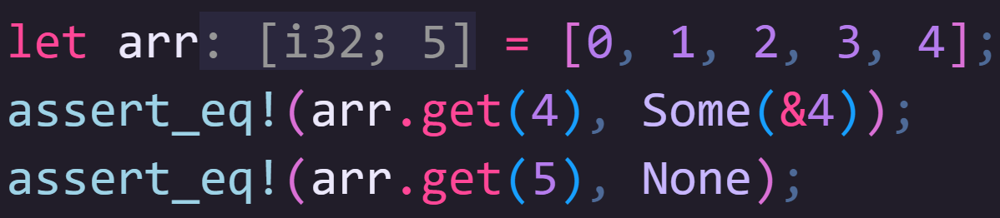
ü¶Ä If the array is mutable, you can get a mutable reference to an entry in the array using get_mut.

ü¶Ä Note the use of if-let to unwrap the Option we get back from get_mut
ü¶Ä Also because get and get_mut actually return references, to change the value, we have to dereference first
ü¶Ä Finally, you can pass arrays into functions, and if the types in the array are copy, the array itself is also copy meaning you won't lose ownership when you do this.
ü¶Ä Passing an array like this needs the type of the array to be defined including its size, so if the size is different, it won't work.


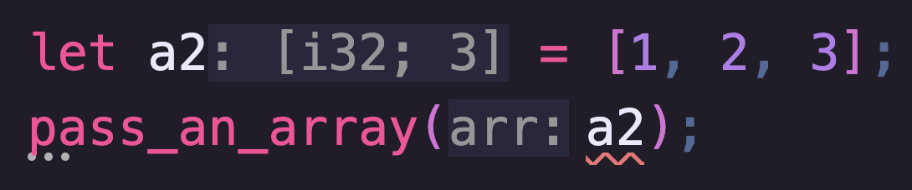
ü¶Ä If you want to pass an arbitrarily sized array into a function, you can... by using a slice.
Slices
Obviously, passing exactly sized arrays around isn't particularly useful in most real world circumstances.
So the first dynamically sized collection we should talk about is the "slice".
You can think of a slice as a view or window into a series of contiguous data.
The fact that it's a view of some other type hopefully indicates to you that this is a reference type
ü¶Ä The simplest way to get a slice is to reference an array or any other compatible collection.

You can also get a sub slice of an array by using range notation, which we've discussed before, but let's do a quick recap
This can include open ranges which are a bit more complicated.
The way to think about this is, where X..Y:
ü¶Ä if X and Y are both specified, the slice begins before the Xth element and ends before the Yth element
ü¶Ä if Y is preceded by an equals sign, the slice ends after the Yth element
ü¶Ä if X is not specified, the slice begins at the start of the collection being sliced
ü¶Ä if Y is not specified, the slice ends at the end of the collection being sliced

When using slices, you don't need to specify their size, that information is encoded into the data at runtime, meaning you can work with slices of arbitrary size.
Bear in mind though that they are references, so you may need to use lifetimes to keep track, if you need a reminder of lifetimes (and even those of us well versed in Rust often need a reminder), I covered them in the functions video, linky in the corner.
In that video we discussed a function for splitting a String which returned two "string slice references".
That's right, str is another, special, kind of slice.
ü¶Ä Here's that code again, and here's some things to note that will hopefully make a lot more sense after the last few chapters:

ü¶Ä String implements Deref targeting str so we can get a string slice just by referencing String
ü¶Ä The lifetime 'a (attached to yuki) enters split() through input and is tied to the return parameters left and right.
ü¶Ä The same range notation is used to create the slices as our previous examples
ü¶Ä In the "found_at" branch, open ranges are used to capture the beginning and end for left and right respectively
ü¶Ä In the "else" branch, the completely open range creates a slice the full length of the collection, while the slice that starts at input.len() is a zero length slice that starts before the element that would be after the final element and runs to the end.
ü¶Ä Hopefully code like this is starting to make a lot more sense!
Vectors
Vec (short for Vector) is similar to an array (and can be dereferenced as an array slice), but unlike array, Vec can grow in size.
Vec is a generic type (Vec<T>) with no trait bound, meaning you use to store any type.
There are several ways to instantiate Vecs, and which way is best can vary depending on how you're going to use them.
The fact that Vecs are dynamically sized means they need to exist on the Heap, and so when instantiating a Vec, your program, under the hood, will request an amount of heap memory.
If your vector exceeds the amount of memory that is currently available to it, code inside the Vec type will automatically request a new, larger, portion of heap memory from the operating system, copy the current data into that new location, then free the memory it used to hold, all automatically without you needing to do anything.
This process however is expensive, and you should do what you can to avoid it.
So, with that in mind, you should try to start with a vector large enough to contain as much as you think is reasonable, using the with_capacity constructor.
This will construct an empty Vec with at least (but possibly not exactly) the capacity you requested.
ü¶Ä Note that capacity and length are not the same thing in Rust.
ü¶Ä You can get the number of items of data currently in the vector with .len() and its capacity with .capacity().

ü¶Ä If you're not worried about the potential costs of resizing your vector, particularly if you're not going to resize it, and you already have some data that you want to instantiate, you should use the vec! macro as this can be optimised by the compiler.

ü¶Ä Usually you'll make Vectors mutable, and they provide a huge array (pun intended) of useful methods, but here are some of the basics.
ü¶Ä To add elements to the end of a vector we use the .push(t: T) method
ü¶Ä and to remove them from the end of the vector we use the .pop() method which returns an Option<T>, since the vector may be empty.
ü¶Ä Like arrays, you can index directly into a Vec but, just like arrays, you generally shouldn't.

ü¶Ä If you try to access an element out of bounds, your program will panic, an unlike sized arrays, there's not even any protection against hard coded out-of-bounds indices.
ü¶Ä Again, using .get() and .get_mut() will return an Option containing either an immutable or mutable reference to an item inside the vector.
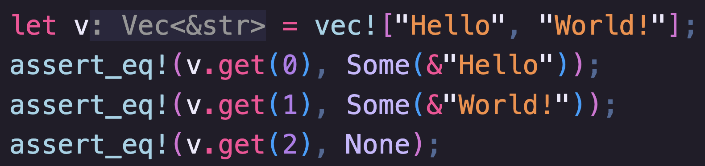
ü¶Ä This is much safer as the program will not halt if there is no item at the given index, you'll simply get a None.
ü¶Ä .get() and .get_mut() will also allow you to create an array slice if you give it a Range instead.

ü¶Ä Note the weird syntax as get returns an array slice, not an array
ü¶Ä You can even edit values inside the returned slice
ü¶Ä Be careful, this is actually element 2!
When you put a variable into a Vec, or any other collection, unless that variable is copy you are moving ownership into the collection.
Using methods like get will give you a reference to the data, but the only way to get ownership back is to either clone it (and take the potential memory and runtime hit), or to remove to use a method that removes the element from the collection, like pop in Vec.
We'll discuss similar methods for other collections as we go.
VecDequeue
VecDeque is very similar to Vec however, where in Vec you can only add and remove items to and from the end of the collection, VecDeque also allows you to add and remove items to and from the front!
ü¶Ä You can create a VecDeque in much the same way as a Vec, though there isn't a macro.

ü¶Ä Instead, here we'll use the From trait to take a static array and turn it into a VecDeque.
ü¶Ä We can then push elements onto the back of a VecDeque with push_back or on to the front with, you probably guessed it, push_front.
ü¶Ä Similarly, we can remove elements from the front of a VecDeque with pop_front, or from the back using pop_back.
Linked Lists
It is very rare to actually need a full LinkedList, and for performance reasons, you should try to avoid them where possible.
Vec and VecDeque will almost always beat LinkedList in both speed and memory efficiency if all you want to do is add items to the end of a list (or, in the case of VecDeque to the front).
Where LinkedLists are useful though, is when splitting and merging your collection is a core feature you will be heavily reliant on.
ü¶Ä To demonstrate this, lets create a simple example by pushing items on to the end of a linked list.

ü¶Ä I'm intentionally skipping over 2 here
ü¶Ä In order to add 2 in at the logical position we can split the linked list before the 2nd element using split_off(2)
ü¶Ä We can then append a new element onto the end of the left part of the list (in the original variable) and then re-append the right part of the list.
ü¶Ä You can't easily do this in other linear collections
BinaryHeap
BinaryHeaps allow you to add items to a heap in any order, but the first item off the heap is always the largest item according to its Ord.
ü¶Ä For example, lets add some chars to a BinaryHeap

ü¶Ä When we pop them off the heap, they come out from largest to smallest.
ü¶Ä The obvious limitation here though is, what do you do if you need to know the smallest value in the stack?
ü¶Ä In the standard library there's a cool little newtype that can wrap other types and inverts their ordering:
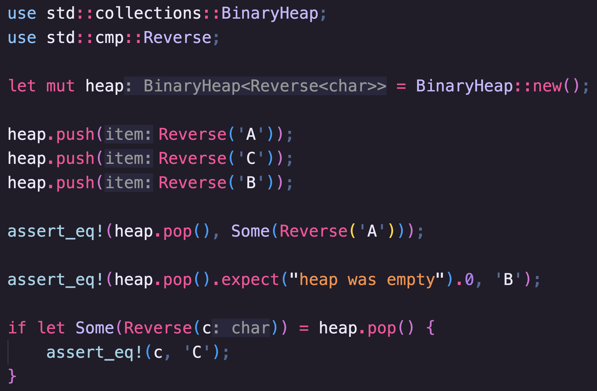
ü¶Ä The only slight downside is that the item will pop off the BinaryHeap still wrapped in the Reverse newtype
ü¶Ä Because the newtype is a tuple struct with a public field, you can access the data directly there
ü¶Ä Pattern matching will also allow you to extract the inner data
HashMap
A HashMap is a key, value lookup table.
You store a value with a key and use the same key to look up the value you previously stored.
The value can be any type but the type you use for the key must implement the Hash trait, see our last video.
Hashing the key results in a u64 that is used to create the lookup table.
There's more details on how hashing works in the official book, including how to create a HashMap with a different hashing algorithm, but that's beyond the scope of this series.
ü¶Ä Similar to Vecs, HashMaps can be initialised in a few ways, the main three you're likely to use are:

ü¶Ä "new" which creates a hashmap with arbitrary capacity
ü¶Ä "with_capacity" which, like with other collections, can help minimise re-allocation
ü¶Ä or you can create a hashmap from a collection of tuples representing key-value pairs
ü¶Ä To access data you've stored in your hashmap, there's a few handy methods:
ü¶Ä .get() and .get_mut() work the same as with other collections but take a key instead of an index.

ü¶Ä As with other collections, using get will return an Option making it very safe to use
ü¶Ä And get_mut will allow us to modify data via a mutable reference
ü¶Ä The .entry() method returns a special Entry enum that allows you to modify a value if it exists

ü¶Ä or insert a value if it doesn't
ü¶Ä Pretty handy right!
ü¶Ä The .remove method takes a value out of the HashMap (if it exists)

ü¶Ä This is really handy because inserting values into collections, moves ownership into them, and remove allows you to move ownership out again
ü¶Ä Similarly .remove_entry() can be used to gain ownership of both the value and the key as you remove them from the map

BTreeMap
BTreeMap is a Binary Search Tree version of HashMap.
Now, for storing arbitrary data it's a touch slower than HashMap, but it internally sorts keys so that you can easily get the values at the largest and smallest keys, a little bit like a VecDeque:
ü¶Ä Let's say we have BTreeMap with some keys and values.

ü¶Ä You can see I've intentionally got the keys out of order here
ü¶Ä We can get references to the first or last key/values according to the Ord of the key type
ü¶Ä We can also get Entry enums this way
ü¶Ä Finally we can pop both the key and value from either the front or back of the BTreeMap, much like a VecDeque, but sorted!
Sets
ü¶Ä There are two Set types in Rust that allow you to store values with no duplicates, HashSet and BTreeSet.
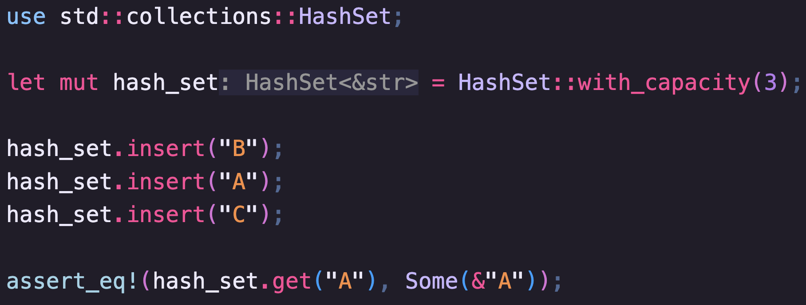

ü¶Ä These are implemented using HashMap<K, ()> and BTreeMap<K, ()>, though they "fix" some of the issues you might run in to if you were to naively do this yourself.
ü¶Ä For example, .insert(T) only takes a single value, and methods like .get(K) return an Option with only one value.
ü¶Ä The differences between HashSet and BTreeSet are the same as between HashMap and BTreeMap, including BTreeSet allowing easy access to the "first" and "last".
ü¶Ä Furthermore, when you turn BTreeSet into an Iterator, it will be in order!
ü¶Ä We'll talk more about Iterators
Next Time
Haha, silly transitions! Yeah, next time, Iterators.
So fun fact, Iterators are the last core synchronous language feature we'll discuss in this series.
Once you've got your head around them, you're going to be in a great place to build all kinds of apps.
After that we'll be covering threads, async, macro rules and unsafe rust.
Don't worry, though there's plenty of things I want to cover on this channel after we move on from IRISS.
In the meantime, I'd like to thank my Patreons, you're support means an incredible amount to me.
If you enjoyed the video, don't forget to like and subscribe.
And I'll see you...
Wait! Before you go I want to talk about a "mistake" in the HashMap section
I noticed this while writing the script but wanted to leave it in, and talk about it at the end of the video.
ü¶Ä When showing the code for get, did you spot this...
ü¶Ä See the hashmap key type is a String but I've accidentally used a string slice as the parameter in get.
ü¶Ä This code works though... how?
üìï Well, if we check the documentation, we can see that get does not take the same generic type as the Key, K, but a different generic Q

üìï Q is any type that K implements Borrow for (and is Hash, Eq and may or may not be sized), which feels very backwards but makes sense.
üìï String, our key type, implements Borrow string slice, so we can use string slices in the get method.
üìï Using the actual Key type, K, or String in this case, will always work too because all types implement Borrow for themselves
Ok, thanks for putting up with another one of my little digressions.
Now I'll see you next time.
Iterators
I've been foreshadowing it for a while, but today we finally cover Iterators!
Iterators are a way to produce, and perform operations on, a sequence of values.
We often use them with collections (which we covered in our last video) so that we can perform the same operation on each item in a collection, or reduce a collection to a single value.
They're also often used implicitly in some forms of loop.
As ever, this series is accompanied by a free book, check the description for a link straight to this chapter.
My name is Daniel, welcome to iris.
The Iterator Trait
The Iterator trait can be applied to any type and has a single required method:

üìï .next() returns an Option telling the caller there either is another item (Some), or there isn't (None).
üìï Iterator also has 75 provided methods, which I think goes to show how incredibly versatile this trait is.
üìï We'll be talking about some of these methods, but it's well worth checking out the documentation to see what else is possible.
While you'll usually get iterators from things like collections, it's possible to "Iterate" through anything.
To show the power of Iterators, we're going to start by building an Iterator from scratch, one that produces the Fibonacci sequence.
The Fibonacci sequence is a sequence of numbers where each number is the sum of the previous two.
Depending on whom you ask, the sequence either starts, 1, 2, 1, 1, or 0, 1.
Purists will say it's the former (as "Leonardo Bonacci" intended), software engineers usually use the latter... I'm sticking mine in the middle, but it really doesn't matter.
ü¶Ä Anyway, let's start by making a Struct to store the state of the Iterator.
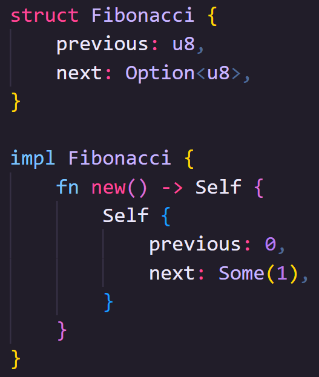
ü¶Ä We'll need to know the previous number and the next number, and to keep it simple we'll use a u8 so we'll only get
numbers between zero and two-five-five.
ü¶Ä I've chosen to make next an option for reasons you'll see in a moment
ü¶Ä Let's make a constructor so that the Iterator always starts in a valid state.
ü¶Ä Moving on to implementing Iterator itself.

ü¶Ä The trait has an associated type Item that describes the type returned by each call of .next() on the iterator.
ü¶Ä It's an associated type rather than a generic type as it needs to be referenced a lot but, it's type is dictated by the process used to create the Iterator, so it isn't generic.
ü¶Ä To implement the next method, we'll temporarily store the current value of the value next.
ü¶Ä Because self.next is an Option, and the next method returns an Option, we can use the question mark operator
to either unwrap a Some variant, or immediate return a None variant depending on what's in there.
ü¶Ä If there is a None at this point, then we've reached the end of our sequence.
ü¶Ä Next we'll update our internal state, our new next is the current value plus the previous, and our previous becomes the old current.
ü¶Ä By using checked_add here we get an Option that is None if the result is out of bounds.
ü¶Ä Finally, we return the stored "current" value, though we'll have to re-wrap it in an Option after unwrapping it earlier.
ü¶Ä So now we have our iterator type!

ü¶Ä We can now get each item off the iterator one at a time by calling the next function:
ü¶Ä You can see that each item in the sequence is wrapped in an Option.
ü¶Ä When an Iterator has no more items to provide, it will produce a None.
ü¶Ä The final number this Iterator will produce is 233, after which we would overflow the u8 we've used.
ü¶Ä Just calling .next() is pretty boring, no one wants to iterate through things by hand.
ü¶Ä What if we want to print out all the Fibonacci values that fit inside a u8?

ü¶Ä You can give an Iterator to a for ... in ... loop, and it will automatically unwrap the Option for you.
ü¶Ä This code will print out each number on a new line
ü¶Ä Once the loop hits a None the loop ends.
That's cool, but on its own, it's still not very interesting.
Iterators are designed to be chained.
Those 75 provided methods I mentioned earlier allow you to do some exceptional tricks.
ü¶Ä For example, a list of Fibonacci numbers might be more useful if we knew what number in the sequence we're on.

ü¶Ä We can chain a method called .enumerate which will take the old iterator and give us a new one where each next now
returns a tuple of (usize, T) where the T is the original item and the usize is the position.
ü¶Ä What's brilliant about this though is that when I say it "takes the old iterator", it doesn't try to process every item in the iterator (a process in Rust we refer to as "consuming" the iterator), it merely takes ownership of it.
ü¶Ä When we call .next() on the iterator returned by .enumerate(), it calls next on the iterator being enumerated.
Rust iterators are "lazy" meaning that they try to avoid doing any unnecessary work.
Getting Iterators
Having built our own, hopefully you now have a vague understanding of how Iterators work, but usually you'll get an Iterator from a collection.
As with most things in Rust, Iterators (or specifically, the items being iterated) can be thought of in three groups.
All the collections we discussed in the last video can give you an iterator in any of the following forms.
Firstly, referenced data
Often we don't need to own the data we're iterating over, it can be enough to just read it.
All built in collections have a method called .iter() which returns an Iterator type where the items are references to
the data held in the collection.
ü¶Ä Here we have two variables that own the Strings inside them.
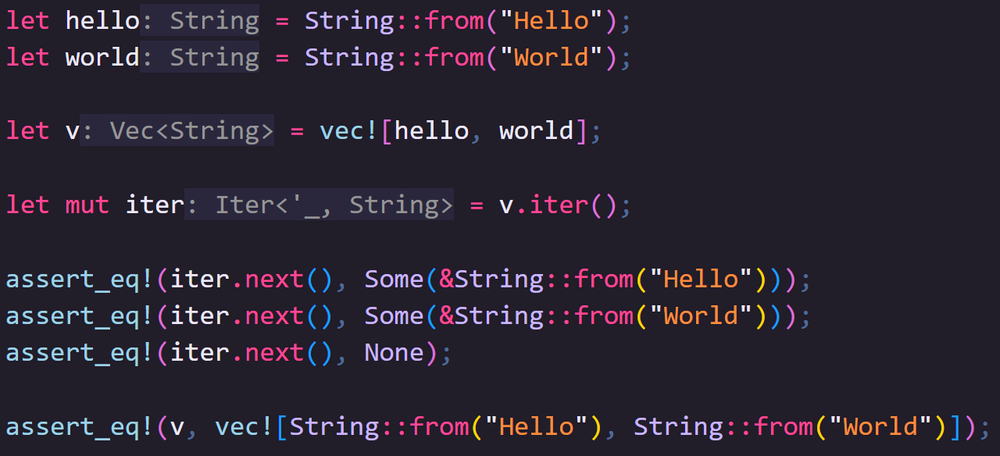
ü¶Ä We move ownership of the variables inside the Vector
ü¶Ä And then we create an Iterator with the Iter method which will iterate over references that point to the data now owned by the vector
ü¶Ä So calling .next() on the iterator gives us a reference, not the original data.
ü¶Ä This means the vector still owns the data
ü¶Ä One thing to bear in mind is that if the collection contains references, then .iter() will give you an Iterator that
produces references to references.

ü¶Ä So if we change the original vector to reference the Strings rather than take ownership
ü¶Ä When we call .next() we get a reference to a reference
Sometimes, you need to edit things while iterating through them; our second option lets us do that.
.iter_mut() can give you a mutable iterator, and all of Rust's built-in collections support it (so long as the
underlying collection is mutable).
ü¶Ä In this example, we'll use a Vector of numbers, as I mentioned, we need this Vector to be mutable.

ü¶Ä We'll use a for ... in ... loop like earlier, using .iter_mut().
ü¶Ä So here, n, is a mutable reference to the value stored in the vector.
ü¶Ä By dereferencing n, we can add 10 to the original value.
ü¶Ä If we check the original Vector now, we can see all values have increased by 10.
Finally, you may want to take ownership of the underlying data, and that's where our third option comes in.
.into_iter() takes ownership of the collection and the data inside (meaning that the collection will no longer be available).
One place this is particularly useful is when converting between types, either converting the items themselves or for the entire collection.
There is a trait called FromIterator<A> that is implemented for types that can consume an iterator and populate themselves.
This is almost always used with the .collect() iterator method, though you need to be explicit about what you're collecting into.
You can do this either by typing the variable you're collecting into, or by using the turbofish operator that allows you to be explicit about the concrete types to fill in generics.
ü¶Ä In this example, we'll go back to our Strings as they aren't Copy.
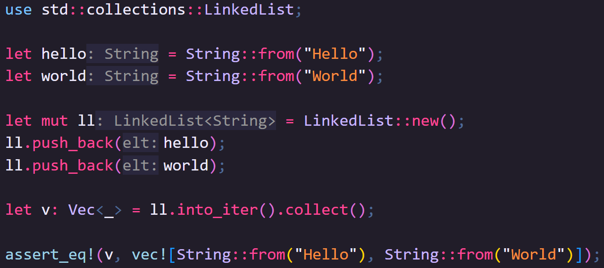
ü¶Ä Instead of using a Vector this time, we'll use a LinkedList, and push our strings onto the end.
ü¶Ä This moves ownership from the variables into the LinkedList.
ü¶Ä To turn the LinkedList into a Vector, we'll first convert the LinkedList into an Iterator that owns the original data with .into_iter().
ü¶Ä Then we'll "collect" that Iterator into a Vector.
ü¶Ä Because v is explicitly typed, Rust knows to use the FromIterator implementation of Vector when calling .collect().
Honestly, even after years of using Rust, this backwards way of writing code that makes it super modular still makes me think: "wow"
ü¶Ä In this example, we've created a variable basically just to provide type information.

ü¶Ä You can skip this step using the turbofish operator which looks like this.
Copying and cloning Items
Using what we've learned above, what if we want to use owned data, but we need to keep the original collection, so .into_iter() is out of the question?
There are two methods on Iterator for this purpose: .copied() and .cloned().
Each one takes the old iterator and returns a new iterator that applies the appropriate action lazily as its called.
.copied() only works on Iterators where the item is Copy and will take the iterator and return a new iterator which returns each Item copied.

.cloned() does the same for types that are Clone.
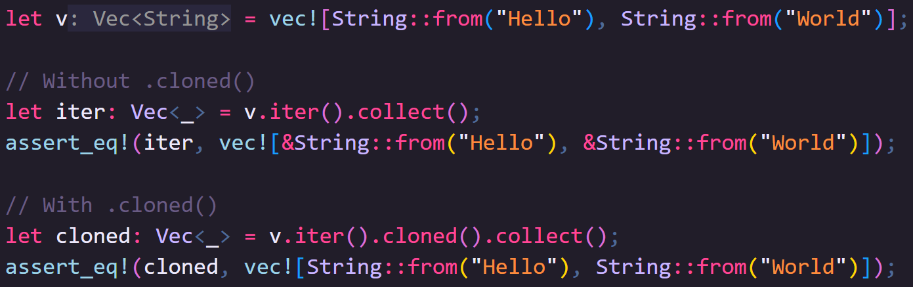
Other Ways to get Iterators
Beyond collections, there are other things that can be iterated through.
ü¶Ä Ranges are iterators, it's why you often see them used in for loops:
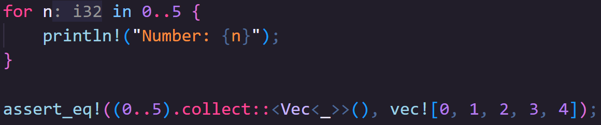
ü¶Ä But they implement all the same methods so we can collect them like any other iterator.
ü¶Ä You can make an infinitely repeating iterator of anything so long as it implements Clone, using std::iter::repeat.

ü¶Ä Now, because immutable references implement Clone we could use this function to repeat a reference to string slice like "hi".
// FIXME
ü¶Ä Um, I said "hi".
ü¶Ä Wait!
ü¶Ä It literally never ends, every time you call .next() it just clones a new value
ü¶Ä Ok enough of that.
ü¶Ä We can also repeat existing iterators infinitely using a method on the iterator called .cycle()

ü¶Ä Once the iterator has run out of items, instead of returning a None, it simply starts again.
You can also create iterators by combining other iterators with .chain(), although they have to be of the same type:

Many other Types in Rust can also be broken down into Iterators.
The script for this video, for example, can be represented as one large str, which you can break the data down by .lines(), .chars() or .bytes() all of which produce iterators.
Cool ways to use Iterators
Mathematics
One common thing we might want to do is consume an iterator of numeric values and get some new value from it.
A quick warning though!
Unlike some other operations we might perform on iterators which add some step that will be performed when we call .next, methods that "consume" the Iterator will actually try to process everything in the Iterator.
This means if you call them on an infinite iterator, like those created by .repeat() or .cycle(), your code will enter an infinite loop and never end.
However, when that's not the case there's some useful mechanisms we can use:
ü¶Ä For iterators of items that implement the Sum trait (for example numbers) the .sum() method will add all the items in the iterator together:

ü¶Ä You'll notice we have the turbofish operator again as we need to know what type to sum to
ü¶Ä For iterators of items that implement the Product trait (eg, again, numbers) the .product() method will multiply all the items in the iterator together:

ü¶Ä Its worth noting that some surprising things implement Sum and Product, including blanket implementations for Option<T> and Result<T, E> where T already implements the trait.

ü¶Ä When doing it this way, for some reason, the Option needs to be owned, so here we've .into_iter()'d the collection, as we don't need to use the collection afterward.
ü¶Ä Or, if we do need to keep the collection, because i32 is Copy, we could chain .iter() with .copied()

ü¶Ä I want to add another quick warning here, .sum() and .product() use the basic add and multiply operators respectively.
ü¶Ä This can be problematic because there's no check to see if the result still fits inside the numeric type.
ü¶Ä For example, this is fine

// FIXME
ü¶Ä But this will panic

ü¶Ä But you won't know that until runtime.
ü¶Ä Usually this won't be a problem as you'll likely be using number types with a lot of space, not u8s, but we'll touch on slower (but safer) ways to get around this later.
ü¶Ä Anyway, carrying on:
ü¶Ä For iterators of items that implement Ord you can use .min() and .max() to find the smallest and largest values respectively.
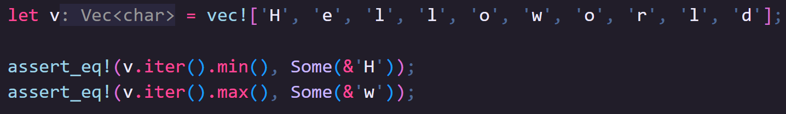
ü¶Ä Chars are ordered by their numeric value so capitals come first, making "H" the smallest value and "w" the "largest" value
ü¶Ä If you just want to know how many items there are, you can use .count() which merely tells us how many items are in an iterator.

ü¶Ä However, count consumes iterator, meaning you can't use the iterator after using count
ü¶Ä If the iterator implements ExactSizeIterator though, and many iterators do, then you can use .len() instead.

ü¶Ä Not only does this not consume the iterator, it's almost always faster to get the same result:
Applying a Process over each item
One of the most common uses for Iterators is to process a set of Items one at a time.
There are a number of methods on the Iterator trait (that themselves return new Iterators) that are really helpful for this.
In fact, it's common to chain multiple iterators together in this way.
Let's start with one of the simplest.
You can take an iterator and exclude Items based on the result of a predicate using .filter().
ü¶Ä For example, we could take a range of numbers, and filter out all odd numbers like this:

ü¶Ä If we were to look at the count of the iterators before and after the filter, you'll see they've changed!
ü¶Ä Now, I was going to point out that ideally we should use .len() but that .filter() can not return an ExactSizeIterator.

ü¶Ä But, to my surprise, ExactSizeIterator isn't implemented for RangeInclusive either... but it is for Range.
ü¶Ä So, here's a quick edit to the code that does the same thing.
ü¶Ä Now we can use .len() on the range, much better
ü¶Ä I don't know why RangeInclusive isn't ExactSizeIterator, if you do, let me know in the comments, but I think it's a sign to prefer Range over RangeInclusive.
ü¶Ä Anyway, for the obvious reasons we don't know if an Item is included or not before an item is processed by the filter, so we don't get an ExactSizeIterator back from the .filter() method, so we have to count each item.
Another great way to process Iterators one Item at a time is to take that Item and transform it in some way.
We can pass a function into the .map() method that receives the item and returns a new value.
If that value is of a different type, the Iterator you get back will also be of that new type:
ü¶Ä If we start off with a Range like this, this is an Iterator where the Item is of type i32.

ü¶Ä We can then use .map() to take the number and return the result of the format macro.
ü¶Ä And now we have an Iterator where the Item is of type String.
ü¶Ä Sometimes the process you apply to an item might itself result in an Option, and rather than having an iterator of Options you may want to discard Nones and unwrap Oks, this is where .filter_map() is really handy.

ü¶Ä This range gives us every valid u8 number in sequence from smallest, zero, to largest, two-five-five
ü¶Ä (Despite what we just discussed this time it has to be RangeInclusive).
ü¶Ä If we add 250 to each number, most of them will no longer fit inside a u8.
ü¶Ä The .checked_add() method found on most numeric types in Rust will return an Option, where the None variant represents an overflow.
ü¶Ä If we combine this with a .filter_map() all numbers that overflow will automatically be excluded (because of the None) and all numbers in the Some variant are automatically unwrapped
ü¶Ä That leaves us with these six numbers.
ü¶Ä This not only saves us from having to deal with doubly wrapped options from next (for example Some(Some(255))) but entirely removes the items from the iterator meaning anything else we chain doesn't have to deal with it either.
ü¶Ä By comparison, if we just used a map, we'd have 256 Options, 250 of which are None.

ü¶Ä Another way to reduce how many items we want to deal with in an iterator is by using .take(n) and .skip(n).

ü¶Ä We can end an iterator earlier by only taking a certain number of items from it with .take(n)
ü¶Ä Or we can skip over a number of items with .skip(n) before resuming the iterator from that point.
ü¶Ä .take() can be particularly useful when working with infinite iterators

ü¶Ä I want you to consider the output of the following program.
ü¶Ä Consider it!
ü¶Ä cough cough
ü¶Ä An Iterator method we used earlier, .enumerate(), allows us to add an index to our Iterator by changing the type of the Item T to a tuple of (usize, T).
ü¶Ä This can be really handy in combination with other iterators when the position in an iterator is important.
ü¶Ä Let's say we want to filter every other item out of a Vec.

ü¶Ä We can do that by chaining together several of the Iterators we've just learned.
ü¶Ä We'll take ownership of the data because we don't need the original Vector after this.
ü¶Ä We'll enumerate the iterator so we get the index from the point we're at in the iterator onwards (here we're at the start, but that might not always be the case)
ü¶Ä The index starts at zero, so by checking the modulo of the index, we can take every other item starting with the first.
ü¶Ä Filter doesn't change the data only decides if it should be kept or not, this means we can ignore the original data inside the predicate
ü¶Ä Since we no longer need the index after this, we can map the tuple and return just the data we care about
ü¶Ä Finally, we'll collect it and test the result
ü¶Ä Any time you see a filter and a map next to each other though, you might be able to abbreviate your code with filter_map.
ü¶Ä Booleans can be turned into Options with .then_some(), so this works, but...
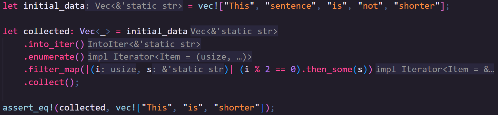
ü¶Ä in my opinion, you should always go with the code that's easiest to read, and its up to you to decide what that is
Finally, there are three more consuming methods I want to cover for processing data
.fold() and .reduce() consume iterators and return a single value by modifying that value for each item in the Iterator.
.fold() lets you specify the initial value for the returned value, but .reduce() uses the first item in the iterator as the initial value and continues processing from the next item.
Earlier I mentioned some risk with .sum() and .product() and promised a slower but safer way to do the same thing.
ü¶Ä So let's try doing that with .fold()

ü¶Ä it takes two parameters, the first being the initial value, and the second being a closure with two parameters
ü¶Ä We'll use an Option with a 0 for the initial value, which is why we can't use .reduce() in this specific case.
ü¶Ä For the closure, I usually stick to calling the parameters acc and cur representing the "acc-umulated" value which starts as our initial value, and the "cur-rent" value, which is the current Item in the iterator.
ü¶Ä This closure is called for every Item in the iterator and returns the next accumulated value.
ü¶Ä We're simply going to add the values together, our accumulated value is an Option, and we only need to add if it's a Some variant
ü¶Ä We can use .and_then() to get inside the Option, and we'll use the same checked_add to increase the value
ü¶Ä This maps our Option to another Option that comes out of checked_add so we don't need to do anything else before returning from the closure
ü¶Ä That said, there's actually a better way to provide this functionality.
ü¶Ä The way we've built this, once we hit our first None, we know the answer is going to be None too, yet we keep processes items
ü¶Ä There's a method designed exactly for this, .try_fold()

ü¶Ä Not only will stop iterating on it's first None, potentially ending very early, but because it knows we're dealing with Options will automatically unwrap our accumulated option for us, making the code much simpler!
ü¶Ä The last consumer method I wanted to talk about is .for_each().
ü¶Ä It lets you do something with each item in the iterator without returning anything.
ü¶Ä The simplest example might be, if we went back to our Fibonacci sequence instead of printing the value in a loop, we can use .for_each() to print the value.
ü¶Ä The lack of return value might feel like it rather limits the usefulness of this method.
ü¶Ä However, it can be useful when doing things like sending data somewhere else, for example, across threads, which we'll be looking at in the next video.
More Iterator Traits
There are a few more traits you may want to be aware of when making your own iterators, or consuming others.
IntoIterator can be implemented on any type that can be turned into. an... Iterator.
Ah, I see what they did there.
One place you may find yourself using it is on newtypes, or types where the most important data inside is represented as some kind of collection.
ü¶Ä Let's say we have a newtype "Albums", that contains a Vector of "Album"

ü¶Ä In our domain logic, it might make sense that we can start a new collection of Albums and add an Album to it by buying it.
ü¶Ä So we can build an Albums struct like this
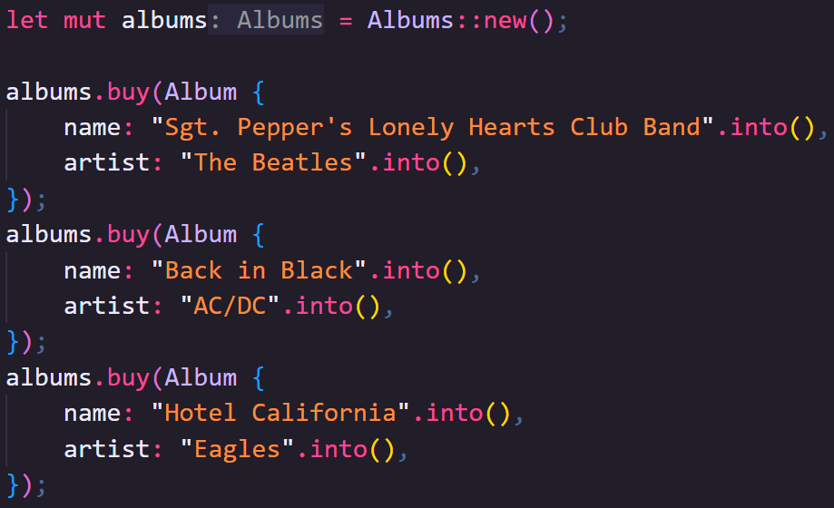
ü¶Ä If we were to implement IntoIterator for Albums there are two important associated types that we need to specify.

ü¶Ä Item is easy, that'll be our Album type.
ü¶Ä IntoIter is the name of the type that is the Iterator.
ü¶Ä Remember back at the start, we created a Fibonacci Iterator.
ü¶Ä Our struct Fibonacci is the Iterator type.
ü¶Ä What the trait is actually asking us for here is the data type that will manage the iteration process for us.
ü¶Ä We're using a Vec internally, and Vec has a generic Iterator struct it uses when you turn a Vec into an Iterator, so we can use that, filling in the Generic part with our Item type.
ü¶Ä All we need to do in our case then, is return the result of calling Vec .into_iter()
ü¶Ä Once we've done that, turning our Albums type into an Iterator of Album is trivial.
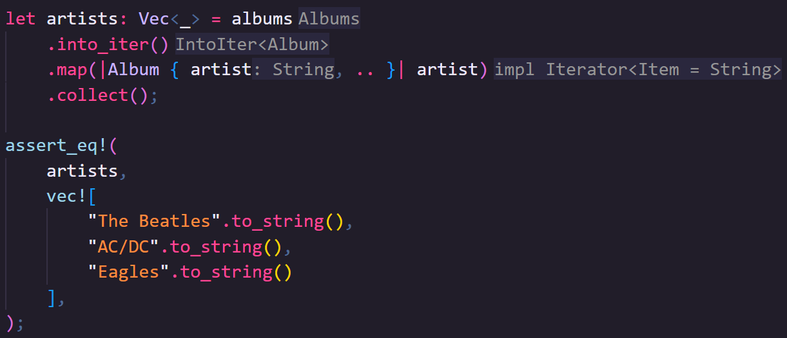
ü¶Ä This code turns our Albums collection into a list of Artists
ü¶Ä But what if we want to go back to having our Albums type again.
ü¶Ä FromIterator allows you to turn an Iterator into another type, usually through the .collect() method on an Iterator
ü¶Ä In our case, again, we could really just lean into the existing Vec type's utilities,

ü¶Ä But you could also rely on the structs own implementation to do the same thing by looping through the iterator.

ü¶Ä Now we can create our Albums struct from any Iterator of Album

Finally, the last two traits you should be aware of are DoubleEndedIterator and ExactSizeIterator.
We could implement these for our Album type, but we'd really just be wrapping Vec, so I'll give some more direct examples.
ü¶Ä We've spoken about ExactSizeIterator, it can tell you the size of the iterator without consuming it, using the .len() method

ü¶Ä DoubleEndedIterator allows you to reverse the order of an Iterator with .rev().
ü¶Ä The Iterators returned from all collections in the standard library are all, both of these
ü¶Ä To my surprise, even the Iter structs used for LinkedList and BinaryHeap are both DoubleEndedIterator, I didn't expect that.

Next Time
First, I want to say a huge thank-you to my Patreons, your support for the channel so early on really helps!
And if you enjoyed the video, don't forget to like and subscribe, you'd be surprised how much of a positive impact that has for creators!
We've now covered all of what I'd describe as the core, synchronous language features (at least... I hope, let me know if you think I've missed something crucial).
We're moving on to Threads in the next video, we'll discuss what they are, why you'd use them, and some of the most important and useful tools to use when working with them.
With that, I'll see you next time.
Threads
Threads allow us to build programs where parts of the program can run independently of one another.
Threads can (big emphasis on "can") help you make faster and more responsive programs.
For example:
- As a web developer, I would like the server framework I'm using to start responding to the next request before it's finished responding to the previous request
- As a game developer, I would like my game engine to capture player inputs without being blocked by the renderer
- As a data engineer, I would like to process large sets of data with parallelism
This series is accompanied by a free book, check the description for a link straight to this chapter.
My name is Daniel, welcome to IRISS.
Intro
We're going to step through:
- how we can run code in a thread, including sending data before it starts
- how we can wait for a thread to end, including receiving data when it ends
- how we can communicate with running threads
- and how we can share state between threads
We'll also be touching again on our marker traits Send and Sync
What is a thread?
Before we get into the Rust, it's worth discussing what a thread actually is.
When you run a program, that specific instance of the program is called a Process.
The process incorporates not just the instructions to be run but is an abstraction around various resources that the program has access to, such as memory.
You can run multiple processes which the operating system will schedule separately which could allow you to do more things at once, however, those processes won't (or at least, shouldn't) have access to the same memory.
There are ways to communicate between processes, but they can be slower and more restrictive than if we could share memory.
The specific part of the Process responsible for executing your code is called a thread, and a single process will always have at least one thread but can have many.
Threads are scheduled by the operating system independently, allowing one process to do multiple things effectively concurrently.
Starting a thread
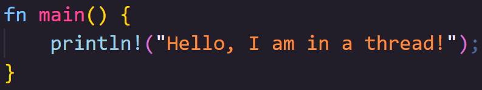
ü¶Äüë®üèª Your program always has at least one thread, even your basic hello-world program runs in a thread.
ü¶Äüë®üèª What we're interested in today is how we start more threads.
ü¶Äüë®üèª This is a process called Spawning.

ü¶Äüë®üèª To spawn a thread, we use std::thread::spawn... but, this will do little on its own.
ü¶Äüë®üèª If we run this code, can you see what's missing in the output?

ü¶Äüë®üèª It looks like our thread didn't run... but actually, its even worse than that.
ü¶Äüë®üèª When writing this portion of the book, this is the output I consistently got from my Mac, and from Rust Playground.
ü¶Äüë®üèª That consistency actually surprised me a little, but then when writing the script for this video on my Windows machine...

ü¶Äüë®üèª I got this.
ü¶Äüë®üèª This is the inconsistency I was actually expecting, its not that our thread doesn't run, it's that it might... or it might not.
ü¶Äüë®üèª Spawning a thread returns a JoinHandle.
ü¶Äüë®üèª The JoinHandle is what ties the spawned thread to the thread that spawned it.
ü¶Äüë®üèª When the JoinHandle is dropped, which in this case happens instantly, the thread is orphaned.
ü¶Äüë®üèª It may still run but, in this case, the process ends at the end of main, so whether the child thread runs or not, is no longer up to us.

ü¶Äüë®üèª We can tell our main thread to pause and wait for a running thread to end by calling join on the JoinHandle.

ü¶Äüë®üèª We've been using closures, but functions work just as well and can be better for more complex programs.

üìï The only restrictions are:
üìï - the function needs to be "FnOnce returning T, Send and static"
üìï - and T also needs to be "Send and static"
Exactly when threads are allowed to execute code is controlled by a scheduler which we can't directly manage ourselves, but we can influence it.
Putting one thread to sleep can allow another thread to run.

ü¶Ä If we run this code as-is, you'll see the main thread runs to completion before the child thread starts

ü¶Ä If we put each thread to sleep after it writes to standard out, we can "encourage" the scheduler to start work on the other thread if it isn't already.
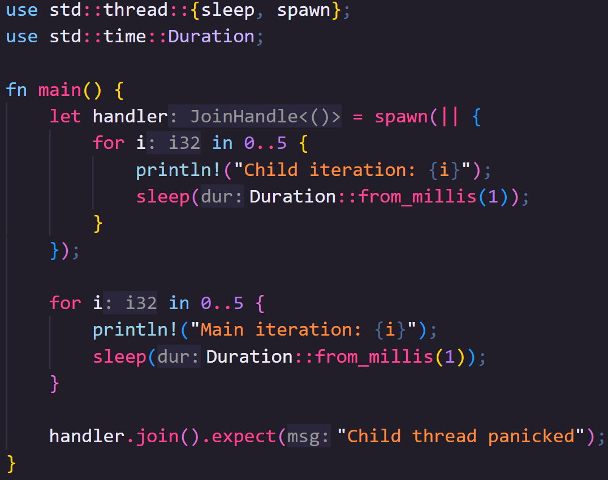

ü¶Äüë®üèª There's two very important things I want you to note here though
ü¶Äüë®üèª Firstly, thread::sleep is not a timer, your thread may sleep for longer than you requested or not at all in certain situations.
ü¶Äüë®üèª Secondly, the scheduler ultimately decides when code is run, so there's no guarantee you will get this exact output, so bare that in mind if when code runs matters to you.
So now we can run threads, let's start looking at how to send data back and forth between them.
We can pass data into a thread before it starts so long as the data is Send.
We previously talked about this trait in the Traits video, but to recap, data is Send so long as it can be safely sent between threads.
This trait is automatically implemented for all types that can be Send (though it is also possible to opt out of it).


ü¶Äüë®üèª We can move data into the closure that will be sent to the thread using the move keyword.
ü¶Äüë®üèª Here we move the entire data vector into the spawned thread.

ü¶Äüë®üèª You can also return data via the join handler.
ü¶Äüë®üèª This means you could pass hard work to a thread and do other work, coming back to check on the thread at a later time.
ü¶Äüë®üèª A little side note, if it's helpful, you can check if the thread is finished with .is_finished().
ü¶Äüë®üèª Here I'm using it to let the person running the program know we're still waiting on the thread to do its work, but the program is still running.
Sending messages
Now we can start one thread, there's no stopping us!
Modern schedulers can manage a lot of threads at once, however, so far, we can only send data between a child thread and the parent that started it before and after that thread runs, not during.
What if we want to communicate across multiple threads, or send data to a thread while its running?

üìï Multi-producer, single-consumer (MPSC) is a queue pattern that allows us to create channels with multiple Senders that can send messages, and a single Reciever that can receive them.
üìï As per the name, Multi-producer, you can clone Senders but each of those clones can only send to a single Reciever.
The Sender and Receiver types are Send meaning that you can create them in one thread and send them to another.
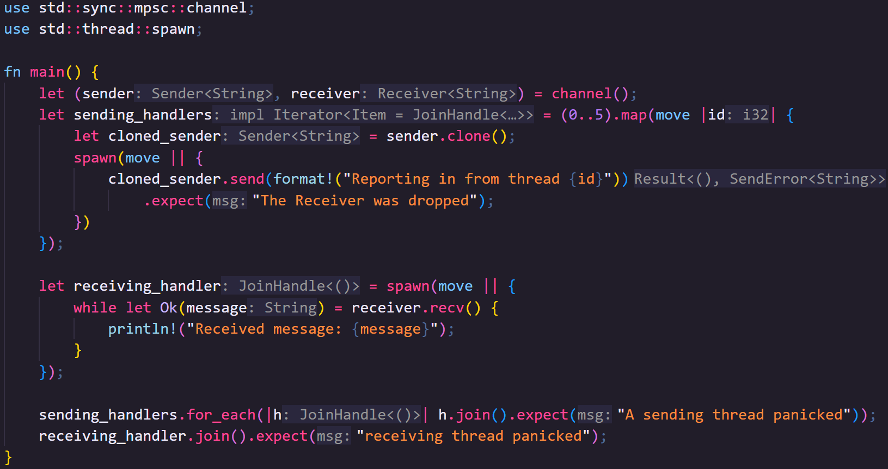
ü¶Äüë®üèª Let's create a bunch of threads and give each of them a Sender that points back to a single Reciever
ü¶Äüë®üèª We move the sender into the closure being run in the map method of an iterator.
ü¶Äüë®üèª Because the closure now owns it, we can clone it for each thread we're spawning
ü¶Äüë®üèª And move the cloned sender to the child thread.
ü¶Äüë®üèª We'll send the Reciever to a final thread that will collect the data from the other threads.
ü¶Äüë®üèª Finally, we'll join all the threads with a sender, before we join the thread with the receiver.
ü¶Äüë®üèª This is important because this is the first bit of code we've produced that can cause a deadlock, where two or more threads get blocked by each other
ü¶Äüë®üèª If you forget to join the senders first, they won't send their messages but will block the receiver thread here, so your program gets stuck.
For what its worth, there's no built-in way to create a channel with multiple receivers (Receiver is not Clone), however, there's nothing stopping you building your own type for that, or there are crates that support it like Crossbeam.
Sharing State
So now we can send messages across threads, but what if we need multiple threads to have access to the same data, maybe even able to edit that data.
To do this, we need to use types that implement the Sync trait.
Something is Send if it can be sent between threads, but doing this moves ownership from one thread to another.
Something is Sync if a reference to it can be sent between threads
i.e. T is Sync if a reference T is Send.
Most things are Sync, but we still have to abide the rules of references in that we can have as many immutable references to something as we like, but we can only have one mutable reference.
Furthermore, references cannot outlive the data they reference... which is a little harder to confirm with threads.
How do you know the thread referencing your data doesn't exist for longer than the data it's referenced?
One option is using scoped threads which we can create with std::thread::scope.

ü¶Äüë®üèª The scope function takes a closure with a single parameter that gives us the scope context.
ü¶Äüë®üèª We can use the scope context to spawn threads.
ü¶Äüë®üèª We don't need to keep track of JoinHandles this time, all scoped threads are joined at the end of the scope closure.
ü¶Äüë®üèª However, the spawn method on the scope context does still return a JoinHandle if you want to handle potential thread panics.
ü¶Äüë®üèª The scope function blocks the thread that called it, until all the threads it started have been joined, so after that we're safe to modify the data again, which here would require a mutable reference.
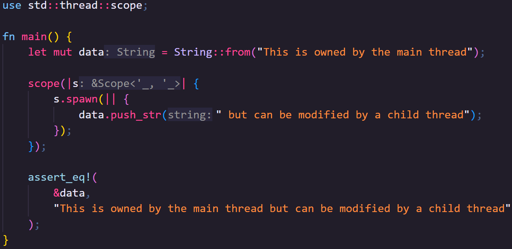
ü¶Äüë®üèª You can also send mutable references across threads like this, but, bear in mind, only one thread can access the mutable reference, and it must end before we can access our data again.
use std::thread::scope; fn main() { let mut data = String::from("This is owned by the main thread"); scope(|s| { s.spawn(|| { data.push_str(" but can be modified by a child thread"); }); }); assert_eq!( &data, "This is owned by the main thread but can be modified by a child thread" ); }
So we can share readable data across multiple threads with immutable references, or share writable data temporarily with a single thread, but what if we want to share read/write access to data across multiple threads.
Let's start by thinking why we can't do this with just references.
When we're using threads, multiple parts of our program can be executed at the same time.
Imagine we have two threads that want to change the data, behind a reference, based on what is currently stored there, something simple like each thread wants to multiply a numeric value.
- Thread 1 reads the value from memory into a register
- Thread 2 reads the value from memory into a register
- Thread 1 multiplies the data and stores it back in memory
- Thread 2 multiplies the data and stores it back in memory
In this situation, we've lost the effect of Thread 1, which could be a bug.
Let's consider a more serious version of this.
Imagine the data rather than just being a single value, is an image stored in an array like structure, and you're applying multiple processes to the image at the same time.
This time, if one thread were to override another's work, we have a much more obvious problem.
To get around this, we need to prevent two threads accessing the same piece of data at the same time.
There is a general software abstraction concept called a "mutex" that makes access to data MUTually EXclusive.
Rust provides it's mutex through std::sync::Mutex.
Once you place data inside a Mutex, to access it again, you need to "lock" the Mutex.

ü¶Äüë®üèª If the Mutex is already locked, then the thread currently trying to access the data needs to wait for the existing lock to be released.
ü¶Äüë®üèª the lock method on a Mutex returns a MutexGuard
ü¶Äüë®üèª When the MutexGuard goes out of scope, the lock is dropped, allowing other threads to use the Mutex
ü¶Äüë®üèª If a thread panics while holding a MutexGuard, this poisons the Mutex, so locking a Mutex returns a result.
However, there's still a slight problem here.
We're currently very dependent on using scoped threads because we need our references to point back to the owned data, but scoped threads aren't the norm.
In fact, most of the time you use threads in Rust, they will probably be abstracted behind some other framework (for example, a web server, a game engine, or data processing tools).
The problem, of course, is that we don't know when the owned data will go out of scope and no longer be accessible.
We can solve this problem using an Atomic Reference Count.
We haven't discussed reference counting yet as it's usually fairly niche, however, reference counting allows you to share data around an application without needing to clone it and side stepping complex reference rules or lifetimes.
It works by moving the data you want to share onto the heap, and allowing access through a reference count type.
When you clone the reference count value, instead of the data being cloned, it modifies its internal count of how many clones currently exist.
Every time a reference count type goes out of scope, the count is decreased.
Once the count hits zero, there are no further references to the data and so it can be safely dropped.
Now, if you've paid attention as to why we need a Mutex for modifying data across threads, you'll see that using a normal reference count won't work.
If the reference counter is cloned or dropped while also being cloned or dropped in another thread, you could end up with an inconsistent count of references, meaning data gets dropped at the wrong time.
This is why we need a special reference count type, std::sync::Arc, an Atomic Reference Count.
Atomic data types guarantee atomic changes.
Atomic changes are guaranteed to appear to be instantaneous to all external observers, meaning that two threads can change the value, but that these changes cannot overlap.
Arc is a little slower than Rusts built in basic reference counting type std::rc::Rc, but prevents corruption across threads.
Editors note: I don't think I've ever used
Rc, but I useArcall the time, so don't worry that we didn't cover it in this series.If you need to pass data around a single thread, wrapped in its own container, it's there for you to use

ü¶Äüë®üèª So, armed with this knowledge, we can go back to unscoped threads!
ü¶Äüë®üèª Like earlier, we can clone the arc in the map method of the iterator, and move the cloned value to the thread.
ü¶Äüë®üèª Arc also implements Deref for its internal type, so we can call lock on the Mutex from the Arc.
And that's it!
Hopefully threads feel a lot more accessible now, but let me know in the comments if you have any questions or want to share tips, tricks, or things I missed with others.
Next Video
Once again, a massive thank-you to my Patreons, your support has been amazing!
If you enjoyed the video, remember to like and subscribe!
I've changed the order of the last three videos; Async Rust is now going to be the final boss of IRISS, using a lot of what we've already learned.
Instead of Async then, next video will be on macros, specifically macro_rules! which is a built-in tool that allows metaprogramming in Rust.
This is great to mitigate lots of repeated boilerplate code, can be used to create domain-specific languages (DSLs), and I'll be showing off my specific recent use case.
I don't think I've mentioned it on the IRISS videos, but I've started streaming, here on Tuesdays, 7pm UK time.
We're building a Job Tracking app, and the stream's chat has been filled with really wonderful people with amazing thoughts and ideas and encouragement, if that interests you do drop by and say hi!
So, whether on stream or in the macros IRISS video, I'll see you next time.
Long Live Fio's Quest
It had to happen eventually, Rust, simply is dead. Let's take a moment ... Ok, that's enough, Rust simply is dead, long live Fio's Quest.
== Fio Jump
That's right, Rust, simply is becoming Fio's Quest, and Fio is that little crab.
The TL;DW: is that you've all been so amazing that, at some point this little side project might actually start making a small amount of money, so I wanted to get ahead of that.
I made a little company, and I've set up a Discord so that we can build our community further!
I have also set up a Patreon, but here's the deal, please don't join that unless you can afford to.
2024 has been the worst year for tech industry workers since 2001, so only join the Patreon if you're currently earning and want to support what I'm doing.
I'm not planning on paywall-ing anything, so you won't miss out, the only benefits are early access to ad-free videos, and, depending on tier, name in credits.
IRISS will be continuing, we've barely scratched the surface of what's planned, and I have more ideas for the future too, including some non-Rust generalist videos.
There's a new website, and I'm making sure all links from the old website direct to the new one.
That's all the news, and if that's all you needed, thank you being here, I'll see you in the next video.
But, for the curious, I thought I'd take this opportunity talk a bit about how we got here.
About the channel
I'd actually wanted to make the Idiomatic Rust In Simple Steps book for years and after taking a voluntary redundancy in December I finally had the time and resources to work on it.
At the same time I was getting increasingly frustrated with the "Rust is hard" rhetoric not just from Rust skeptics but worse from within our own community.
I don't think this message helps anyone, it's feels like we're patting ourselves on the back for our achievements while putting off others from joining us.
That's not to say Rust is easy, just that I don't think it's significantly more difficult than any other language.
All programming is challenging, but you can learn to do it if it's something you're interested in.
There are a lot of excellent resource to learn Rust, but I wanted to give people another way to learn, something different, something... simpler.
So, with the support of my partner "The Curious Library", and my good friend "Many Learn", I decided the best way forward was backing the book up with a YouTube channel,and with that, "Rust, simply" was born.
So I need to do few big thank-yous:
Thank you to the Curious Library who helped me with equipment and gave me my first crash course on video editing.
Thank you to Many Learn who helped with branding and made my early visions for Fio look less like they were designed by someone who definitely should not be a designer.
And thank you all, you helped me grow the channel much faster than I expected, and made everything I was doing feel worth-while.
Fio's Quest
You probably didn't know that my little crab friend wasn't Ferris unless you'd been to the Rust, simply website and looked at the code.
Fio was my vision for representing a simpler Rust.
But Rust isn't the only language that's hard, all programming is hard if we're honest about it, but that doesn't mean people can't do it.
So, Fio is on a Quest to help people learn how to program. Yes it can be difficult and frustrating at times, but Fio believes in you, and so do I.
For now, we'll keep going with Rust, but I do plan to add more generic programming content in the future.
If the channel grows a lot I have bigger plans too, but we'll see how it goes.
Thank you
Once again, thank you for coming on this journey with me, I look forward to seeing where it takes us!
Don't forget to drop by the Discord, link in the description be... maybe not below anymore, YouTube moved it, so I'm going to have to change my IRISS intro's from now on.
But, to end as we usually begin
My name is Daniel, welcome to Fio's Quest.
Lifetimes in 60s
Rust lifetimes in 60 seconds
In Rust, all data is owned by something, let's pretend it's a crab.
When the crab goes out of scope, that data ceases to exist.
You can pass the crab up and down the stack, but if we had to pass ownership like this all the time it'd get really messy.
Instead, we can create a reference to data, let's pretend it's a kite.
The crab still owns the data, but the kite allows access to it.
The kite can now go out of scope, but the crab still keeps the data.
Lifetimes let us trace where the reference goes, like the string that connects the crab to the kite.
The kite can fly up and down the stack, so long as it never flies below the ground (where the crab is standing).
A function can take any number of kites in and return any number of kites out.
Sometimes it's obvious to us, which incoming kites are attached to which outgoing kites, we just have to tell the compiler which kite strings are which.
Sometimes we can't determine that, in which case we tie kite strings together and the returned kites can only go as low as the highest crab on the hill.
Let’s Build: A Job Tracker - Part 5
What’s wrong with what we have:
- StoreContext is in UI for some reason
- Lots of very similar repeated code
- Adding new types requires a lot of boilerplate (eg, Values aren’t really any different from Flags or Roles in the way they are stored and recalled)
Storable objects have specific traits to allow them to optionally be:
- stored (needs an ID)
- recalled by ID (needs an ID)
- recalled by name (needs a name)
- recalled by company ID (needs a company name)
This is going to be a lot of traits which need to be inscope, we should use a prelude
A store for a generic Storable can use the traits to apply logic. There’s no real difference between a flag and a role in terms of how its stored and recalled, therefore there should be no difference in logic.
So we can have something like:
trait StoreById<T> where T: GetIdtrait RecallById<T> where T: GetIdtrait RecallByName<T> where T: GetName
We can create generic stores for storables that match certain traits, then build those generics together. Eg, a CompanyStore can be a trait that combines
StoreById<Company>RecallById<Company>RecallByName<Company>
If we have a store that already implements those traits, then we get it for free
A collection of stores should be able to determine which store an object belongs to by its type. <- This will be the harder part, may need phantom data in Store types ü§î
A collection of stores can implement the trait CompanyStore but we may be able to make it even more generic than that if we can go from generic type to property in stores
One way to do this might be to have a trait called HasStore<T> -> S and then
implement:
HasStore<Company> -> impl CompanyStoreHasStore<Role> -> impl RoleStore- Etc
Suggested structure:
/storable
/property
mod.rs
has_id.rs
has_name.rs
has_company.rs
/object
mod.rs
company.rs
role.rs
flag.rs
value.rs
/store
/property
mod.rs
store.rs (probably both store and recall by id)
recall_by_name.rs
recall_by_company.rs
/medium
mod.rs
stub.rs
json.rs
/object_store
(probably collections of compound traits?)
/stores
mod.rs // HasStore<T> trait here?
/mediums
mod.rs